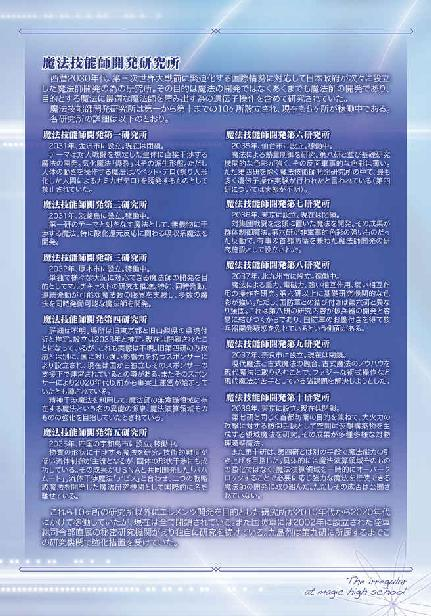
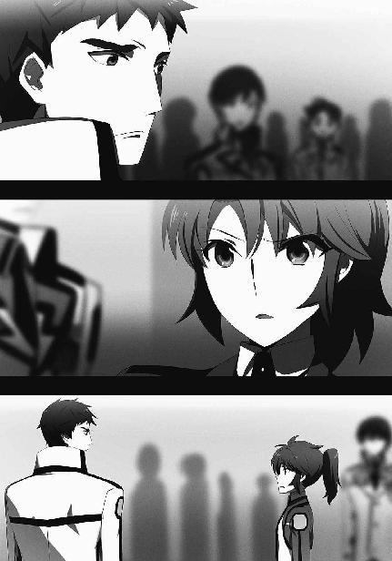
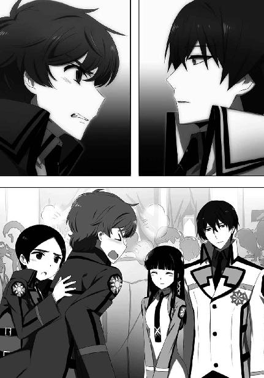

| 魔法科高校の劣等生(13) スティープルチェース編 (電撃文庫) | |
| 佐島 勤 | |
| (2016) | |

本書（電子版）に掲載されているコンテンツ（ソフトウェア／プログラム／データ／情報を含む）の著作権およびその他の権利は、すべて株式会社ＫＡＤＯＫＡＷＡおよび正当な権利を有する第三者に帰属しています。
法律の定めがある場合または権利者の明示的な承諾がある場合を除き、これらのコンテンツを複製・転載、改変・編集、翻案・翻訳、放送・出版、公衆送信（送信可能化を含む）・再配信、販売・頒布、貸与等に使用することはできません。


［０］
全国に十ヶ所設けられた魔法師開発研究所には、それぞれに異なるテーマがあった。
例えば最初に設立された第一研は魔法を最も効率よく兵器として利用する為の、生体直接干渉魔法の実用化。
第四研は精神干渉魔法を利用して、魔法師の無意識領域に存在する魔法という名の異能の源泉、魔法演算領域そのものの強化を目指した。
第七研の目的は対集団戦闘を念頭に置いた魔法の開発。その成果が群体制御魔法だ。
そして奈良に作られ大勢の古式魔法師を招いた第九研のテーマは、現代魔法に古式魔法を組み込むことだった。
古式魔法師は自分たちが伝承してきた古い魔法を科学によって改良し、新しくより強力な魔法が生み出されることを期待して第九研に参加した。だが第九研の目的はあくまで古式魔法の要素を取り込んだ強力な現代魔法の開発であり、優れた兵器としての魔法師の生産にあった。
結果としてただ利用され秘術を盗まれるだけに終わった古式魔法師が、この顚末に納得できたはずも無い。彼らが第九研出身の、「九」の字を冠する魔法師に敵意を懐いたのは仕方の無いことと言えよう。
この対立は、西暦二〇九六年現在も根深く残っている。
◇ ◇ ◇
西暦二〇九六年六月二十五日、月曜日。日本魔法界の長老にして国防陸軍退役少将の肩書きを持つ九島烈は、彼の長男であり九島家現当主・九島真言と共に旧魔法師開発第九研究所を訪れていた。
国立研究所としての第九研は第三次世界大戦の終結から程なくして閉鎖されたが、研究所としての機能は今も維持されている。現在は九島家、九鬼家、九頭見家共同出資の民間研究所として、作用系の魔法に比べて発展が遅れている知覚系統の魔法を研究している──ことになっていた。
しかしそれは表向きの姿。ここでは確かに知覚系魔法の研究も行われている。だがそれは、現在の主たるテーマではなかった。
研究所の奥深く。烈と真言が案内された大部屋には等身大の人形がずらりと並んでいた。
縦横四列、合計十六体。背を預けるようにして細い柱に固定されたそれらの人形は、女性型ロボット「ガイノイド」だった。
ここが３Ｈ、ヒューマノイド・ホームヘルパーの開発ラボであれば珍しくもない光景だろう。それ以外の用途、例えば軍事目的で人型機械を開発している研究施設も無くはない。
しかし魔法の研究所にガイノイドは、そぐわない物だった。──従来の常識からすれば。
「進捗はどうだ」
真言の問い掛けに、案内役の研究主任は得意げな表情を浮かべた。
「パラサイトの培養は順調です。ガイノイドへの定着も成功率が六十パーセントまで上昇しました。ご覧いただいておりますとおり、パラサイドールの試作体は十六を数えております」
「当初の予定数に達しているというわけだな」
「はい」
質問に答える研究員の態度は普通なら調子に乗っていると感じさせるものだったが、真言も烈も気にしなかった。彼のチームは、確かに鼻を高くするだけの成果を上げていた。
二人の容認姿勢を敏感に嗅ぎ取ったのだろう。研究主任の舌の回りはますます滑らかになっていく。
「培養したパラサイトは現在、忠誠術式の効果によりガイノイドの中で完全な休眠状態にあります。当初見られた術式に対する抵抗も観測されなくなりました。パラサイドールの実用化における最大の課題であった忠誠術式も完成を見たと申せましょう。ご命令があれば何時でも性能テストに取り掛かれます」
主任の期待を滲ませたセリフは、真言の予想を超えたものだった。実戦的な性能テストにはまだ時間が掛かるだろうと考えていた真言の頭の中には、その段取りが用意されていなかった。
「実戦テストはまだ早かろう。忠誠術式が組み込まれているからといって、自律行動を取らせるにはテスト回数が不足している」
研究員の提案に対する答えは、真言ではなく烈が返した。
「実験室の外でどの程度安定的に妖力を行使できるのかも分かっていない」
「ですからその為のテストを......」
納得できず食い下がる研究主任を、烈は手振りで制した。
「毎年八月に魔法科高校同士の対抗戦が行われているのは知っているな？ 今年はそこでスティープルチェース・クロスカントリーという種目が採用されることになった。物的障碍物と共に、魔法による妨害を乗り越えてゴールを目指す長距離障碍物競走だ」
烈の真意を、主任はすぐに理解した。
「その障碍物としてパラサイドールを使うのですね？」
「高校生の競技会に人数を割く余裕は、国防軍にも乏しいだろうからな。パラサイドールを使えば生徒から反撃を受けた場合も軍の魔法師が負傷することも無いし、忠誠術式で妖力の強さに制限を掛けておけば生徒に大きな怪我を負わせる心配も無い。実験室から出して最初の運用試験を行うには格好の機会だ」
「しかし先代、運営委員会が承諾するでしょうか？ 実験のことが外部に漏れた場合、世間がどのような反応を示すか、それを考えると彼らも首を縦には振らないと思いますが」
烈のプランを知らされていなかった真言が、九校戦の運営委員に仮託して高校生を実験台とすることに対する世間の反応に懸念を表す。だが、烈の意思は揺るがなかった。
「いや、運営委員会は首を縦に振る。今年の競技種目選定の段階で既に、運営委員会は国防軍の介入に屈している。今更我々の要請を突っぱねる気骨は残っていない」
ただ、情報が漏洩した場合の対策について烈は触れなかった。その責任を自分で負うつもりが無いのは明白だ。
そして万一、パラサイドールが制御を外れ魔法科高生に被害が出た場合のことは、烈も真言も口にしなかった。
パラサイドールの運用試験に関する細かな段取りを息子に任せて、烈は生駒の九島本邸に戻った。屋敷に着くなり烈が向かった先は、真言の末息子、光宣の部屋だ。
九島光宣は今年十六歳になる国立魔法大学付属第二高校の一年生。本来ならまだ学校にいる時間だが、今日は病気で休んでいる。──いや、今日も病気で休んでいる、と言うべきか。
「光宣、私だ」
ノックと共に烈が声を掛けると、やや慌てたような気配の後、部屋のドアが開かれた。その後ろから色白で線の細い少年が顔を見せる。優しく繊細な顔立ちだが、女の子と見間違うことは無いだろう。この様な表現が可能であるなら、九島光宣は「典型的な美少年」だった。
「お祖父様、この様な格好で失礼します」
その容姿に相応しい少年的な高く澄んだ声で紡がれたのは、祖父に対する謝罪の言葉。
「そのようなことを気に掛ける必要は無い。それよりも横になっていなくて大丈夫なのか」
パジャマ姿の孫に掛けたその言葉は、形だけのものではなかった。憂いを刻んだ烈の表情は、心から孫の体調を気遣うものだ。
祖父の愛情に、光宣は笑顔で応えようとした。
「大丈夫です。もう熱も下がっていますか──」
しかし「いますから」と言い掛けたところで激しい咳の発作に襲われ、彼はその些細な目的を果たせなかった。心配を掛けたくないという自分の心を裏切る自分の身体。それは彼にとっていつものことだった。今、光宣にできるのは、尊敬する祖父に涙を見せないことだけだ。
「光宣、横になっていなさい」
咳き込む孫の背中を優しく撫でていた烈が、発作の治まった光宣にそう促す。
「お祖父様......はい」
光宣は強がりを言おうとして、それを止めた。自分の身体がどのようなものか理解している彼は虚勢を張ることさえできない。大人しくベッドへ戻ることが結局、祖父を心配させない最も適切な行動だと聡明な彼は理解していた。
自分で首元まで布団を掛けた孫の枕元に、烈は椅子を運んで腰を下ろした。穏やかな声で、言い聞かせるように光宣へ話し掛ける。
「光宣、多少欠席が多くなっているからといって焦る必要は無いのだぞ」
それは、慰めではあったが気休めではなかった。
「お前の魔法力は同世代中屈指のものだ。九校戦に出場している魔法科高生と比較しても、お前に匹敵する生徒はほとんどいない」
そして、身内の贔屓目でもない。光宣は九島烈の孫に相応しい魔法力を持っていた。
「ありがとうございます」
祖父が自分の才能を本気で認めていると分かったのだろう。光宣の顔を覆っていた憂いが晴れる。烈の言葉は孫を励ますことに成功した。
しかし同時に、少し軽率なものでもあった。
「九校戦かぁ......出てみたかったな」
自己憐憫ではなく憧憬を込めて光宣が呟く。その一言が烈の胸を強く打った。
「光宣......」
魔法力だけでいえば光宣は百パーセント九校戦の代表に選ばれるだろう。しかしそれは、競技に出られる計算が立つならばの話だ。一年の四分の一を病床に過ごす光宣は、たとえ二高代表に選ばれたとしても欠場によってチームに掛ける迷惑を考慮し辞退するしかない。
「そんな顔をしないでください、お祖父様。力試しの舞台は九校戦だけではありませんから」
「そうだな、お前は頭も良い。魔法師として、あるいは魔工師として、活躍する機会はこれからいくらでもある」
ベッドの中から笑顔を見せる孫に、湧き上がる痛ましさを押し隠して烈は笑い掛けた。
光宣が本当は九校戦に出たがっていると、光の当たる場所で持って生まれた才能を存分に発揮することを望んでいると、烈は手に取るように理解していた。同時に孫が、そんな機会は来ないと思ってしまっていることも分かっていた。
健康であれば、諦める必要の無い未来。
無能であれば、懐くはずの無い望み。
光宣の豊かな才能は、かえって彼を苦しめている。それが烈には理不尽に思えた。
そしてその理不尽をもたらしているのは、神や悪魔などという不可視の存在ではない。
──孫にこの惨たらしい運命を刻んだのは自分の息子だ。
──それを止められなかったのは自分自身だ。
烈の心を自責の念がじわじわと蝕んでいく。
「そういえば今日は、響子姉さんもお見舞いに来てくれたんです。お祖父様にもお目に掛かりたかったと言っていました」
「そうか。良かったな、光宣」
「はい」
烈の孫たちの間でも、光宣と藤林響子は特に仲が良い。響子の来訪を語る光宣は本当に嬉しそうだ。
ようやく本物の笑みを浮かべた孫が余計不憫になって、烈はこの場に留まり難く感じた。彼は孫の額に手を置いて熱が大したものでないことを確認し、立ち上がった。
「少し休みなさい、光宣。そうすれば熱も下がるだろう」
「分かりました」
聞き分けの良い返事を返した孫に、苦労して浮かべた微笑みを返して、烈は光宣の部屋を後にした。
烈は自分の書斎で、愛用の肘掛け椅子に深々と身を沈めた。柔らかな革張りのクッションに何処までも沈んでいくような錯覚に陥る。リビングボードに鎮座するアルマニャックの瓶が自分を手招きしているように烈は感じた。立ち上がり、足を一歩進めたところで、再び椅子に戻る。自分が今、酔いに逃避することは許されないと思ったからだ。
烈は自問する。何故こんなことになったのだろうと。そして滑稽に思う。別に珍しい話ではないはずだと。他人のケースを仕方無いで済ませてきたくせに、身内のことになるとくよくよ悩むのはエゴイスティックだ......。烈はそう考えようとした。しかし、どれ程自分を嘲弄し叱咤したところで、この苦悩が消え去るはずも無い。それも烈は理解していた。
光宣が病弱な理由、それは遺伝子操作の副産物だった。彼は調整体魔法師──魔法因子を強化した遺伝子改造人間として生み出された。
真言が自分の息子に遺伝子操作を施すという暴挙に及んだのは父親、つまり烈に対するコンプレックスが原因だ。真言は若い頃からずっと、自分の魔法力が烈に遠く及ばないことに劣等感を懐いていた。自分の子供たちも十師族としては平凡な、自分を少し上回る程度の才能しか授からなかったことに失望していた。
客観的に見れば真言も彼の子供たちも十分強い魔法力を備えている。ただ、比較の対象が悪いだけだ。生存率十パーセントの後天的な強化措置を成功させた烈と、そのようなリスクを冒さなくても十分な能力を示していた真言の違いにすぎない。そのことを烈は繰り返し跡取り息子に言い聞かせた。しかし、真言を納得させることはできなかった。
真言の中で失望が力に対する執着に変わった時、彼の内に狂気が住み着いた。高い魔法力を持つ後継者が自然に得られないのなら、自分の手で人工的に作り出せば良いという妄念に囚われたのである。
人工授精と人工子宮の技術による計画交配で組み上げられた九島の遺伝子を更に改良して最強の魔法師を生み出す。そうして作り出されたのが光宣だ。表向き光宣は真言の妻の卵子に真言の精子を人工授精させた受精卵をベースに作り出されたということになっている。だが事実は、そんなまともなものではなかった。
光宣の遺伝子上の父親は九島真言。
遺伝子上の母親は藤林家に嫁いだ真言の末の妹。
つまり光宣は響子の異父弟であり──実の兄妹の間に生まれた子供だった。
近親相姦の子ではない。真言とその妹の間に性交渉は無く、あくまで単に精子と卵子を提供しただけだ。それでも、血のつながった兄と妹の間に生まれた子であることに違いは無かった。
光宣の体質が遺伝子調整の不具合によるものか、「血」が濃すぎることの影響によるものか、それは分かっていない。ただこの特殊な出生が光宣に呪いを掛けたのは間違いなかった。
魔法力強化の観点からいえば、調整は成功だった。
光宣は現在知られている魔法師の中で、最高レベルの素質を秘めている。その魔法力は司波深雪、アンジェリーナ・シリウスの両名に匹敵する。
しかし光宣は、その魔法力を極めて病弱な体質の所為でコンスタントに発揮できない。五輪澪のように虚弱というわけではないから、病気でない時は思いどおりに魔法を行使することができる。だがちょっとしたことで寝込んでしまう身体の持ち主に、魔法師として活躍できる機会は限られている。
一人前の魔法師として生きられないだけでなく、調整体魔法師──生体兵器として生み出されながらその役目すら果たせない末の孫。光宣に掛けられた呪いは、魔法師を兵器として作り上げる現代魔法開発の歪みがもたらしたものだ。十年以上にわたる苦悩の末に、烈はそう結論づけていた。
──魔法師を兵器とすることは、止めさせなければならない。
──これ以上、光宣のような子供を生み出してはならない。
烈は何百回目、何千回目になるか分からぬ決意を固めた。
［１］
六月最後の週。定期試験を間近に控えた放課後にも拘わらず、国立魔法大学付属第一高校生徒会室には打鍵音と電子音と時折発せられる質疑応答報告相談の小さな声が飛び交っていた。
午後最後の授業が終わってから約一時間後。その長くもない時間の経過後、達也が立ち上がりあずさの前に立った。
「会長、自治委員会と風紀委員会からの報告および提言は全て決裁待ちのディレクトリに整理しておきましたので、明日までに確認しておいてください」
「分かりました。......あの、司波くんが最後まで処理してくれて本当に構わないんですよ」
「そういうわけにも行きません」
彼の力量を信頼しているからなのか、あるいは単に面倒くさいだけなのか、あずさの丸投げ発言に達也は素っ気無く首を左右に振った。
「では失礼します」
「お疲れ様でした」
まだ閉門の時間には程遠い。他の役員は皆、仕事を続けていて立ち上がる素振りも無い。だがあずさは達也の「エスケープ宣言」を当たり前のように受け容れ、労った。
実のところ達也の早退はあずさの指示、というか、懇願によるものだった。
現在の生徒会役員は会長、副会長二名、会計、書記二名の合計六名。去年の同時期より一名多い。ただでさえ一人当たりの仕事量は減っている計算になるのだが、そこに達也が加わっていることで事態は好転しすぎていた。
要するに、達也の処理能力が高すぎるのだ。
生徒会には学校の運営上必要な仕事が多数委任されている。これは魔法科高校に限ったことではなく、二十一世紀末現在の一般的な風潮だ。
しかし、学校の経営を左右するような重要案件まで生徒に任せているわけではない。去年の四月に発生した「ブランシュ事件」のような大騒動に発展するケースは本当に稀なことなのだ。生徒会業務のほとんどは簡単な判断と、それなりに手間が掛かる調整と、本当に手間が掛かる事務作業からなっている。
そして達也がその処理能力をフルに発揮すれば、判断業務と事務作業は一人で余裕を持って終わらせてしまえるのである。それは他の役員の仕事が無くなってしまうということであり、それだけ他の役員が経験を積む機会が失われるということを意味している。
生徒会役員の任期は最長でも二年半しか無い。達也が何でもかんでもやってしまうと下級生は仕事を覚えず同級生も仕事を忘れ上級生も今の段取りが分からなくなってしまう。もし達也が長期欠席するようなことがあれば、生徒会の仕事が回らなくなってしまう、ひいては学校の運営が滞ってしまう。
それは本当に万が一のリスクだが、そうなる可能性があるだけでも非常にまずい。生徒会長のあずさと会計の五十里は四月の一ヶ月でその結論に達した。だからといって達也に向かい「手を抜いてくれ」と頼む度胸は二人とも、特にあずさには無かった。そこで苦肉の策として打ち出したのがこの「早退推奨」だった。
これは達也にとっても都合の良い話だった。元々達也は高校の放課後を、魔法科高校を含む魔法大学関連施設内でのみ公開されている文献の閲覧と鍛錬に当てるつもりだったのだ。風紀委員や生徒会役員の地位（とそれに伴う職務）は彼にとって望まざるものだ。仕事を早く切り上げて良いと言われれば、余った時間の使い道はいくらでもあった。
「深雪」
「はい、お待ちしております」
後で迎えに来る、というセリフも既に必要無い程、このやり取りも繰り返されていた。
生徒会室を後にする達也の背中を、書記のほのかが物足りなげに見送っている。
生徒会室を後にする達也の背中を、同じく書記の泉美が「この怠け者」と言わんばかりの冷たい視線で、深雪に気づかれないようこっそり睨みつけていた。
◇ ◇ ◇
これからクラブ活動に向かうには中途半端な時間。それ故に無人だった更衣室で野外演習服に着替えた達也は、制服の入ったバッグを自分の教室のロッカーにしまってから、学校裏の演習林へ向かった。
この人工の森林は魔法の訓練の為だけでなく、軍人や警察官、レスキュー隊員などの進路を志望する生徒のニーズを満たす為に体力増強のトレーニングにも役立つよう木々の密度や起伏が計算され、池や砂地や水路や走路が配置され、様々な器具や機械が設置されている。故にここを活動拠点とするクラブは魔法競技系のものだけではない。純粋に肉体的な野外活動を目的とするクラブにも利用日が割り当てられていた。
達也が訪れようとしているのも、そうした非魔法競技系クラブの一つだった。
「よう、達也」
彼が挨拶するより早く、友人から声が掛かる。
「達也兄さま」
その声で気づいたのか、大きな薬缶を手にした水波が達也に向かってペコリとお辞儀した。
「邪魔するぞ、レオ。水波も頑張っているようだな」
達也は手を挙げてレオに応え、水波に声を掛けて、
「ところで県部長はどちらだ？」
責任者の所在を訊ねた。
「ここだ」
その質問に対する答えは本人から返ってきた。ランニング用に整えられた林間の走路ではなく、下草の生い茂った林の中から姿を現したのはレオが所属する山岳部部長、県謙四郎だ。
達也は地面に倒れたまま呻き声を上げている一、二年生男子部員の間をすり抜け、県の前で一礼した。
「部長、本日もお世話になります」
「おう、ゆっくりしていけ。もし良かったら一年生どもを少ししごいてやってくれや」
このセリフに生ける屍と化した部員の半数が身体をビクッと震わせたが、立ち上がって逃げ出すことのできた者はいなかった。
「そうですね。コースを一回りした後で良ければ」
「一回りした後か。余裕だな......。それに比べてお前らは」
達也の答えを聞いて県は愉快そうに笑った後、未だに起き上がることのできない部員たちを情け無さそうに見回した。
「たかが林間走十キロ程度でだらしないぞ！ 西城を見ろ、ぴんぴんしてるじゃないか」
「......レオと一緒にせんでください」
かろうじて答えを返したのは二年生部員の一人。何とか声を出せるまでには回復したものの、起き上がるのはまだ無理そうだ。
「泣き言を言うな。三年はもう一周余計に走っているんだぞ。さあ、いつまで寝転がっている。お前らはまだ死んでいないぞ」
気の抜けた笑い声があちこちで上がり、二年生部員が次々と力を振り絞ったという態で身体を起こす。さすがに死んだふり扱いは不本意だったようだ。
しかし、起き上がったのは二年生のみ。一年生部員には意地を張る余力も無かった。
「仕方ねえなぁ......。桜井っ！」
それまでじっと控えていた水波が、県に声を掛けられ「はい」と返事をして、一旦足元に置いていた薬缶を手に持ち一番手近の同級生の側へ小走りに駆け寄った。
「やれ」
「はい」
県の指示に、水波が手に持つ薬缶を傾ける。
「あっ、熱っ！」
薬缶から注がれる液体を顔に受けた一年生が転げ回って水波の足元を離れ、立ち上がり、もつれる足で更に距離を取る。
「熱湯か......？」
思わず呟いた達也の疑問に、隣へ来ていたレオが笑いながら頭を振った。
「いんや。せいぜい四十五、六度だ。あの程度の量なら火傷もしないぜ」
木陰に座り込んでいる女子部員も失笑を漏らすのみで心配している様子は無い。大したことが無いのは確かなのだろうが、それにしても乱暴なやり方だと達也は思った。
「前世紀、試合中に倒れたラガーメンは薬缶の水を浴びることで闘志を奮い立たせたという」
達也とレオの会話を聞いていた県がそんな蘊蓄を語り出す。
「水じゃないのは県部長のアイデアですか？」
「今の季節、冷たい水だと気持ちが良いだけでそのまま寝ちまうヤツがいたからな」
達也の疑問に県がそんな裏話を披露する。彼らの視線の先では、水波が同級生の男子生徒に次々と熱い湯の洗礼を浴びせていた。
池の上に張り渡された数本のロープ。そこからぶら下がる細い丸太を摑んで空中をすいすい進む達也の横から、同じく涼しい顔のレオが話し掛けてきた。
「なあ、達也。桜井は何でウチの部に入ったんだ？」
「今更だな」
「いや、前から気になってはいたんだがよ......」
レオの言うとおり、水波は山岳部の正式な部員である。それに対して達也は場所を使わせてもらっているだけの部外者だ。──余談だが、山岳部の部活に参加する条件として達也は部員たちのＣＡＤ調整を引き受けており、部の同級生から「名誉部員」などと呼ばれている。
閑話休題。
「桜井の魔法力ならあちこちから引く手数多だったんじゃねえか？」
レオの言っていることは事実で、レオの疑問は当然のものだ。水波の魔法力は四月の「恒星炉実験」で全校に知れ渡っているが、新勧週間の時点でも入試成績上位者として各部にマークされていたのだ。普通なら魔法競技系クラブに入部しているはずだった。
「身体を鍛えたいから、と言ってたな」
その質問に、達也は半分の真実で答えた。対岸に着地した後、飛び石になっている狭い足場を渡りながら、整地されたグラウンドを走っているのと変わらない緊張感の無い口調で。
「一年生の女子であれだけ動ければ十分だと思うんだがなぁ」
レオの指摘はもっともなものだ。そもそも水波は四葉本家で戦闘用の魔法師として育成されていたのだから、身体能力も高くないはずがなかった。
しかし十分というなら、魔法力も高校生レベルとしては既に十分すぎるレベルにある。こちらの方がもっと、部活で鍛える意味は無い。
「水波にも思うところがあるのだろう」
水波は山岳部だけでなく料理部も掛け持ちしている。彼女が部活に参加している第一の動機は時間潰し、生徒会役員の達也たちと──より正確に言うなら自らの主人である深雪と──帰りの時間を合わせる為だ。この、残り半分の理由は、達也も口にするのを憚られた。
◇ ◇ ◇
実技を重視する魔法科高校にとって、九校戦──全国魔法科高校親善魔法競技大会は極めて重要な行事である。学校サイドにとってのみならず、生徒にとっても。何故なら九校戦の成績が進路に直結することもあり、しかもそれが決して珍しいことではないからだ。となれば、定期試験以上に力を注ぐのも当然かもしれない。
万事に慎重な第一高校生徒会長・中条あずさは、自校生徒の熱意が無駄にならないよう、例年より一ヶ月も早く九校戦の準備に着手した。その甲斐あって試験直前にバタバタすることも無く、余裕を持って準備が調う見込みだった。
今日、西暦二〇九六年七月二日月曜日、予想外の報せが飛び込んでくるまでは。
その日の放課後、達也と深雪はいつものように生徒会室へ向かった。来週は定期試験だが、生徒会の活動はそんなものに関係なく行われる。とはいえ前述の理由で、今年は例年に比べ役員に掛かる負荷はむしろ軽減されている。──そうでなくてもこの兄妹は一夜漬けの類に縁が無いので、焦燥感や不平不満とは無縁である。
ともあれ、いつものように達也が生徒会室の扉を開けた直後。
部屋の中から漂い出て来た重い空気に、達也は思わず足を止めてしまった。
「お兄様？ どうなさ......」
達也だけでなく、彼の背中から中をのぞき込んだ深雪まで「どうなさいました？」という簡単なセリフを言い終えることもできず固まってしまっている。二人の視線の先では、あずさがこの世の終わりのような絶望感を放ちながら頭を抱えていた。
「あっ。二人とも、ご苦労様」
生徒会長のデスクの前から、途方に暮れた顔の五十里が話し掛けてくる。それをきっかけに、達也はようやくこのよどんだ空気の中へ足を踏み入れる決意がついた。
「お疲れ様です、五十里先輩。一体何があったんですか？」
決心すれば回りくどい真似はしないのが達也の流儀だ。頭を抱えたままのあずさに構わず、達也は五十里に事情を訊ねた。
「いや、それがね......」
「九校戦の運営委員会から今年の開催要項が送られてきたんです」
歯切れの悪い五十里に代わって、未だ顔を見せないままのあずさが達也の質問に答えた。
「ああ、もうそんな時期ですね」
「詳細も明日、公式サイトに公開するとのことでした」
「そうですか。それで、何が問題だったんですか？」
どうやらその要項に頭を抱えたくなる問題が存在していたらしいことは分かる。だがここまで派手に落ち込む問題とは、一体何だったのだろうか。達也にそれを確認しないという選択肢は無かった。
「何もかもです！」
もしかしたらあずさは、この質問を待っていたのかもしれない。彼女は勢い良く顔を上げ、呪詛にも似た愚痴をこぼし始めた。
「開催要項は競技種目の変更を告げるものでした！」
「......何が変わったんですか？」
確かにそれは悪いニュースだ。彼ら一高生徒会は九校戦の運営要領が去年と変わらないことを前提に準備を進めてきた。だが近年競技種目が固定されていたとはいえ、それを変更しないというルールは無い。採用競技は大会一ヶ月前までに各校へ通知する決まりなので、今日種目変更の通知があったのはルールどおりの手続きでしかない。
「三種目です！」
しかしあずさが悲鳴のような声で返した答えには、達也も驚かずにいられなかった。
「スピード・シューティング、クラウド・ボール、バトル・ボードが外されて、新たにロアー・アンド・ガンナー、シールド・ダウン、スティープルチェース・クロスカントリーが追加されました！」
全六種目の内、その半数が入れ替え。しかも新旧競技でその性質が──必要とされる魔法の種類がかなり異なる。これでは選手の選考からやり直さなければならないだろう。
しかし、この結論は早計すぎた。あずさの回答はここで御仕舞いではなかった。
「しかも掛け持ちでエントリーできるのはスティープルチェース・クロスカントリーだけなんですよ！ その上、アイス・ピラーズ・ブレイク、ロアー・アンド・ガンナー、シールド・ダウンはソロとペアに分かれているんです！」
あずさが両手で机を叩いて力説する。ここに至り、達也は妙に納得感を覚えた。今回のルール変更は各校に対し、九校戦の戦い方に劇的な変更を強いるものだ。選手選考の方針から始まって、戦略も戦術も一から見直さなければならない。
つまり、早めに準備していたことが全て無駄、準備の良さが裏目に出てしまったわけだ。これではあずさが落ち込むのも無理はない。パニックを起こしていないだけ良く我慢していると達也は思った。
「あの、お兄様」
息を荒げる生徒会長を何と言ってなだめようか、と考えている達也へ、背後から深雪が遠慮がちに声を掛けた。
「ロアー・アンド・ガンナー？ やシールド・ダウン？ スティープルチェース・クロスカントリー......とはどのような競技なのですか？」
深雪はおそらくアイス・ピラーズ・ブレイクにエントリーすることになるので、ロアー・アンド・ガンナーとシールド・ダウンに出場する可能性はほとんど無い。だがスティープルチェース・クロスカントリーは唯一掛け持ちが許された競技として出走することになるだろうし、他の二つも九校戦の選手としてやはり気になるのだろう。それは当然の心理だった。
「俺が知っているルールがそのまま適用されるとは限らないが......」
だから達也はそう前置きして、妹の疑問に答えてやることにした。
「ロアー・アンド・ガンナーはロアー、つまり漕ぎ手とガンナー、射手がペアになって無動力の小型ボートを走らせながら水路脇に設置された的や水路上を動き回る的を狙撃する競技だ。ゴールまでのタイムと命中した的の数で競う。ソロがあるということは、ロアーとガンナーを一人で兼ねる競技形態も設けられているのだろうな。元々はＵＳＮＡの海兵隊が上陸支援の訓練として行っていたものだ」
深雪から質問が無いことを確認して、達也は次の競技の説明に移る。
「シールド・ダウンは盾を使った格闘戦だ。通常は地面や床より一段高くなった試合場で行われる。相手の盾を破壊する、相手の盾を奪う、または相手選手を場外に落とせば勝利だ。相手選手の身体に物理的な攻撃を加えることは禁止されているが、盾に対する攻撃は可能。つまり魔法、自分の盾、自分の身体で相手選手の盾を攻撃するか、魔法で相手選手を場外に落とすのがシールド・ダウンの戦い方になる」
「自分の盾を相手の盾にぶつけて相手を場外に落とすのはありなんですよね？」
「無論ありだ」
「今回のルールでは盾を奪わなくても、相手が五秒以上自分の盾を手放せば勝ちになるけどね」
深雪の質問に対する回答の後、五十里の補足説明が入った。達也は少し間を置いたが、それ以上の補足も訂正も無かったので次に移った。
「スティープルチェース・クロスカントリーはその名のとおりだな。スティープルチェース、つまり障碍物競走をクロスカントリーで行う競技だ。障碍物の設置された森林を走破するタイムを競う。各国の陸軍で山岳・森林訓練に採用されている軍事訓練の一種だよ。障碍物には物理的な自然物や人工物の他、自動銃座や魔法による妨害も用いられる」
「随分ハードな競技ですね......」
深雪が漏らした素直な感想に、達也は眉を顰めて頷いた。
「ロアー・アンド・ガンナーとシールド・ダウンはともかく、スティープルチェース・クロスカントリーは高校生にやらせるような競技じゃない。運営委員会は一体何を考えているんだ？」
詰るように達也が呟く。そこに五十里からとんでもない情報が追加された。
「しかもスティープルチェースは二年生、三年生なら男子も女子も全員エントリー可能。実質的に一年生以外全員参加だね」
「......余程しっかり対策を練らなければ、ドロップアウトが大勢出ますよ」
達也の言うドロップアウトは、競技からの落伍者ではなく魔法師人生からのドロップアウトだ。その可能性には思い至っていなかったのだろう。
「そんな......！」
あずさは絶望感を漂わせる呻き声を上げて再び机に突っ伏した。
生徒会の業務は九校戦の準備だけではない。魔法科高校に限らず、一部を除き今の高校は生徒会に学校運営の実務を大きく委任しており、生徒会の業務が滞れば学校の運営に支障を来すことになる。だからこういう時でも最低限の仕事はこなさなければならないわけで、お遣いに行っていたほのかと実技の授業が長引いていた泉美が生徒会室に顔を見せた頃には、達也も深雪も生徒会の仕事に取り組んでいた。
──あずさは相変わらず机に顔を埋めていたが。
──五十里はそんな彼女を何とか水面上に引き上げようと奮闘していたが。
「こうなった以上、選手の選考をやり直すしかないよ」
「............」
「幸いまだ時間はあるから！ それに準備してきたことが全く無駄になってしまったわけじゃないし！」
「............」
「スティープルチェース対策もきっと何とかなるって！ だから、ねっ、中条さん。今は──」
あずさの後ろに回り込み、せめて自分の世界に閉じこもっている状態だけでも解消させようと彼女の肩を優しく揺すっていた五十里は、
「──啓？」
背後から掛けられた冷たい声に凍りついた。
「......花音？」
五十里がぎこちない動作で風紀委員会本部に続く階段の方へと振り返る。そこには予想どおり、彼の婚約者が立っていた。──笑いながら、こめかみに青筋を浮かべて。
「け～い～。なぁにしているのかな～？」
「えっ、いや、何って」
「中条さんに覆い被さって、一体何をするつもりだったのかな～？」
シールを貼り付けたような、真実味の無い笑顔。花音の心情は実に分かり易いものだった。
「誤解！ 誤解だよ！」
五十里が懸命に首を振る一方で、あずさは部屋の隅へ避難している。来月の九校戦より目の前の修羅場に対応することを選択したのだろう。他のメンバーの対応はというと、例えば泉美は必死に言い訳する五十里を煩わしそうに見ていたが、飽きてきたのか呆れ果てたのか視線を作業中のディスプレイ──ではなく、デスクで報告書を読んでいる深雪へ向けた。
泉美にとって、深雪は心のオアシスである。作業に疲れた時や難問に行き詰まった時、あるいは不快感で神経がささくれた時、深雪の姿を視界に入れるだけで泉美は心が潤っていくのを実感できる。今、犬も食わない痴話喧嘩に、泉美のやる気は地を這っていた。彼女が深雪をこっそりのぞき見ようとしたのは、（泉美の理屈では）モチベーション回復の為の必要欠くべからざる措置だったのだ。
ところがどういう偶然か。振り向いた泉美と顔を上げた深雪の視線がバッチリ合わさってしまった。慌てて言い訳を考え始めた泉美に、深雪は困っているような笑みを浮かべて花音と五十里の方へ瞳を動かした。そして今度は、深雪から泉美へ眼差しを送る。
敬愛する「お姉さま」の気持ちを察した泉美はアイコンタクトで「どうしましょうか？」と問い掛けた。というより、相槌を打った。深雪は一度だけ、微かに首を左右に振って「どうしようもないわね」と言わんばかりに再度、困惑の笑みを浮かべた。
今日も達也たちは放課後の定番、行きつけの喫茶店「アイネブリーゼ」に寄り道していた。メンバーは達也たち二年生八人と、一年生が水波一人。途中まで一緒だった泉美は混ざりたそうな顔をしていたが、双子の姉の香澄にその気が全く無かったので仕方無く真っ直ぐ帰ることにしたようだ。一人、上級生に囲まれた水波はかなり居心地が悪そうだったが、役目に忠実な彼女に別行動の選択肢は無かった。
今日、放課後のコーヒーブレイクを言い出したのは幹比古だ。彼にしては珍しいと言える積極的な態度は、何か話したい、または訊きたいことがあるのではと感じさせるものだった。
そして案の定、オーダーを済ませてすぐに、幹比古から達也へ質問が飛んだ。
「達也、九校戦の種目が変更になったって本当かい？」
「随分と耳が早いな」
皮肉か称賛か少し区別がつきにくい言葉で、達也が幹比古の問いを肯定する。
「誰から聞いたんだ？」
「委員長と五十里先輩が話してた」
種明かしは幹比古からではなく雫からもたらされた。二人の共通点は風紀委員であること。つまり風紀委員会本部で盗み聞きしたというわけだ。
「詳しい内容までは知らないんだけど」
「えっ、種目が変わるの？ 何が何に？」
幹比古の必要が無い言い訳に、エリカが食いついた。
「今日生徒会宛てに通知が来た。スピード・シューティング、クラウド・ボール、バトル・ボードが外れて、ロアー・アンド・ガンナー、シールド・ダウン、スティープルチェース・クロスカントリーが加わる」
「それ、どういう競技なの？」
達也が深雪にしたのと同じ説明をエリカに行うと、彼女はにんまり笑みを浮かべた。
「へえ......楽しそうじゃない。特にシールド・ダウンとか」
エリカの感想は心做しか、声まで弾んで聞こえた。
「えっ、そうかな......何だか怖そう」
見るからにワクワクしている友人に、美月が控えめな反論を行う。
「うん......去年まで採用されていた競技はどれも、選手同士が直接ぶつかり合わないものばかりだったよね」
「モノリス・コードですらそうだったのに」
ほのかのセリフに、美月は自身もそう思っていたのか、すぐさま相槌を打った。
「でも本当に危ないのは、シールド・ダウンよりスティープルチェースの方だと思う」
「ええ。お兄様もそう仰っていたわ」
そこへ雫が意見を挿み、深雪がその言葉に頷いた。
「道の無い森の中じゃ、ただ移動するだけでも慣れてなきゃ危ないからな。物理的な障碍物に加えて魔法による妨害とくりゃ、怪我人が出なかったら不思議ってもんだぜ」
「そうだね。山駆けは道があっても経験豊富な先導者が必要だ。不慣れな森の中でスピードを競うなんて無謀すぎる」
レオと幹比古もそれぞれの経験から批判的な、というより否定的な意見を口にする。
「なあ、達也。今回加わった種目って、やけに軍事色が強い気がすんだけど？」
レオの問い掛けは、この場にいる全員が何となく感じていることだった。
「そうだな」
また、その見方は誤魔化しようも無く正しいものだった。故に達也としても、頷くより他に無い。彼は気が進まぬながらも、自身の推測に基づく不愉快な解説を付け加えた。
「おそらく横浜事変の影響だろう。去年のあの一件で国防関係者が改めて魔法の軍事的有用性を認識し、その方面の教育を充実させようとしているんじゃないか」
「反魔法主義マスコミがアジっているとおりになってるね」
エリカが人の悪い笑みを浮かべて茶々を入れる。彼女の皮肉な混ぜっ返しを達也は笑って済ませることができなかった。
「ああ、時期が悪いとしか言いようが無い。何故こんな分かり易い変更を行ったのか......。現下の国際情勢で焦る必要は無いと思うんだがな」
達也の言葉に、ほのかと美月が不安を覚えたのか表情を曇らせる。
「......それはともかく、これから忙しくなりそうだ」
その空気を変えようとしたのか、達也は殊更うんざりした様子でそう続けた。それは全くの演技というわけではなかった。今回のことで達也の快適な放課後がしばらくの間、少なくとも九校戦が終わるまでお預けとなるのは確実だったからである。
◇ ◇ ◇
九校戦の種目変更に不満を漏らしていたのは、第一高校の生徒だけではない。十師族一条家の屋敷でも、第三高校の生徒が同級生に対して愚痴をこぼしていた。
「いきなりあんな......信じられないよ」
「そうだな」
「いくら規定どおりだからって......あそこまで大幅な変更ならもっと早く知らせてくれても良いだろうに」
「確かに」
「外された競技の練習も始めていたし、起動式の見直しまで進めていたのに......今までの苦労が水の泡じゃないか」
「まったくだ」
「選手の選考からやり直さなきゃ......って、将輝、聞いてるの!?」
九校戦運営委員会からの通知に対して愚痴っていた吉祥寺は、短い相槌を繰り返すだけの将輝にあしらわれていると感じたのか、そう食って掛かった。
「もちろんだ。聞き流していたなんて思われるのは心外だぞ」
しかし将輝の方も実は余り穏やかな心境ではなかったようで、言い返す口調はかなり鋭い。
「......ごめん、八つ当たりだった」
「いや、俺の方こそすまん。ジョージに当たっても仕方無いのにな」
そしてお互いに感情を吐き出したことで頭が冷却されたのだろう。刺々しいムードはすぐに消え去り、徒労感が二人の間に満ちる。
「とにかく、決まってしまったことに俺たちがあれこれ言っても、どうにもならない」
将輝が自分に言い聞かせるようにそう言うと、
「そうだね......。まずは選手選考のやり直しか。はぁ......」
吉祥寺が諦めを滲ませてため息をついた。
「そうだが......ものは考えようだぞ、ジョージ」
だが次に将輝の口から出た言葉は、単なる気休めとは思えない力の込められたものだった。
「どういうこと？」
自然、問い返す吉祥寺の表情も、訝しげながら真剣味を増したものになる。
「今回の入れ替えで追加された競技は、どれも実戦的な色彩が強いものだ。一高より三高に有利だと思う」
「そうか......。一高は生徒の国際評価基準のランクアップに重きを置いて、魔法技能の向上に直結しない戦闘技術は重視されていないそうだからね」
「マジック・アーツの沢木選手とかアイツとかの例外はいるけどな。学校全体として見れば実戦的な魔法はこちらが上だし、九校戦の選手団に限っても、こちらに分があるはずだ」
「そう......だね。でも」
将輝の見解に対する吉祥寺の同意は、条件付きのものだった。
「九校戦の勝敗は出場選手の平均順位じゃなくて、各競技の順位に応じた得点の合計で決まる。今回の競技ルールだとミラージ・バット以外は一競技に一人、ペアだと一組しかエントリーできないからね。誰をソロに持って来て誰にペアを組ませるか、その人選が鍵になるよ」
「なる程。言われてみれば、今回は重複エントリーが制限されているからな。ジョージの言うとおり、ソロとペアの振り分けが大きな意味を持つことになりそうだ。例えば、確実に勝ちを狙うなら俺とお前でペアを組むのが一番良い。だが──」
将輝はいきなりセリフを中断してドアへ目を向けた。ノックは無かった。だが、彼の感覚に間違いも無かった。
「いらっしゃい、真紅郎くん」
次の瞬間、潑剌とした声と共に一条家の長女にして将輝の妹、茜が入ってきた。
「お前な......部屋に入る時はノックをしろと、いつも言ってるだろ」
既に定番となっている兄からのお説教を聞き流し、茜は手にしたトレーからアイスティーとガムシロップを吉祥寺の前に置く。
「はい、真紅郎くん。ガムシロップは一つで良いよね？」
「あっ、ありがとう、茜ちゃん」
「どういたしまして。兄さんは要らないよね？ ノックも無しに入ってくるがさつな妹の持って来た飲み物なんて」
そして茜が澄ました顔で将輝へ向けて放ったセリフに、それを向けられた当人は苦虫を嚙み潰した表情で答えた。
「......置いていけ」
言うまでもなく冗談だったのだろう。茜が笑いながらアイスコーヒーを将輝へ差し出す。ここで余計な皮肉や憎まれ口を叩かないところに、彼女の性格と育ちの良さが窺われる。
こういうやり取りはこの兄妹の恒例行事だ。
「茜ちゃん、今、帰って来たの？」
だから吉祥寺も今更気にしない。それよりも彼は、茜の服装が気になった。
「うん、そうだよ」
何気なく頷いてから、茜は何事に気づいたのか「あっ」という表情を浮かべた。
「そっか。夏服を見てもらったのって初めてだったね」
茜は空になったトレーを持ったまま、その場でクルリと回った。夏用の薄い生地で作られたプリーツスカートとセーラーカラーがふわりと舞う。
「どうかなぁ？ 似合ってる？」
はにかんだ茜の笑顔はびっくりするくらい「少女」のものだった。中学生になって「子供」から「少女」へ急激な変貌を遂げた親友の妹を、吉祥寺は以前から驚きの目で見ていた。しかしそれを分かっていたつもりでも、こうしてふとしたはずみにドキリとさせられてしまう。
「う、うん。良く似合っているよ」
「ホント？ 嬉しいな、ありがとう」
吉祥寺が絞り出した愛想の無い賛辞に、茜が心から嬉しそうに柔らかく笑う。
半年足らず前ならばきっと手を叩いて喜んでいるところ。こんなちょっとした仕草にも「少女」が宿っていた。
白と水色、半袖の涼しげなセーラー服。伝統色の強い名門私立中学の制服はそんな彼女を余計に眩しく見せて、吉祥寺は無意識に目を細めた。......そしてふと隣から、責めるような、憐れむような視線を彼は感じた。
「ジョージ、お前やはり......」
「誤解だよ！」
将輝から向けられた疑惑の言葉を、吉祥寺は反射的に否定する。二人だけの時ならこの対応でも問題無かっただろう。だが三人目の当事者がいる前では、賢いものではなかった。
「ふーん......兄さん、妬いてるの？」
好きな相手に「恋愛対象として見ていない」と即答されれば誰でも傷つく。そこに年齢は関係ない。茜のように自分の想いを恋愛感情として認識していれば尚更のことだ。
ただそのはけ口が吉祥寺本人ではなく将輝に向いたのは子供らしい八つ当たりなのか、あるいは逆に、好きな男に嫌われたくないという女の情念の故か。
「バカ言うな」
そのどちらであるにせよ、将輝としては素っ気無く否定するしかない。真面目に取り合う気にはなれないし、かといって子供扱いしすぎるとますます拗ねて面倒なことになるからだ。
「フン、誤魔化しちゃって」
ここまでは割と良くある憎まれ口。この後、いつもなら茜が「真紅郎くんは渡さないからね！」とか何とか啖呵を切って、吉祥寺が兄妹の仲裁に入るパターンだ。
「聞こえてたんだからね」
だが今日は少し風向きが違った。
「何がだよ」
将輝の反問に、茜が余裕の笑みを浮かべる。
「兄さんが真紅郎くんにダンスのパートナーを申し込んだことよ！」
「なにぃっ!?」
「ええっ!?」
この発言には将輝だけでなく吉祥寺も驚愕せずにいられなかった。二人とも身に覚えが無いから尚更だ。
「兄さん、自分と真紅郎くんでペアを組むのが一番良いとか言ってたじゃない」
「お前、盗み聞きして──」
「不潔」
将輝のセリフをぶった切り、茜が軽蔑の眼差しを兄へ向ける。
「男同士のペアなんて非生産的よ」
「いや、ちょっと待って、茜ちゃん！ それ誤解。誤解だから！」
女子中学生の罵倒を受けて、吉祥寺が命懸けの勢いで弁明を始める。彼の心境としてはまさに命懸け、自身の社会生命が懸かっていた。
一条家の一室で、その主である将輝がフリーズを続ける中、実に二時間にわたって吉祥寺の熱い言い訳が続いた。
［２］
魔法科高校各校を困惑と混乱の渦に放り込んだ通達から、一夜明けた七月三日、火曜日の朝。旧茨城県土浦に置かれた国防陸軍第一〇一旅団の司令官室では、旅団長・佐伯広海少将が独立魔装大隊隊長・風間玄信少佐を呼び出していた。
佐伯少将は今年で五十九歳になる女性将官だ。彼女はずっと参謀畑を歩んできた才女で、光の加減によって銀色に見える総白髪から陰では「銀狐」などと呼ばれている。もっともその容姿は一見、小学校の優しい女校長先生であり、狐のイメージからかけ離れている。
また佐伯少将は国防軍内における十師族批判の最右翼としても知られている。とは言っても、魔法師に対する感情的な反発とか生理的な嫌悪とかとは全く縁が無い。彼女は国の防衛が十師族という私的な枠組に強く依存していることに対して警鐘を鳴らし続けてきた人物だった。その所為で佐伯は九島烈の政治的ライバルと見做される向きもあるが、少なくとも彼女自身にそんな意識は無い。
彼女と風間の付き合いは、大越戦争まで遡る。
大亜連合がインドシナ半島征服を目指して南下したあの戦争で、風間は軍上層部の意図に背く形で戦闘に直接介入した。彼が参加したゲリラ戦により大亜連合軍の侵攻は停滞を余儀なくされ、ＵＳＮＡと新ソ連の介入を招き、最終的に目的を達すること無く撤退した。
風間はこの時の活躍により森林戦の世界的エキスパートという評価を得た。だがそれは、当時防衛陸軍総司令部所属の情報参謀であった佐伯が、ほとんど孤立無援の戦いを（主に味方から）強いられていた風間を情報・作戦両面で支援したからこその戦果でもあった。
大越戦争における独断専行で──当時風間に与えられていた任務は秘密裏に大亜連合の南下を妨害することであり、「秘密裏に」という部分には背いているものの「独断専行」というのは多分に言い掛かりである──風間は普通の意味での出世の道を断たれたが、彼を支援した佐伯が咎められることは、公式にも非公式にも無かった。彼女は優秀すぎて、軍上層部も冷遇できなかったのである。
そうして四年前、沖縄防衛戦の直後に彼女のプランを採用する形で第一〇一旅団が設立されその初代司令官に任命されると、佐伯は風間を呼び寄せ、尉官に止め置かれていた彼を少佐に昇進させると共に、独立魔装大隊の隊長に任命したのであった。
斯様にこの二人は、交流の時間こそ少ないが密度の濃い付き合いだ。二人の性格的な相性もあって、今では気心の知れた、本音で語り合える上官と部下になっていた。それでなくても独立魔装大隊の任務は新たな魔法装備、新たな魔法戦術の試験運用。第一〇一旅団の設立目的は十師族に依存しない魔法戦力の確立であり、風間に任せられた部隊はその要だ。佐伯と風間の距離が近くなるのは当然の成り行きだった。
この司令官室で、二人は他に公言できない焦臭い会話を多々交わしている。
「風間少佐、今年の全国魔法科高校親善魔法競技大会、通称九校戦の競技種目が大幅に入れ替わっているのを知っていますか」
そして今朝の佐伯の話は、こんな質問で始まった。
「そのような動きがあるということだけならば。正式に決まったのでありますか」
こう問い返しながら、風間は意外感を覚えていた。佐伯は弱い魔法資質持ちではあるが魔法師ではない。彼女は魔法というファクターを組み込んだ戦略の立案、戦術レベルでの魔法戦力の運用にかけて国防軍有数の知見を有していたが、戦闘に直結しない魔法競技は然程興味が無いはずだった。
「少佐にしては鈍いですね。昨日、魔法科高校各校宛てに正式な通知がありました」
そう言って佐伯はデスクの前に「休め」の姿勢で立つ風間へ、座ったままで書類の束を差し出す。わざわざ紙に出力した理由は、そこに肉筆で追記した内容がネットワーク経由で漏洩しないようにとの配慮。実効性を別にした佐伯のクセみたいなものだった。
しばらくの間、司令官室が紙をめくる音だけで占められる。かなりの速さで最後のページに到達した風間が、顔を上げて目で用件を問い掛けた。
「感想は？」
しかしまだ本題にはたどり着かないらしい。佐伯を相手に急かしても効果は無いので、風間は大人しく彼女の段取りに付き合うことにした。
「これは軍事教練のメニューです」
「......言い切ってしまうのもどうかと思いますが、私もほぼ賛成です」
佐伯は思い出したようにデスクの端にあるボタンを押した。壁の中から折り畳まれた椅子が現れ、風間の背後へ移動する。佐伯は手振りでその椅子に座るよう指示した。
これは話が長くなるという合図みたいなものだ。風間は一礼し、椅子の座面を展開して佐伯の正面に腰を下ろした。
「今回の競技種目変更は昨年の横浜事変に影響されたものです。国防軍が戦力としての魔法師の有効性を再認識し、その方向の才能を伸ばすよう働きかけた結果です」
「事実としては知らなくても、おそらく誰もがそのように解釈すると思われます」
風間の指摘に一つ頷き、佐伯は話を続けた。
「魔法協会は国防軍のこの要請に、形ばかりの抵抗しかしませんでした」
風間が佐伯へ訝しげな目を向ける。
「あの方は抵抗しなかったのでありますか？」
風間の質問に、佐伯は微かな笑みを浮かべた。
「九島閣下は反対されませんでした」
この答えの後、佐伯は微笑みを消し話題を急転換した。
「我が旅団宛てに今回の九校戦に対し協力するよう国防陸軍総司令部から打診がありました」
「命令ではなく打診でありますか」
風間のこのセリフは、確認というより相槌だった。
「そうです。ただこの話を真っ先に我が旅団へ、というより私のところへ持って来た意味を考慮しなければならないでしょう」
「理解できます」
佐伯が十師族とそれに支配された現在の日本魔法界の在り方について批判的であるということは総司令部にも知れ渡っている。その彼女がトップを務める旅団に九校戦への協力依頼を持ち込んだのは一種の嫌がらせだろう。佐伯と、九校戦を主催する魔法協会の双方に対して。
「魔法協会が国防軍に対して発言力を強めているのが、上層部は気に入らないみたいですね」
「ようやくでありますか」
表面上、佐伯のセリフは愚痴に聞こえる。しかしその真意は「ようやく上層部も十師族に依存する危険性を感じ始めた」であることが、風間には容易に理解できた。それが正解である証拠に、佐伯は満足げな表情を風間へ向けている。
「私はこの打診を受諾するつもりです」
風間は次に来るであろう出動命令に対して心の中で身構えた。
「ただし、独立魔装大隊は使いません。九校戦の期間中、少佐の大隊には待機を命じます」
だか、佐伯の命令は出動ではなく待機だった。
「──了解しました。独立魔装大隊は別命あるまで待機します」
完全に予想を外され、風間の反応はワンテンポ遅れた。それでも規律に反しない範囲で命令の復唱を行う。
「先程の話ですが」
立ち上がり敬礼したままの風間に再度座るよう指示して、佐伯は再び話題を変えた。
「九島閣下は種目変更に反対しなかったばかりか、むしろ積極的な姿勢を見せたそうです」
否、話題を九校戦種目変更に対する九島烈の反応に戻した。
「九島閣下は新種目の内、スティープルチェース・クロスカントリーに強い関心を示され、代表参加から全員参加への競技方法変更を指示されたそうです。コースも閣下の意向を受けて長く、広くなったと聞いています」
「意外の念を禁じ得ません」
スティープルチェース・クロスカントリーは正規の軍魔法師でも音を上げる厳しい訓練だ。コースが広く、長くなる程、完走は辛く困難なものになる。魔法師としての人生を失うリスクもそれに応じて高まっていく。若い魔法師が軍事の犠牲になる姿を見たくないという、あの老人の本音を風間は知っている。だから余計に、佐伯から聞かされた裏話は意外なものだった。
「今回のことは、魔法師を兵器として扱うのは止めるべきだと常々仰っていた九島閣下の変節に見えます。しかしあの方に限って、そんな単純な話であるはずがありません」
「裏がある、と？」
「少佐もそう思うでしょう？」
思わず質問してしまったが、少し考えれば自明なことだった。魔法師を軍事の犠牲にしたくない、魔法師を単なる兵器にしたくないと九島烈が念じている理由を考えれば、あの老人がそんなに簡単に宗旨替えするはずが無かった。
「もう一つ、少佐にとっては良くない報せかもしれませんが」
自分の思考に気を取られていた風間の注意は、不吉な前置きによってたちどころに佐伯との会話へ引き戻された。
「スティープルチェースの件では、藤林家も九島家と歩調を揃え何事か画策しているようです」
「待機の理由はそれでありますか」
藤林家は、風間の副官である藤林響子の実家だ。彼女が疑われているとは思わないが、血縁であるという事実だけで佐伯が今回の一件から風間を外す十分な理由となる。
「そうです」
そして佐伯は、風間の推測が正しいことを隠そうとしなかった。
「言うまでも無く、事態の推移によっては少佐の部隊にも働いてもらうことになります。出動に備えて藤林少尉の動向に注意を怠らないでください」
隠さないのみならず、佐伯は風間に藤林の監視を命じた。
「ハッ」
風間はそれを不満に思わない。人格を信じることと不測の事態に備えることは、少なくとも彼らにとって別問題だからだ。
司令官室を後にする風間が考えていたのは自身の副官を務める女性士官のことではなく、一応彼の配下ということになっている非正規士官・大黒竜也特尉、つまり達也のことだった。
実験の舞台となる九校戦に参加するであろう彼に、この事を伝えておかなくていいのだろうか。佐伯が「大黒特尉」の出動について触れなかったのだから、まだ明かすべきではないのだろう。出動が命じられない限り、彼はあくまで民間人なのだから。
しかし問題の競技には彼の妹も出場するはずだ。盲目的な愛情を注ぐ妹へ危害が加えられそうになった時、それが未遂に終わったとしても......。
間違いなく引き起こされる惨劇、否、大惨事を考慮すれば、分かっていることを知らせないというのは大変な愚策ではないか。風間にはそのように思えてならなかった。
◇ ◇ ◇
九校戦の種目変更は予想どおり一高に大混乱をもたらした。大会の公式サイトに詳細が公表されたことを受けて、競技種目に関係のあるクラブでは一喜一憂する生徒が大量発生した。
だが最も影響を被ったのは、やはり生徒会だった。
まずスピード・シューティングなどの競技から外された種目に出場予定だった生徒が所属するクラブの部長に対する事情説明。選手選考はまだ内定段階で本人に伝えてもいなかったが、九校戦に出場するとなればクラブの練習よりそちらを優先しなければならない。そのことをあらかじめ所属クラブの部長に断っておく必要がある。それを例年より早く始めてしまった為に、種目変更によって勇み足となったのだ。あずさの心境としては「泣き面に蜂」である。
選手選びも一からやり直しだ。入れ替えにならなかった競技の代表選手も、何も考えずそのままというわけには行かない。今選ばれている競技より新たに追加された競技の方が適しているというケースもあるし、スティープルチェース以外の掛け持ちができないという新ルールも考慮しなければならない。代表の選考は生徒会が主体になって行うことになってはいるが、関係するクラブの意見も無視できない。ここでも各部および部活連との折衝が必要になる。
また、新競技に必要な器具の手配も行わなければならない。こちらは単なる事務仕事とはいえ、ロアー・アンド・ガンナー、シールド・ダウン、スティープルチェース・クロスカントリーにどんな装備が必要になるのか、何が許可されていて何が禁じられているのか、各競技の大会ルールを読み込むことから始めなければならないのだ。この日、校門を出た時には、生徒会役員の全員が疲れ切った顔をしていた。それは達也も深雪も例外ではなかった。
いくら若いといっても、この消耗は簡単に回復するものではなかった。帰宅し、夕食を済ませてキッチンに立つ深雪の後ろ姿は明らかに下校時の気怠さを引きずっていた。しかしそれでも、深雪は今、この場所、この役目を水波に譲ろうとはしない。深雪の心情をあるがままに語るなら、達也に寛ぎの一時を捧げるのは彼女にとって天授の権利であり神聖な義務。多少疲れているくらいで疎かにしていいものではなかった。彼女はいつも以上に丁寧な手つきでコーヒーを淹れて、疲れていることなど微塵も窺わせない笑顔で達也の前にカップを置いた。
「ありがとう、深雪」
達也はそんな妹としっかり目を合わせ、労りを瞳に込めて微笑み掛けた。
「いえ、あの......どういたしまして」
達也の見せる然りげ無い思い遣りにも、いちいち赤面しない程度には深雪も慣れている。普段どれだけ薄情に見えても、敵を前にした時どんなに冷徹で容赦無く見えても、自分にとっての兄は「情の深い人」だと深雪は理解している。それでもこうして不意に優しさを向けられると、目元をほんのり赤く染める程度の反応は──感情の高ぶりは避けられない。
「今日は疲れただろう。おいで」
いつもの一人掛けではなく三人掛けのソファに座っていた達也が、自分の隣をポンポンと叩いた。
「──はいっ！」
一瞬、目を見張った深雪が、嬉しそうに兄の隣へ腰を下ろす。二人の前には給仕役を取られた不満を隠し切れない水波が立っていたが、深雪はそれを忘れているのか気にしていないのか、達也にほとんど密着していた。
しかし深雪が気にしなくても、水波は気にせずにいられない。彼女はまだ、そこまで慣れていなかったし、悟りの境地にも程遠い。メイドとしては礼を失することになるが、顔を背けたいという欲求に水波が抗えなくなってきたその時、電子メールの着信音が鳴った。
これ幸いと水波がコンソールに向かう。彼女はリビングの壁一面を占めるメインディスプレイではなくコンソールに付随する小さめのモニターをのぞき込んだ。
振り返った水波の顔は、戸惑いに埋め尽くされていた。
「達也様」
本当に困惑しているらしく、「兄さま」のお約束も忘れている。
「メールが届いております。その......差出人が無いのですが」
彼女の戸惑いには、ちゃんと理由があった。
「無い？」
答える達也の声も訝しさに満ちている。戦前はともかく、今の電子メールシステムはデータの形式が厳格に定められている。高度なネットワーク技術があれば差出し元の偽装は可能かもしれないが、規格上必須とされている差出人名を空欄にすることは不可能であるはずなのだ。
しかし逆に言えば、規格上の不備があるデータをネットワークに乗せる技術があるなら送信元を偽装する方が簡単だ。この正体不明の差出人は高度な技術を見せることで自分の素性を伝えようとしているのではないか......そんな風にも解釈できるメールだった。
もしそうならば、相手は限られてくる。彼の知り合いでこれだけ高度なネットワーク技術を駆使する者は......。
（いや、決めつけるのは早計か）
達也は自分の中に頭をもたげた都合の良い思考を打ち消した。これが彼女から送られてきたメールである──あるいは彼女に指示をして送らせたメールであるという可能性はゼロではない。むしろ五十パーセントを超えていると達也は考えている。だが残る五十パーセント未満の可能性として、本当に悪意のある相手から送られてきたマルウェアかもしれないのだ。
（中を確かめてみるのが先か）
達也は手元の無線コンソールで、マルウェアの可能性を考慮しメールを開くのではなく送られてきた生データを直接ディスプレイに表示した。実行権限を奪われた文字列がディスプレイいっぱいに映し出される。その特徴的な構文に達也は心当たりがあった。
彼はデコーダーを立ち上げ、表示された文字列を読み込ませた。暗号のタイプは国防陸軍で共通利用されているものだ。第一〇一旅団は別方式の暗号を使っているが、これが独立魔装大隊から送られてきた電文ではないとも言い切れない。
現在では特定のハードウェアで受信した場合だけ意味のある信号として認識可能となる通信技術も実用化されている（実はこれを傍受する為に、エシェロンはⅡからⅢへバージョンアップされた）。第一義的なセキュリティはこちらに依存し、メールデータの方はあえて共通暗号を使っている可能性もある。
とにかく、暗号の形式だけでは味方からのものか敵からのものか判断できない。中身を見てみなければ始まらない。達也は無言でデコードの完了を待った。
「噓でしょう......？」
だが復号化されたメールの内容は、送信元の正体を一時棚上げにしようと思わせるものだった。兄の邪魔にならないよう少し距離を空けていた深雪が思わずそう呟いてしまう程に酷い情報だった。
「新兵器の実験ね......。鵜吞みにはできないが、頭ごなしに否定もできないか」
不審メールは、今回の九校戦種目変更が国防軍の圧力によるものであること、九島家がこれに乗じて秘密裏に開発した兵器の性能試験を企てていること、その舞台となるのがスティープルチェース・クロスカントリーであることを伝えていた。
「国防軍の関与は事実だろう。だが匿名の時点で胡散臭いし、もっともらしい噓に分かり易い事実を混ぜるのは定石だからな......」
考え込む達也へ深雪が再び身を寄せてくる。今度は兄に甘える為ではなく、兄を気遣って。
「お兄様......如何なさいますか？」
気の利いたセリフ一つ出てこない自分が深雪は歯痒い。自己満足かもしれないが、彼女にできるのはせめて兄が一人で抱え込まないよう話し相手になることだけだ。
しかしこれは、深雪の杞憂だった。
「そうだな、明日の朝にでも師匠に相談してみるよ」
達也の回答は至極あっさりしたものだった。八雲に丸投げとまでは行かなくても、手間を押し付ける気満々の様子だ。兄の見せる相変わらずの「悪い人」ぶりに、深雪はホッとして肩の力を抜いた。
「お兄様、コーヒーのお代わりをお持ちしましょうか？」
「ありがとう。頼むよ」
「はい。少しお待ちください」
八雲相手の相談にはついて行くとして、取りあえず明日、と意識を切り替えた深雪がキッチンへ消えていく。その所為で彼女は達也のセリフの続きを聞き逃してしまった。
「水波、このメールを葉山さんに転送しておいてくれ」
「はい、達也様」
「暗号強度は最高で」
「かしこまりました」
◇ ◇ ◇
世の中には達也のように「可能な限り面倒事には関わりたくない」と考えている者がいる一方で、積極的に「面倒事を起こしてやろう」と考える者もいる。海の彼方の出来事に目を凝らし耳を澄ませ、混沌の種子を常に探し回っている勤勉な人種も存在する。
周公瑾の主は、まさにその種の人間だった。
『公瑾』
死霊術で動かされる人間の剝製が、跪く周公瑾の名を呼ぶ。
『八月に行われる九校戦とやらで、日本軍が新兵器の秘密実験を行うことが分かった』
死体の口を通じて太平洋の向こう側から語り掛けているのは「七賢人」の一人、ジード・ヘイグこと大漢軍方術士部隊の生き残り、顧傑だった。
「新兵器でございますか？」
恭しく問い返しながら、周は心の中で「またか」と呟いていた。また、というのは新兵器のことではない。九校戦では去年痛い目に遭ったばかりなのにまた手を出すのか、という思考が彼の意識を過ぎったのだ。ヘイグの貴重な手駒だった無頭竜は、昨夏の九校戦に対する工作がきっかけで使い物にならなくなってしまった。
高校生の競技会に手を出してもリスクばかりで実りは少ないと彼は考えているのだが、どうやら彼の主は違うようだ、と周は呆れ混じりに思った。
『Ｐ兵器、というコードネームで呼ばれている。確証は得られていないが、状況から見てパラサイトを自動人形に封入してその力を利用しようとする物に相違あるまい』
この推測を聞いて、周は素直に感心した。ヘイグの情報網に対してではなく、日本軍の技術力に対して。専門外とはいえ彼も方術を学んだ者として妖精──フェアリーではなく妖怪の核となる妖の精の意味である──を人形に封じて使役する術の難しさは耳にしていた。
（黄巾力士を再現するとは、日本人もやりますね......）
『仙人でもあるまいに、そのような代物を制御できると思っているのか。しかも高校生を使って性能をテストしようというのだから実に愚かしい』
だがヘイグの意見は周と異なっていた。あるいは、認めたくないだけかもしれないが。
「そのテストに介入すればよろしいので？」
『狂化の術式を用意した。ノルマン人の巫術だが、方術の作法に調整してあるからお前の手駒にも使えるはずだ』
「分かりました。Ｐ兵器に狂化術式を仕込む手配を致します」
周は大亜連合からの亡命者を使った段取りを頭の中で組み立て、ふと気になったことを問い掛けた。
「脅すだけでよろしいので？」
『無傷で済ませる必要は無いが、殺す必要も無い。日本軍を弱体化させるには、魔法技能を奪うだけで十分だ。無能者として生き存える方がここで死ぬより辛かろう』
せいぜい苦しめばいい、というのがヘイグの思惑らしかった。随分陰湿で──甘い考えだ。
「かしこまりました、大師ヘイグ」
周は心の中で主をそう嘲りながら、形だけは恭しく平伏した。
◇ ◇ ◇
翌朝の登校前、達也は深雪を伴って八雲の許を訪れた。
達也はいつものトレーニングウェア姿。
それに対して深雪は半袖のＴシャツと紫外線除けのアームカバー、サンバイザー、ショートパンツにＵＶカットのタイツという夏用スポーツウェアでバッチリ決めていた。両足にはローラー部分が取り外し可能なインラインスケート。腰にＣＡＤその他の小物を入れたベルトポーチを巻いている。
二人とも朝練に備えた格好だが、実は昨晩、相談したいことがあるので今朝の稽古は中止したいと伝えてあった。ところが山門をくぐった途端、門人の群れが達也へ襲い掛かった。
それを迎え撃つ達也の表情は、特に不快感を覚えているようでもない。どうせこんなことだろうと予想していたからだ。いつもの格好をしてきたのはその為だった。ただ、彼も気が急いているのは否めない。今日の相談は簡単に結論が出せる類のものではないのだ。結果として達也は、八雲の弟子たちを最短時間で、つまり容赦無く叩き伏せた。
八雲は僧坊の階段に腰を下ろし、こちらを見ていた。深雪を背後に従え、達也がその前に歩いていく。
「おはようございます、師匠」
「おはようございます、先生」
深雪も兄の心中を慮ってか、八雲の「悪戯」を非難すること無く淑やかに一礼する。
「やあ、おはよう」
一方、「悪戯」を仕掛けた八雲の顔からも、やましさはまるで窺われなかった。弟子をけしかけたことなど、挨拶程度にしか思っていないのかもしれない。
まあそれも、今はどうでも良いことだった。いずれ機会があった時「貸し」として利用する為に先程の記憶を頭の片隅に押し込めて、達也は早速本題に入ることにした。
「じゃあ、中で話そうか」
だが故意か偶然か、八雲に話の腰を折られてしまう。座っていた階段から立ち上がり僧坊の中へ進む八雲の背中を、達也は少し憮然とした表情で追い掛けた。
達也に続いて深雪が中に入ると扉が自動的に閉まった。想子が動いた形跡は無かったから、見掛けによらず自動開閉になっているのだろう。もしかしたら人力、つまり弟子が外から閉めたのかもしれないが。
窓も全て閉まっている。僧坊は思ったより密閉度が高かった。真っ暗になった室内で、壁一面の蠟燭に灯が点る。強い匂いが漂ってきたのは蠟燭に香油が練り込まれていたからだろう。火が点いたことに達也も深雪も驚かなかった。八雲が魔法を使ったことは、二人にとって目で見るのと同じくらい明らかだった。
三本ざしの燭台程度では部屋全体を照らすに足りない蠟燭の光も、これだけの本数になれば薄暗い照明としての役割くらい果たすはずだ。しかし達也の目には、蠟燭の点火に伴い僧坊の中が一層暗くなったように感じられた。そしてすぐに、火がきっかけではなく室内を香油の匂いが満たした為だと思い直した。
彼が感じたのは想子光の減少だった。
「これは結界ですか？」
達也は知識として想子情報体──精霊や式神──が嫌う香料があるということを知っていたが、どうやらこの匂いがそうであるらしい。
「内緒話だからね」
四葉の一族を含めて、八雲に気づかれることなくこの寺に侵入できる術者も術式も存在しないと達也は考えている。だがオーナーが必要と考えているなら、助力を請いに来た立場として協力しないわけには行かない。
「深雪、頼む」
「かしこまりました」
深雪は兄の考えをすぐさま汲み取って、電磁波と音波を完全遮断する障壁を構築した。
「悪いね」
この対応に八雲は苦笑気味だ。どうやらこの結界は内緒話に臨む際の習慣的なものだったようだ。もっとも今から始めようとしている相談の内容を慮れば、どんな用心もしすぎということにはならない。達也は深雪に魔法を解くよう命じることなく、用件を切り出した。
「師匠、この度は面倒な案件を持ち込んでしまい、申し訳ございません」
達也が頭を下げるのに合わせて、深雪も丁寧に一礼した。八雲の協力が得られるのを前提とした謝辞。開口一番の先制攻撃ではあったが、八雲も相談の概要を聞いた時点で協力する心積もりは固めていた。この話は彼にとっても放っておける内容ではなかった。
「九島も随分危険なことを考えたものだね」
だからいつもの無駄口を叩く代わりに、八雲はいきなり核心に入った。
「今更言うまでも無いだろうけど、ただでさえスティープルチェースは危険な競技だ」
「やはり先生もそうお考えなのですね」
相槌を打つ深雪の声は微かに震えていた。地下深くで鳴動するマグマのような、激しい憤りを秘めた口調だった。
従来行われていた種目でも、ミラージ・バットやモノリス・コードやバトル・ボードは魔法技能の喪失につながる事故発生の可能性がある。だが何事にも程度というものがあって、スティープルチェース・クロスカントリーの危険度は、ミラージ・バットやモノリス・コードとは比べものにならないくらい高い。
「その危険な競技を新兵器の性能試験に使おうなんて、正気を疑いたくなる話だよ」
このセリフが八雲の口から出たことには重みがある。一般人からすれば狂気にしか見えない荒行を日常的に行う古式の修行者にとっても、この話は気違いじみているという意味だ。
「九島家が計画している実験について、師匠は既にご存知だったのですか？」
達也が昨晩電話を入れたのは八時過ぎだ。この質問は、いくら八雲でも話の通りが良すぎるように感じたが故のものだった。
「例えば、新兵器の正体とか」
「Ｐ兵器、という符牒だけは分かっているんだけどね。残念ながら詳細は不明だ」
果たして八雲は、達也の問いに半分だけ頷いた。極めて不本意だ、という態で。
「......先生でもお分かりにならないのですか？」
深雪が半信半疑の口調でそう訊ねる。八雲が調べて分からなかったというのは俄に信じ難いことだった。──達也が弟子入りするまで兄妹の素性を八雲は突き止められなかったのだが、自分たちのことを棚に上げているとこの時、彼女は気づいていない。
「まだ分からないなぁ」
八雲も意図せぬ皮肉になっていることには気づかなかったようだ。おそらく、他のこと、ここにはいない別の知り合いのことに意識が向いていたからだろう。
「風間くんなら知っているんだろうけど」
「少佐が情報を握りつぶしていると？」
「その言い方は正確じゃないね。彼には僕たちに情報を流す義務が無い」
八雲の指摘は反論の余地無く正しい。達也は自分の軽率な発言を恥じた。彼は国防軍に特務士官として所属しているが、これはあくまで便宜的なものだ。彼はまだ本当の意味での軍人ではないし、軍の組織規律から考えても風間と達也では風間の方が階級が上。上位者が下位者に全情報を開示しなければならないという道理は無い。
それに達也は四葉の人間でもあるのだ。いくら身内から四葉の一員と認められていなくても、客観的に見て達也が四葉の戦闘員であることに間違いは無い。十師族の潜在的な対立勢力である一〇一旅団の実質的な幹部である風間が、十師族で指導的地位にある四葉の手下に隠し事をするのは、むしろ当然と考えるべきだったのだ。
「とにかく九島が行おうとしている試験の中身が分からないことには、具体的な対策が立てられないな......」
八雲はそうぼやいてみせる。だが彼の瞳は挑戦的な光を放っていた。Ｐ兵器の正体などすぐに突き止めてみせる、という自負の光だ。
「まずは調査ですか」
そういう八雲の思いは別にしても、具体的に何をしようとしているのかが分からなければ対応の方針も決められないという指摘は異論の余地が無いものだった。
「そうだね」
達也の相槌に近い問い掛けに八雲が頷く。
「奈良へ行く必要があるだろう」
「旧第九研ですね」
「僕たちには因縁の場所だ」
第九研を巡る古式魔法師と「九」の数字付きとの確執は達也も知っている。八雲が何時になくやる気になってくれているのは、あるいはその所為か......。八雲の積極姿勢を見て、達也はそんな、少々捻くれたことを考えていた。
◇ ◇ ◇
七月五日、九校戦競技新要領の通知から三日目の昼休み。
達也は生徒会室で一高生のデータを見ていた。
この非常時に学校など......という思いが無くもなかったが、九校戦に備えた表の準備も非常事態の様相を呈している。平日は裏の対応を八雲に丸投げすることにして、達也は表側に注力しているところだった。
達也を含めた生徒会役員、プラス部活連会頭の服部が見ている資料は九校戦の選手選考用に実技成績を纏めたものだ。種目が今年も変わらないという前提で使用した物だが、実技テストの全データが網羅されているので新種目の選手選定にも使えるはずだった。
達也はサンドイッチを囓りながらカード形式に整理されたデータを次々にめくっている。片手でキーボードを操作しているのは候補者をリストアップしているのだろう。
ちなみにこのサンドイッチはピクシーが作って全員に配られた物だ。深雪やほのかは時々コンソールを操作する手を休めて行儀良く食べているが、あずさは食べかけのサンドイッチを口にくわえたままキーを叩いていて、泉美から無言の注意を受けたりしていた。
「アイス・ピラーズ・ブレイク、ミラージ・バット、モノリス・コードの出場選手は重複種目を調整するだけで良いと思うが、どうだろう？」
最初に声を上げたのは服部だった。
「それで良いと思いますが、本戦のピラーズ・ブレイクはソロとペアの組分けが必要です」
「女子は司波さんがソロ、千代田と北山がペアで良いんじゃないか？」
達也の指摘に、キャッチボールで服部が案を出す。
「男子はどうしますか？」
「男子は選手三人の間にほとんど力量差が無いからな。実際にペアを組ませてみて、相性で決めるべきだろう」
「賛成です」
「ロアー・アンド・ガンナーはスピード・シューティングの代表候補とバトル・ボードの代表候補から選べば良いと思うが」
「ペアはそれで良いと思いますが、ソロは高いレベルでマルチ・キャストの技能が要求されます。そこを考慮する必要があるのではないでしょうか」
「なる程。では、射撃技能と操艇技術のどちらを重視すべきだと思う？」
「ロアー・アンド・ガンナーのボートはバトル・ボードのボードより安定性が見込めますから、移動しながらの射撃技能をより重視すべきと思います」
「そうすると、該当するクラブはＳＳボード・バイアスロン部、狩猟部、それから......」
......この昼休みに集まった目的である選手の再選考は、この様にほとんど服部と達也の会話で進められていった。
放課後、達也は第二小体育館へ足を運んだ。デスクワークをサボっているわけではない。これも九校戦準備の一環だった。
二つの小体育館の入り口には歩くだけで靴裏を完全洗浄するクリーナーマットが設置されているから、外履きのまま中に入っても特に問題は無い。だが達也はあえて素足になって、板張りモードに切り替えられた通称「闘技場」に上がり込んだ。
定期試験直前にも拘わらず、防具を着けた部員たちが軽快な音を立てて竹刀を打ち合わせていた。面に隠れて顔が確認できない中から、達也は身体つきを頼りに目当ての生徒を探す。
彼が探している相手は壁際に座っていた。ちょうど一息ついたタイミングか、彼女は面を外している最中だった。リラックスしているところだろうに、姿勢の良さは惚れ惚れする程だ。
「エリカ」
「あれっ、達也くん？ 見に来てくれるなんて珍しいじゃん」
壁に沿って歩み寄り手を挙げて挨拶した達也に、エリカは軽く意外感を示した。彼女の言うとおり、達也が副会長に就任してから剣道部の練習を見に来たのはこれが初めてだ。
ところでエリカは剣道部の部員ではない。彼女はテニス部の所属だ。といっても、半ば幽霊部員みたいなものだが。テニス部は余り活発な活動をしているクラブではなく、練習を休んでもうるさいことは言われない。
それを良いことに、エリカは時々こうして剣道部のお手伝いに来ているのだった。──彼女の方から進んで、ではなく、紗耶香から頼み込まれて仕方無く。
そういう事情は達也も一応把握している。だが今日がその「お手伝い」の日だとは知らなかった。達也は第二小体育館へ来る前にテニスコートへ足を運んでいる。要するに無駄足を踏んだわけだが、エリカに責任のあることではないのでそのことは口にしなかった。
「何か用？」
エリカは達也が真面目に自分を探していたとは知らない。だからこの一言は挨拶代わりのようなものだった。
「ああ。折り入ってエリカに頼みたいことがある」
だから改まった姿勢で座る達也に改まった口調でこう言われ、エリカはきょとんとした無防備な表情を曝してしまった。それは俗に「間抜け面」と呼ばれる類の表情だったが、さすがは美少女、そんな顔もさまになっていた。
「えっ、どうしたの、急に？ 達也くんがあたしに頼み事なんて......」
エリカの瞳に隠し切れない警戒の色が浮かんでいるのは、彼女が達也の正体をその一端だけでも摑んでいるからに違いない。
「俺の頼みというより、生徒会の依頼だけどな」
しかし今回はエリカの考えすぎだ。
「生徒会の？」
それを理解したエリカの双眸から緊張が消え、代わりに訝しさが強く映し出される。彼女が懐いたのは「自分に何をさせるつもりなのか」という純粋な疑問だった。
無論ここで隠し事の必要などまるで無く、達也は簡潔で具体的に回答した。
「九校戦に向けて、シールド・ダウンの練習相手を務めて欲しい」
「あっ、あの面白そうな競技の。でも、あたしが練習相手でいいの？」
エリカは自分の魔法技能が著しく偏ったものであることを自覚している。代表に選ばれないのは当然として、練習の相手としても、彼女は自分が役に立てるのか疑問に思ったのだ。
「是非頼む」
だが達也はエリカが適役であることを全く疑っていないようだ。その真っ直ぐな眼差しにエリカが思わず目を逸らす。──照れくさかったのである。
「......そこまで言うなら引き受けてあげる」
照れ隠しにあえて高飛車な口調を使ってみても、
「感謝する」
達也はあくまで生真面目な態度を崩さない。それがわざとらしくも感じられて、「もしかして嫌がらせ？」とエリカは心の中で毒づいた。......それが単なる言い掛かりにすぎないことは、エリカにも良く分かっていた。
制服に着替えたエリカは達也に言われたとおり、準備棟一階の小会議室へ向かった。
「何でアンタがここにいるのよ」
そこで思いがけずあるクラスメイトの顔を見て、彼女は真っ先にそう言ってしまった。二人きりなら、あるいは仲間内なら何とも思わなかっただろう。だがこの部屋には見知らぬ上級生が複数人同席していて、挨拶も済ませていない。
（しまった......あたしとしたことがつい、いつもの調子で......。これ、どうしよう）
見ればエリカだけでなく、その上級生も戸惑いの表情を浮かべている。
「うっせーな。俺も達也に呼ばれたんだよ」
だが部屋に広がり掛けていた気まずい空気は、空気を読まないレオの返しで霧散した。──あえて空気を読まなかったのか素で空気を読めなかったのか、それは本人に訊いてみないと分からない。
「エリカ、レオ」
達也の軽くたしなめるような一言は、明らかに空気を読んだものだった。二人が口をつぐんだところで、達也がシールド・ダウンの代表選手にエリカを紹介した。

「それで司波君、自分は西城君と組んで練習すれば良いのだな？」
「あたしは練習の時に千葉さんと組めば良いのね？」
先に訊ねたのは男子ソロ代表の沢木。その後の発言は女子ソロ代表に選ばれた千倉朝子という名の三年生によるものだった。
「そうです」
シールド・ダウンは対戦競技。だが代表はソロ一人とペア一組の男女各三人しかおらず、二対二でペアの練習をする為には一人ずつ足りない。そこでエリカとレオが練習相手に選ばれたという次第だった。
「二人にはソロの練習相手も務めてもらいます」
ついでにソロの練習相手もペアの二人と合計三人のローテーションで行う計画だ。
「うむ。他ならぬ司波君の推挙だ。西城君、よろしく頼む！」
「......どうも」
「千葉さん、お手柔らかにね」
「こちらこそ」
この事は二人に説明済みだったが、エリカはともかく一高切っての武闘派と囁かれる沢木の相手をさせられるレオの方は愛想笑いも引きつり気味だった。
◇ ◇ ◇
陰謀の震源地、と言うと濡れ衣になるだろうか。時系列をなぞれば九島家は魔法師の軍事利用を加速しようとする軍の企みに便乗しただけにすぎない。だが中身が過酷なものになったとはいえあくまで高校生の魔法競技会だった九校戦に軍事利用を前提とした秘密兵器を持ち込んだのは九島家だ。この程度の悪名は甘受すべきだろう。
それに、九島家がそんなものを気にするはずも無かった。彼らは、特に九校戦を性能試験の舞台とすることを言い出した九島烈は、自分が罵られるだけのことをしていると十分に理解していた。だからこそかえって、パラサイドールの試験を失敗するわけに行かないと精力的に動いていた。
今日も烈は朝から日が傾くまで旧第九研で陣頭指揮を執っていた。この後の予定が入っていなかったら夜中まで研究所を離れなかっただろう。その会食の予定も九校戦に強い影響力を持つ元軍人の政治家──退役時の階級は彼より下の大佐──のご機嫌取りの為、招待に応じたものだった。
午後六時過ぎ。烈が大阪の料亭へ向かい、その後を任せられた真言がデスクの前に腰を落ち着けたちょうどその時、守衛から来客を告げる内線電話が掛かってきた。
「客？ そんな予定は入っていないが。何者だ？」
『横浜中華街の周公瑾と名乗っております。用件は旦那様に直接申し上げたいとのことですが、如何致しましょうか』
横浜中華街の周公瑾という名に真言は聞き覚えがあった。たとえ他の二十八家は聞いたことが無くても旧第九研を出自とする「九」の家にとっては無視できない名前だ。
「すぐに行く。応接室に通しなさい」
その自らの言葉のとおり、真言はすぐに立ち上がった。
彼の入室に合わせて応接室のソファから立ち上がる横浜華僑の姿を見て、真言が最初に懐いた感情は嫉妬だった。彼の目から見て、周公瑾はそれ程に若く颯爽としていた。その涼やかで秀麗な容貌は自分のような老人に持ち得ない活力に輝いている。──真言はそう思った。
「ようこそ。九島家当主、九島真言です」
心の中に湧き上がる暗い感情をねじ伏せて真言は鷹揚に見える笑みを浮かべ手を差し出す。
「周公瑾と申します。周とお呼びください」
それに対し周は丁寧に、少なくとも見かけ上は謙虚な態度で握手に応じた。
「ご高名はかねがねうかがっております。周さんは有名人ですからね。──このあたりでは」
意味ありげに投げ掛ける真言のセリフに、周も無意味な謙遜をせず意味ありげな微笑みで応える。自分のことを知られているのは周にとって計算の内だった。そもそも周が行おうとしている交渉は、彼が「このあたり」で何をしているのかを真言が知っていなければ成り立たないものだから、笑顔の裏で手間が省けたとすら考えていた。
「ご存知いただいているとは恐縮です。本日はその件で、九島様ならば便宜を図ってくださるのではないかと思い、お願いに参上しました次第です」
「その件、と仰いますと？」
「はい、九島様がお考えのとおりだと思います。大亜連合の圧政を逃れてきた同胞の身の振り方について、ご相談させていただきたいのです」
周は大亜連合の対日工作に協力する一方で、大亜連合からの亡命を望む人々に様々な便宜を図っている。主な活動内容は日本にたどり着いた亡命者に最終的な受け入れ先を斡旋しそこまでの渡航手段を費用込みで提供することだが、亡命後の政治活動の資金的援助も行っている。
この亡命ブローカー活動を大亜連合は知らないのかというと、実は知っている。政府高官や高級軍人なら誰でも知っているという程ポピュラーな情報ではないが、少なくとも対日工作に関わっている軍人と政府関係者にとっては公然の秘密だ。
それで何故、周が大亜連合の粛清リストに載らないのかというと、亡命の手引きは大亜連合政府にとっても実は都合が良いからだった。亡命を希望するような人々は、要するに政府に対する不満分子だ。さっさと亡命してくれれば、その分政治不安の材料が減る。大亜連合は労働力に不自由していないし、亡命時に資産を全て国外に持ち出すなんてできないから国庫も潤う。
亡命先で政治活動をされて困るのは国内にそれが波及すること、外交上のマイナス材料にされること、そしてそれが経済封鎖の口実にされることだ。
しかし大亜連合の現状は、そのいずれも問題にしない。大漢との内戦を経て大陸東部の支配権を確立した大亜連合政府は、今のところ軍部を末端に至るまで完全に掌握している。軍事力を持つ者の離反が無ければ反政府運動は上手く行かないことを彼らは十分理解していた。外国の工作もそれを受け容れる武装勢力が無ければ政府転覆の力にはなり得ない。地方軍の暴走が大漢の独立僭称と──僭称というのはあくまで大亜連合の立場から見ての話だ──内戦に発展した歴史を大亜連合政府はまだ忘れていない。
外交的な非難も今の大亜連合は問題にしない。外交上の支持を必要とするのは政治的に孤立しない、イコール軍事的に孤立しない為であり、また経済的に孤立しない為だ。
しかし現在の世界情勢で大亜連合の脅威となる軍事的連携は成立し得ない。世界の四大勢力であるＵＳＮＡ、新ソ連、インド・ペルシア、そして大亜連合自身、そのいずれも軍事的に孤立政策を取っている。ＵＳＮＡとインド・ペルシアは同盟国を有しているが、その関係は表面的なものだ。世界大戦前のように緊密な同盟関係は存在しない。四大勢力の一つが領土拡大に乗り出せば他の三国が黙っていないだろうが、内政に干渉してくる脅威は無い。
経済的にも大亜連合は自給度が高いから、経済封鎖を受けても痛くも痒くもない。エネルギー供給に不安があるものの、それは他の国も同じだ。亡命するような人間は資産家であることが多いから、亡命者が多すぎなければ政府の懐具合にはむしろプラスになる。
そんな訳で周の亡命ブローカー活動は、大亜連合政府から陰でむしろ奨励されていた。
ところで日本は現在、亡命者（政治難民）の受け入れを厳しく制限している。これは日本に限ったことではなく、難民条約の枠組自体が二十年世界群発戦争によって崩壊したままだった。しかし制限しているだけで、禁止されているわけではない。国家にとって有益な人材であれば話は別だ。例えば、有能な科学者。例えば、高名な芸術家。例えば──強力な魔法師。
「実は来週、大陸より三人の方術士を受け入れる予定なのですが、いささか手違いがありまして......落ち着く先がまだ決まっていないのです」
「手違いですか？」
「お恥ずかしい話です。門派の対立に関する調査が不足しておりましたようで......」
「なる程。確かに古式の方々はそういうところを気にされますね」
真言が然りげ無く「現代魔法師は門派など気にしない」とほのめかす。もっともこのアピールは周の言い訳に見せかけたセリフに引き出されたもので、真言もそれを分かった上で乗ってみせたのだった。
「だからといって我が家にご逗留いただくには少々不都合がある方々でして」
「それは、どのような？ ああ、いや、お差し支え無ければで結構です」
「いえいえ、口外を憚る類の込み入った事情ではありません。今回亡命してこられる先生方は皆様結構なお力をお持ちで......大陸の政府も黙って逃がしてしまうわけには行かないと考えるに違いないのです。主に、面子を保つ意味で」
真言が周に強い眼差しを向ける。それは彼が周の話に興味を持っていることを告げるものだ。いや、周の取引に応じる意思を示すものだった。その上で真言は、周の方から本題を切り出すよう求めている。
「私だけでは匿い切れないでしょう。そこで九島様にお願いしたいのですが」
周もそのあたりの呼吸は心得たもので、
「道士の先生方を食客としてお迎えいただけませんか」
真言の注文どおり、あくまでも周から頭を下げる形で話を進める。真言はほんの一瞬満足げに口元を緩めたが、すぐに訝しげな顔つきで表情を上書きした。
「しかし、伝統派の方々とのお付き合いはよろしいのですか？」
これこそ、周公瑾の名が「九」の数字付きにとって無視できない理由だった。「伝統派」とは京都を中心とする地方の古式魔法師が宗派を超えて手を組んだ魔法結社の名前だ。地名も系統も掲げずただ「伝統派」と名乗っているところに彼らの矜持、あるいは傲慢が窺われる。
伝統派の目的は現代魔法に対し古式魔法の独自性を守ること。アイデンティティの堅持と言い換えても良いだろう。言うまでも無くそれは、第九研を対立勢力と想定したものだった。伝統派は自分たちを裏切った第九研に対する怒りと怨念を求心力として結成された古式魔法各流の連合体で、当然の成り行きとしてその敵意は現在「九」の数字付き、特にその盟主である九島家へ向けられている。
そして周が亡命の手引きをした大陸の古式魔法師の内、日本在住を望む者は伝統派に属する諸家に寄留するのが通例だった。周は自分たちの潜在的な敵対勢力を増強する人物として「九」の各家に知られていたのである。
「私のなすべきことはあくまで圧政を逃れてきた同胞に安住の地を提供することです。伝統派の皆様には確かにこれまでご協力いただいてきた義理があります。しかしそれは、本来の目的と天秤に掛けられるものではありません」
「安住の地と言われるが、余程特殊な事情が無い限り亡命者の帰化を政府は認めていません」
「仮初めの宿でも構わないのです。暴政に曝されてきた者にとって、一時であろうと平和な暮らしができることの価値は計り知れないのですから」
周はあくまで誠実に、ただ同胞の身を案じているように見える。無論それを百パーセント信じることなどできないが、演技であっても真言は構わなかった。少なくとも周が伝統派と組んで九島家を陥れようとしているのではないことは、信じても良いと真言は判断した。今回の話が伝統派による謀略ではないと確認できただけで彼としては十分だった。
「分かりました。魔法師に人間らしい暮らしをもたらすことも我々十師族の理念です。祖国を捨ててまで自由を求めた魔法師に手を差し伸べるのは十師族にとって当然の義務とも申せます。ただ、無責任に承れるお話でもありませんので、この場ですぐご回答申し上げられないことはご理解ください」
ただすぐに頷くことはできなかった。九島家の当主として初対面の相手から軽く見られるようなことは、考えすぎであっても避けねばならなかった。
「おお、それは当然のことです」
真言の保留回答に周が気を悪くした様子は無かった。真言が彼の提案に心を動かしているという手応えがあったからだろう。彼は懐から小さな封筒を取り出して真言へ向け差し出した。
「こちらに道士先生方のプロフィールをご用意しました。良い返事を期待しております」
「前向きに検討させていただきます。週明けにはお返事できるでしょう」
データカードの入った封筒を受け取りながら、真言が周にそう告げる。
「それはありがたい。では月曜日にお邪魔させていただいてもよろしいですか？」
真言は懐から取り出した手帳型の端末に目を落とし、すぐに顔を上げた。
「午後四時でしたら」
「ではそのお時間に。本日はありがとうございました」
周はその容姿に相応しく、優雅に一礼した。
周から渡されたデータに目を通した真言は、研究所の警備主任を呼び出し、周公瑾の来訪について箝口令を敷くように命じた。
「先代にもこの事を知らせてはならない。良いな」
秘密にしておく対象に九島烈も含まれることを、真言は特に徹底するよう指示した。訝しげな顔で警備主任が退出するのを見送って、今度は私的に使っている情報屋を呼び出す。一時間弱でやって来た情報屋に、真言は周公瑾の申し入れに関する裏付け調査を依頼する。
一通りの手配を終えて、真言は背もたれに寄りかかり大きく息を吐いた。
「黄巾力士か」
ポツリと呟いたのはプロフィールに登載されていた方術士の専門分野に関する記述。そこには、今回亡命してくる三人が神仙道の失われた技術である「黄巾力士」再現を研究している、と書かれていた。
「都合が良すぎるな」
パラサイドール開発のタイミングを見計らっていたように持ち込まれた専門家の売り込み。周の依頼を真言はそう理解した。パラサイドールの開発が極秘プロジェクトであるにも拘わらず、周はその情報を手にしている。真言にはそう思えた。
「情報が漏れているとすれば憂慮すべき事態だが......」
しかし傀儡法、成兵術、ゴーレム魔法など、無機物の人形を遠隔操作する術式は古式魔法が現代魔法より一歩も二歩も先んじている。パラサイドールに必要とされる技術は意思の無い人形を操る魔法ではなく機械人形に宿した魔性を支配する術式だが、ＳＢをエージェントにして人形を操る古式魔法との共通点は非常に多い。
これらを考え合わせれば、大陸の失われた秘術「黄巾力士」を研究する魔法師は、パラサイドールの開発を進める上で是非とも欲しい人材だった。
「まあいい。虫となるなら捻り潰すだけだ」
獅子身中の虫であろうと三尸の虫であろうと。心の中でそう呟いて、真言は独白を止めた。
［３］
週末になって第一高校はようやく九校戦の「運営ショック」から脱却しつつあった。七月二日にもたらされた競技種目変更の報せから代表選考のやり直しを経て、七日土曜日、競技の練習が再開された。火曜日から定期試験だが、その前に一度でも新代表で練習をしておこうということになったのだ。特に新種目のロアー・アンド・ガンナーとシールド・ダウンは、競技のイメージを摑む為に模擬戦をやってみようという話になった。なおスティープルチェース・クロスカントリーは仕掛けが大掛かりすぎてまだ準備が調っていない。
ロアー・アンド・ガンナーの練習はバトル・ボードの水路をそのまま使い、的はバイアスロン部と狩猟部から調達している。シールド・ダウンの方は運動場に急ごしらえのリングを男女各一つずつ作り、そこで放課後早々から模擬戦を始めている。
今、女子用リング──といっても縦横二十メートル、高さ一メートルの規格に男女で差は無い──では、女子ソロ代表の千倉朝子がエリカと対戦していた。
シールド・ダウンのリングはサイズを除いて外見は「ロープと柱が無いボクシングのリング」だが、床面は滑らない素材が使われており上下振動も最小限に抑えられている。その走り回るのに適したキャンバスを、エリカが縦横無尽に駆け巡っていた。
「くっ、速い......！」
朝子は先程から偏倚解放の魔法でエリカをリングの外へ押し出そうとしている。一方から空気を圧縮し、反対側から高圧の空気を噴き出す偏倚解放は本来こういう使い方をする魔法だ。
だが自己加速魔法を使うエリカの動きにまるでついて行けていない。ジグザグにステップを踏むエリカの身体を朝子が見失った次の瞬間、彼女のシールドを強烈な衝撃が襲った。
山津波の応用でエリカが自分のシールドを朝子のシールドに叩きつけたのだ。山津波のシールドバッシュバージョンとも言える技。接触の瞬間、自分の盾の慣性を極大化させていたエリカの強打は、朝子をシールドごとリングの外へ弾き飛ばした。
場外に敷き詰められたクッションに背中から落ちて埋まってしまった千倉朝子を、リングから飛び降りたエリカが手を貸して引っ張り出している。それを達也の隣で見ていた服部がため息を吐いた。そんな自分を達也が横目で窺っているのに気づいた服部は、男子用リングに顔を向ける。そこでは沢木・レオのペアが桐原・十三束の代表ペアと矛を──この場合「盾を」と言うべきか──交えていた。
シールド・ダウンに使用する盾は材質が木材、表の面積が男子は〇・五平方メートル以上で女子は〇・三平方メートル以上、形状は持ち手を除き二つ以上の曲面が存在しないことと定められている。つまり盾の形状は表面が波打っているとか両端に折り返しがあるとかでない限り、円形でも方形でも星形でも構わない。
一高は代表選手の攻撃パターンをシミュレートした結果、紡錘形の盾を採用している。その先細りになった尖端部を桐原がレオへ向けて突き出した。
リングの中央で腰を落としたレオが桐原の刺突を受け止める。小揺るぎもしないレオも大したものだが、完全に防ぎ止められた反動を受けながらまるで体勢を崩していない桐原もさすがだった。
二人の動きが止まる。そこを狙い、十三束がレオに攻撃を仕掛けた。
睨み合っていた沢木を躱して十三束が桐原の右側へ素早く回り込む。片手持ちの盾を右腕に固定している桐原に対して、十三束の盾は長い方向にハンドルを二つ付けた両手持ちだ。その盾を右前に構えてレオ目掛け槍のように突き込もうとする。
「うわっ!?」
しかしその直前、十三束の身体を突風が襲う。十三束が桐原の右に回り込んだように、沢木がレオの左へ回り込んでいたのだ。左腕に片手持ちの盾を固定した沢木が、右の拳を十三束へ突き出していた。
沢木が得意とする、拳速による空圧波。手に空気の装甲を厚く纏うことにより重量を負うこと無く表面積を広げ、魔法で加速した拳で風の塊を突き飛ばす魔法。シールド・ダウンのルールで盾以外の部位に当てることが禁じられているのはあくまで固体・液体による物理的な攻撃で、気体による攻撃に部位制限は無い。
十三束の小柄な身体がキャンバスを転がる。かろうじて場外転落を免れたが、遠隔攻撃手段を持たない十三束はこの瞬間において戦力外となる。レオと鍔迫り合いならぬ「盾」迫り合いを演じていた桐原が、それを見て空いている左手で右腕に巻いたＣＡＤを操作した。
二対一の状況を打破する為の一手。レオの盾を破壊すべく編み上げた魔法は、盾を媒体とした「高周波ブレード」。高速振動術式と自壊防止術式が桐原のシールドに作用する。
振動は接触しているエッジからレオの盾に伝わり──
「ぬおっ!?」
──桐原の盾が半壊する。思わず驚愕の声を漏らした桐原だが、それも無理からぬことだろう。振動の反作用で盾が壊れたということは、桐原の自壊防止術式がレオの硬化魔法に力負けしたということなのだから。
棒立ちとなった桐原の盾に、今度はレオがシールドのエッジを叩きつける。魔法で強度を増したレオのシールドが、桐原の盾を叩き割った。
この結果に服部の口から再びため息が漏れる。彼は二、三回頭を振って、躊躇いがちに達也へ話し掛けた。
「司波......やはり千葉と西城を選手にした方が良かったんじゃないか？」
実は代表選考の席でもそういう話が出ていたのだが、最も強く反対したのは達也だった。
「攻撃部位の縛りが無ければあの二人も有力候補だったのですが」
「シールド・ダウンのルールでは勝てないと？ お前は選考の時もそう言っていたが、実際に試合をしてみてこれでは......」
「千倉先輩も桐原先輩もシールド・ダウンの戦い方に慣れていないだけです。水波」
服部の疑念をやんわり否定した後、達也は女子用リングのすぐ下で練習を見ていた水波に声を掛ける。
「はい、達也兄さま」
水波が彼の方へ駆け寄ろうとするが、それを手で押しとどめて達也は自分から女子用リングへ歩み寄る。水波の隣では、新人戦シールド・ダウンで彼女とペアを組む一年生の女子が緊張に顔を強張らせていた。
「エリカ」
「何？」
達也は歩きながら、今度はエリカを手招きする。レオの戦いぶりを熱心に見ていたエリカがすぐにこちらへ戻ってきた。
「エリカ、水波の相手をしてやってくれ」
「ソロで、ってこと？」
「ああ」
「ふーん......良いわよ」
水波の身体を足の爪先から頭の天辺まで値踏みするように見回して、エリカは一つ納得したように頷きリングへ上がる。
「水波」
思いがけない展開に動揺しながらもエリカに続いてリングに上がろうとした水波を呼び止め、その耳元で達也は何事か囁いた。
その様を見て、エリカがニヤリと口角を吊り上げる。
「お待たせしました、千葉先輩。よろしくお願いします」
リングに上がった水波が丁寧に一礼すると、
「どんな作戦を授かったのかしら。楽しみ」
エリカが物騒な笑顔で答える。
「二人とも、構えて」
試合場内に審判がつかない九校戦の慣例に漏れず、シールド・ダウンもキャンバス上にジャッジはいない。試合開始を告げる電子音の代わりに、達也がホイッスルを吹いた。
エリカが真っ直ぐ水波へ襲い掛かる。フェイントを使わなかったのは水波を侮ってのことではない。達也が一体どんな策を授けたのか、好奇心を抑えられなかったのだ。
猛然と突っ込んでくるエリカを前に、水波は素早く冷静にＣＡＤを操作した。
エリカの身体が瞬間停止する。自分の身体に掛かる慣性を中和しているからこそ可能な運動だが、止まったのはエリカの意思によるものではなかった。
水波が展開した対物障壁にエリカの盾が打ち当たったのだ。反動を受けないのは慣性が極小化されているから。しかしそれは水波にとっても同じことだ。水波は何の衝撃を受けることも無く、次の術式に移行した。
エリカの身体がふわりと浮かび上がる。自分で飛んだのではない。水波が斜めに作り出した障壁に乗り上げた格好だ。慣性を中和しても重力は作用しているから踏ん張ることはできる。だが足場から切り離されては抵抗しようが無かった。
「ちょっと......！」
エリカは慌てて中和術式を切ろうとするが、あいにく彼女の腕では魔法の終了条件をすぐに変更することはできない。ここで慣性を極大化しても等速運動が続くだけだ。結果としてエリカは、前進する水波の障壁によって羽のように場外へ運ばれた。
「今のはまさか......十文字先輩の『ファランクス』か？」
驚愕を声に載せて服部が呟く。
「いいえ。今の術式は単層の対物障壁を連続的に移動させただけです」
それを達也はあっさり否定する。
「原理は単純な移動魔法と同じですよ。移動魔法は対象物の座標を連続的に変更していく術式です。その変更対象を物体ではなく障壁の展開座標に置き換えただけです」
「そんなに簡単なものなのか......？」
服部の驚愕は解消されず、一層強いものになった。もしそんなことが容易にできるのなら、攻撃用の「ファランクス」を誰もが再現できることになってしまう。
「水波が使った術式とファランクスでは難易度が違います。攻撃型ファランクスは持続時間と引き換えに強度と速度を限界まで引き上げた対物障壁を重層的かつ連続的に作り出す魔法ですからね。持続力を重視した水波の術式にターゲットを押し潰すような圧力は望めません」
そう答えて達也は服部の側から離れ、千倉朝子の所へ歩み寄った。そこにはリングから落ちたエリカと、恐縮した顔でリングから降りてきた水波も集まっていた。
「いや～、やられたやられた。まさかあんなにあっさり落とされるなんてね」
「あんなに見え見えのタイミングで突っ込めばカウンターを喰らうに決まっている。エリカのあの技は目にも留まらぬ速さ、つまり相手に視認されないことが必須だからな」
「......良くご存知で」
奥義の弱点を容赦無く指摘されて鼻白むエリカから、達也は朝子へ視線を転じた。
「肉弾戦を挑んでくる相手への対処法は、今のでお分かりいただけたと思います」
「......あたしにはあんな障壁、使えないわよ？」
「千倉先輩はベクトル反転術式が得意だったはずですが」
達也に得意魔法を知られているとは思っていなかったのか、朝子は軽く目を見張っている。
「......ええ、そうだけど」
「盾が接触する直前にベクトル反転で相手を浮かせて、そのまま移動魔法で場外に飛ばせば良いんですよ」
達也にしてみれば、知らないと思われていたことの方が心外だった。彼は今回の九校戦でエンジニアと作戦参謀を兼ねている。どちらの役目も選手の得手不得手を知っていなければ話にならない。少しぶっきらぼうな言い方になったのは、その所為かもしれなかった。──これが地である可能性の方が高かったが。
彼の態度をどう思ったかは別にして、朝子は達也のアドバイスに一応納得したようだった。その代わりエリカが何か言いたそうな顔をしていたが、達也の意識は内ポケットで振動した情報端末に向けられた。
端末を取り出し、メッセージを読む。達也は振り返り背後に立っていた服部へ話し掛けた。
「ピラーズ・ブレイクの方の準備ができたそうです。自分はそちらへ移動しますので、ここをお任せしてよろしいですか」
「ああ、ご苦労。ここは任された」
それは当初から予定されていたことだ。服部はすぐに頷いた。
達也が念の為、男子用リングへ目を向ける。三年生のエンジニアが沢木からＣＡＤを預かり微調整している横で、平河千秋が十三束の話に一所懸命耳を傾けている。おそらく、競技用ＣＡＤの感想を聞いているのだろう。問題無さそうだと判断した達也は、服部と千倉に一礼し、エリカと水波に声を掛けて演習林のアイス・ピラーズ・ブレイク練習場へ向かった。
ピラーズ・ブレイクの練習には毎年、演習林の奥にある五十メートルの野外プールを使っている。泳ぐ為のプールではなく流体制御の練習用だ。普段は水を抜いて蓋をしているプールに水を入れて、魔法で氷の柱を作り、魔法で柱を立てる。それでようやくピラーズ・ブレイクの練習が始められるという段取りだ。
去年まではこの準備作業にかなりの時間が掛かっていた。だが今年は例年の四分の一以下の時間で準備が終了している。
「あっ、お兄様。準備は整っております」
というのも去年は新入生ということで遠慮していた深雪が、今年はこの作業を中心になって進めたからだった。達也も去年の半分程度の時間で済むだろうと見積もっていたのだが、深雪の能力は彼の予想を上回っていた。──実質、プールを使えるようにして水を入れる時間くらいしか掛かっていない。
「ご苦労様。随分速かったな」
「お兄様をお待たせするわけには参りませんから」
深雪のセリフはその容姿に相応しく大和撫子的価値観に沿った殊勝なものだが、達也に向ける眼差しが声と容姿の全てを裏切っていた。彼女の瞳は雄弁に語っていた。一刻も早く、達也を取り戻したかったのだと。その本音は誰が見ても明らかなもので、花音などはあからさまにげんなりした顔をしている。
「まさか水柱をいっぺんに二十四本作って、それを一気に凍らせて成形までするとは思わなかったわ」
「あの流体制御魔法は達也さんが組んだの？」
花音は嫌味混じりにぼやいただけだが、雫は深雪の使った術式に興味があったようだ。
「相似形複写理論の応用は俺のアイデアだが、実用に耐える形にしたのは深雪だよ」
「わたしが感覚的に使用した魔法を元に起動式を構築してくださったのはお兄様よ」
お互いに功績を譲り合う兄と妹。これには花音ばかりか雫まで「好きにして」という顔でそっぽを向いてしまった。
「......とにかく、準備ができたなら始めようか」
達也の言葉に深雪がすぐさま位置につく。
花音と雫の動きが何となく鈍かったのは、彼女たちの所為ばかりではないはずだった。
既に述べたとおり、縦五十メートル、横二十メートル、深さ五メートルのプールは泳ぐ為のものではない。だから衛生管理はそれ程厳密なものではなかった。プールの壁面、底面からして、撥水性の高い粘土を押し固めただけのものだ。しかしそれが逆にピラーズ・ブレイクの練習には好都合だった。
プールの底面はアイス・ピラーズ・ブレイクのフィールドと同じ大きさに白いラインで区切られ、四隅に細い棒が立てられている。プールの縦両端から十メートルの位置に足場が渡され、その上で選手が向かい合っていた。
一方の足場には深雪。
もう一方の足場には花音と雫。
二対一のハンディキャップマッチだが、花音たちの方が有利だとは一概に言えない。
魔法は特別な例外を除き、合成できない。花音と雫が同時に魔法を放って二人のコンビネーションが上手く行かなければ、どちらか一方の魔法が発動するだけだ。いや、下手をすればどちらも効力を顕さないということもある。これは他のペア競技にも存在する問題だが、アイス・ピラーズ・ブレイクにおいて特に問題となることが予想されていた。
「雫、頑張って！」
ほのかが雫に声援を送る。ミラージ・バットが設営に手間取っている為、ピラーズ・ブレイクの練習を見学に来たのだ、というのは建前で、彼女が達也と一緒にいたがったのだった。
「深雪先輩、ファイトです！」
張り合うように、だが少し恥ずかしげに、泉美が深雪を応援する。彼女は新人戦のアイス・ピラーズ・ブレイク代表であり、多少邪な思いはあるにせよ、こちらは本当に見学中だ。
「では、始めます」
達也の声に続いて簡易設置されたシグナルが赤く光り、黄色に変化する。青に変色したのと同時に、プールの中で魔法が吹き荒れた。
折り畳椅子に座った花音が、ムスッとした顔を明後日の方へ向けている。立ったままの深雪と雫が「どうしよう」という困惑した表情を向け合っていた。
模擬戦を連続して五試合行い、氷柱の設置をほとんど深雪が行った、つまりそれだけ余分に力を使ったにも拘わらず、戦績は深雪の五連勝。花音でなくても不機嫌になる結果だ。
「千代田先輩が攻撃、雫が防御。この戦術は基本的に間違っていないと思います」
そして花音が不機嫌をアピールしているのもお構い無しに、達也は彼女のＣＡＤを調整しながら遠慮無く話し掛けている。
「魔法で負けてたんじゃないって言うの？ じゃあ何が間違っていたのよ」
「間違っていたのではなく、連携の練習不足ですね。今日が初日ですから当たり前ですが」
「......何処が悪かったの」
「先輩の魔法発動領域と雫の情報強化領域が少し重なり合っていました」
達也の説明を聞いて、雫が花音の前に立ち頭を下げる。
「すみません、先輩。私のミスです」
「そうだな。深雪の領域魔法に対抗する為、強化対象を自陣全体に広げたんだろうが、情報強化はやはり領域ではなく個体に掛けるべき魔法だ。それにピラーズ・ブレイクは柱が一本でも残っていれば負けにならないんだから、強化対象を絞り込むことも考慮すべきだ」
「うん、分かった」
「お兄様、わたしにはアドバイスをくださらないのですか？」
撫でられるのを待っている子犬のような顔で達也を見上げていた雫の前へ、深雪が笑顔で割り込んで来る。
「深雪が負けたらアドバイスしてあげるよ。ただし、手を抜いたらおしおきだ」
「おしおき......わ、わざと負けるなんてしませんよ。先輩や雫に失礼ですから」
達也のセリフに怒ったような口調で返す深雪だが、逸らした目の周りが少し赤くなっていた。
花音が毒気を抜かれた顔でそれを見ている。彼女の本音は、練習の担当エンジニアが五十里ではなく達也になっていることが不満だったのだ。それで達也の仕事に何とかケチをつけたかったのだが、達也に対する深雪と雫の懐きっぷりを目の当たりにして、花音は「あたしが本番まで我慢するか」と心の中で苦笑いを浮かべた。
◇ ◇ ◇
七月七日、土曜日の夜。日の長い今の季節ならまだ宵の口と言える時間にも拘わらず、七草家本邸は静まり返っていた。
当主・弘一の長男は既に結婚して今は都心のマンションに夫婦で暮らしている。次男は旧第七研とは別に七草家が設立した魔法研究所にずっと泊まり込んでいて、ほとんどそちらが住居になっていた。上の二人は弘一の死別した先妻の子で、後妻の子である妹たちを避けている節がある。決して仲が悪いわけではないのだが、心の何処かに蟠りがあるのだろう。
その娘たちだが、長女の真由美は今日もパーティでまだ帰っていない。今晩の舞踏会は数字付き関係の社交サロンではなく大学主催の七夕パーティだが、帰宅時間はいつものように真夜中近くだろう。
香澄と泉美は早くに入浴を済ませて自室へ引きこもっている。二人とも「今日は疲れた」を連発していたから、もう寝ているかもしれない。
しかし弘一は末の娘たちのように疲れているからといって休むことができなかった。書斎で仕事をしていた弘一の許へ、彼が待っていた部下が訪れた。
「入れ」
ノックに応えて入室を促す。相手は今の腹心である名倉だった。
「周公瑾は何と言ってきた？」
前置きを並べようとする名倉を制して弘一が簡潔な報告を求める。名倉はむしろ手間が省けたと言いたげなたたずまいで、感情のこもっていない答えを返した。
「九島の当主殿に、大亜連合亡命者の受け入れを依頼したと」
「ふむ......九島に接触した本当の理由は？」
「九校戦で行われるパラサイト憑依型戦闘用ガイノイド『パラサイドール』の性能試験に干渉し、ガイノイドを暴走させ九校戦の選手を害する事です。殺すことまではしないとあの者は言っていました。この点については信用しても良いと思われます」
「手段は？」
「パラサイト用の狂化術式を使うと」
「......ＳＢに干渉する系統外魔法か」
弘一が興味深そうに呟いた。だがすぐに興味を無くした様子でデスクに身体を向けた。
「ご苦労だった」
退出しろ、との意を込めた言葉。だが名倉は、素直に従わなかった。
「放置してよろしいので？」
「構わない」
弘一は名倉に背を向けたままで答える。
「パラサイドールの性能試験はスティープルチェース・クロスカントリーの競技中に行われる。一年生は対象外だ」
「お身内に被害が及ばなければ構わないと？」
「おかしなことを言う」
名倉の声に非難の色は無かったが、聞き捨てならない何かを感じたのか弘一が椅子を回して名倉へ身体を向ける。
「何故、他家の子女の為に私が骨を折らねばならない？」
弘一の指摘に、名倉は己の誤りを認め頭を下げた。そもそも周とつながった時点で、余所の家を気に掛けるなど偽善に他ならなかった。
「それに今回、最初に手を出したのは国防軍の強硬派だ。パラサイドールの試験は老師がそれに乗じて機械で魔法師を代替するきっかけを作ろうとしたものだ。そこに謀略が一つや二つ上乗せされたところで今更だろう」
首謀者が彼に近いグループだったので、九校戦の開催要領に大幅な変更が加えられた経緯を弘一は詳しく知っていた。
そもそもの発端を作ったのは国防軍内の対大亜連合強硬派グループだった。彼らは去年の十一月に成立した大亜連合との講和条約に反対した勢力だ。
彼らは大亜連合が総艦艇の三割を失った機に乗じて軍事的に更なる打撃を加え、長期にわたりその脅威を取り除くべきだと主張していた。つまり開戦を望んでいたのだ。横浜事変前は国防軍内でほとんど賛同を得られない主張だったが、横浜以後は着実に支持者を増やしていた。
しかし結果は軍事的威嚇に止まった。この顚末はかえって強硬派グループの結束を高めることになり、国防軍幹部にとっても無視し得ぬ勢力に成長した。
魔法協会に対する圧力が容認されたのも、強硬派グループの不満をなだめるという側面が大きかったのだ。その結果、今年の九校戦で軍事色の強い競技が採用されることになった。
ここから先は弘一の推測になるが、九島烈はこの流れを断ち切るのではなくねじ曲げようとしたのだろう。烈は魔法兵器の実験という名目で強硬派の興味を惹き、生身の魔法師がパラサイドールにやられるところを見せて、魔法師を兵器とするより最初から兵器として作られたパラサイドールの開発を進める方が軍事力増強の効果が高いと思わせたがっているのだ。
証拠は無い。状況から推理しただけの想像にすぎない。しかしどう考えても、少年少女の魔法師を犠牲にして兵器を開発するよりその方が、弘一の知る九島烈に相応しかった。
「名倉、気に病む必要は無い。真言殿が罠にはまっても先生が辻褄を合わせるだろう」
かつての師を、その程度には信頼している弘一だった。
◇ ◇ ◇
七月八日、日曜日。達也はＦＬＴ開発第三課を訪れていた。休みにも拘わらず、という表現は妥当ではないだろう。学校が休みだからこそと言った方が適切かもしれないくらいだ。
いつもと違う点は、達也一人だったことだ。火曜日から定期試験なので深雪は家で勉強中。実技は試験前にじたばたしても無意味だが、筆記は詰め込みの効果がそれなりに出る。
研究室には相変わらず、曜日と祝日の感覚を忘れた研究員が溢れていた。皆忙しそうに働いている。第三課では現在、新商品の開発が大詰めを迎えているところだった。
完全思考操作型ＣＡＤ。機械による魔法発動補助の技術的ブレイクスルーをもたらすデバイスとして開発が競われている商品だ。半年前、ローゼン・マギクラフトが世界初を謳った完全思考操作型を発売したが、ＦＬＴの新商品はこれに続く物となる。
もっともローゼンとＦＬＴでは製品のコンセプトがまるで違っていた。ローゼンのＣＡＤは想子波でスイッチを操作する機構を組み込んだ専用機で、携帯用の物としてはかなり大型の部類に入る。
それに対してＦＬＴが開発した完全思考操作型ＣＡＤは「ＣＡＤを操作する無系統魔法の起動式をアウトプットする」という単一の機能に特化した物だ。目的の魔法に対応する起動式を出力するのはあくまで従来のＣＡＤで、それを指で操作する代わりに無系統魔法で操作するというコンセプトを実現したデバイスだった。
ＦＬＴの完全思考操作型はペアリング用のソフトウェアを対になるＣＡＤに追加インストールする必要があるものの、使い慣れたデバイスをそのまま使用できるアドバンテージは大きい。少なくとも開発第三課はそう読んでいた。ペアリングソフトは汎用型、特化型を問わず過去五年間に商品化されたＣＡＤの八割をカバーしている。それを想子波だけで操作できるのだから、この新商品はメーカーの枠を超えた大きな追加購入需要を生み出すはずだった。
今日は製品化に向けた最終テストの日で、ここで問題が見つからなければ商品化を発表する段取りになっている。達也がモニター室に顔を見せた時には、既にテストが始まっていた。
「おはようございます。少し遅れましたか？」
「おはようございます、御曹司！ いえ、時間どおりです。すみません、お見えになるのを待ち切れず早めに始めちまいました」
恐縮した顔で頭を下げた牛山だが、彼の目は楽しそうに笑っていた。
達也を軽んじての笑みではなく、職人が会心の作品を作り上げた時に浮かべる笑みだった。
「そうですか。それは別に構いませんが......」
壁面のモニターに目を向けて、達也は牛山と似たような笑みを浮かべた。
「順調なようですね」
大型モニターは十二人のテスターを使って同時進行しているテストの様子を映し出している。彼らは四系統八種の魔法を一つずつ行使し、そのたびにＣＡＤを取り替えていた。
「今のところ全て順調でさあ！ タイムロスも想定以下で収まってます」
テスターが使っているのは初歩的な魔法ばかりだ。新開発のＣＡＤをテストする際にはありふれた光景。ただいつもと違う点が二つあった。一つは彼らがＣＡＤのスイッチに手を触れていないということ。そしてもう一つは、テスターの首から細いチェーンで小さなメダル状のデバイスがぶら下がっていることだった。
服の内側に隠れた直径三センチ、厚さ六ミリの、つや消し加工された銀色の円盤。これが完全思考操作型ＣＡＤだ。想子光の可視化処理が施されたモニターに、メダル状のＣＡＤがテスターの想子を吸い込み起動式をアウトプットしている様子が映っている。達也がモニターの映像を通して一人のテスターへ情報体認識の視力を向けてみると、胸のメダルから出力された起動式がテスターの中で想子を操る魔法式に変換され、細く収束された想子波が左手にはめた腕輪のスイッチボタンにピンポイントで吸い込まれていくのが視えた。
ＣＡＤのボタンは電気的なスイッチであるのと同時に感応石のアンテナが配置された想子信号の受信部でもある。ＣＡＤに以前より備わっていた非接触型スイッチはこのアンテナに直接想子を送り込むことで指による操作を代用するものだったが、ユーザーが想子の操作に慣れていないと間違った起動式を指定してしまうことも多く、ＣＡＤ自体の誤認識確率も小さくなかった。今回の完全思考操作型は想子の操作に熟練していない魔法師でも正確に起動式を指定でき、かつＣＡＤの誤認識も無くすというコンセプトで開発されたものだった。
その為に達也たちの採用した方策が、感応石のアンテナに収束した想子波をピンポイントで送り込む無系統魔法の開発である。魔法を発動する為の起動式を、魔法を使って出力する。それは確かに回り道だが、ＣＡＤを動かす為の想子波は単純な構造で良いから魔法師に掛かる負担はほとんど無視できるレベルだ。思考するだけで確実に起動式を指定できるメリットの前に、この回り道はほんの些細なものだった。
「俺も試してみましょう」
「お願いします。おい、御曹司に試作機をお持ちしろ！」
牛山の声に応えて走ってきた研究員からメダル形態の完全思考操作型ＣＡＤを受け取って、達也はテストルームへ向かった。
◇ ◇ ◇
同日午後、達也は深雪を連れて副都心に来ていた。正しく言えば深雪に連れられてきた。
新型ＣＡＤのテストは何の問題も無く進み昼前に終わった。達也も特化型ＣＡＤのカートリッジ型ストレージを入れ替えて使う際の動作検証を担当したが、不具合は見つからなかった。その為、バグの修正に確保していた時間が丸々空くことになった。
試作の文字が取れて完成品になった完全思考操作型ＣＡＤをお土産に帰宅した達也を待っていたのは、ストレスに機嫌を傾けた妹の拗ねた眼差しだった。無論深雪が達也に八つ当たりなどするはずもなく──そんなことは滅多に無く──ただ不満そうな、何事か抗議するような目を向けるだけだ。
しかし達也はそれを放っておけなかった。深雪は入学以来、筆記試験でもずっと学年二位をキープしている（総合成績は言う迄も無く不動のトップである）。勉強している内容が理解できないということは無いはずだし、かといって順位に拘る性格でもない。試験勉強くらいで深雪が、一目で分かる程ストレスを溜めるとは思えなかった。
（九校戦の準備が負担になっているのか......？）
そう考えた達也は、深雪に気分転換の外出を提案してみた。
「お兄様とお出掛けですか？ 行きます！ 是非お願いします！」
深雪の回答はこのとおり、達也が身構えてしまう程の勢いだった。要するに深雪は、ただ達也に構って欲しかったのだ。やや行き過ぎの感はあるにしても、妹が兄に甘えているだけだった。遅ればせながら達也はそれに気づいたが、深雪に甘えられるのは彼も嫌ではなかった。
「水波はどうする？」
達也の問い掛けは、同居人に対する気遣いという成分が大きな比重を占めていた。
「いえ、試験勉強もありますし、少しお掃除もしておきたいので」
だからご遠慮します、とお辞儀することで水波が答える。「ガーディアンの役目を果たす為について行くべきではないか」という葛藤が彼女の中には生じていたが、「甘ったるい雰囲気に当てられるのは勘弁」という気持ちが勝った結果だった。
外出に誘ったのは達也だが、その場の思いつきだったので具体的なプランは無かった。そこで行き先を深雪に任せることにしたのだが、その結果が渋谷副都心でのショッピングだった。
深雪には着道楽な面がある。お化粧にはまだ興味が薄いようだが、服は見るのも着るのも好きなようだ、と達也は思っている。深雪の本音は少し違っていて、着飾った自分を達也に見てもらうのが好きなのだが、とにかく深雪と外出するとそういう店を回るパターンが多くなる。今も二人は、最近できたばかりのファッションビルの中を巡っていた。
このビルは各テナントが別々に営業しているのではなくフロアごとに共同で商売をしているらしく、テナント同士の仕切りが無い。パーティドレスが展示してある隣のエリアが下着売り場になっていたりして、男性がうっかり歩き回ると居心地の悪い思いをするレイアウトになっている。
達也も最初の内は注意していたのだが、基本的に深雪の後をついて行くだけだからある程度は避けられない。別にやましい思いを抱えているわけでもないのだから、下着売り場や水着売り場の横を通り抜けるのが嫌だというのも変な話だ、と達也は割り切っていた。
それが今日は、裏目に出た。
カジュアル服の売り場で夏物の風通しが良い服を選んでいた深雪が店員に試着を希望した時、あいにくそのエリアの試着室が空いていなかった。深雪としても達也としても前の客が済むまで待っていて良かったのだが、店員の方が深雪の美貌に動揺したのか変な欲目を出したのか同じフロアの空いている試着室へ強引に深雪を案内した。
そこは、水着売り場の試着室だった。
女性用水着が所狭しと陳列されている中をいつもの調子で通り抜けた達也だったが、試着室の前に立っているのはさすがにまずいと考えたのだろう。扉の向こう側へ消えていく深雪に、用があれば情報端末に電話するよう声を掛けて、達也はその場を離れようとした。
だが、彼の配慮は報われなかった。壁際に隠れて四つ並んだ試着室の一番奥から、残る三つの試着室の前を通ってフロアの通路に出ようとした達也は、一番手前の試着室の前で二人の少女と鉢合わせしてしまう。彼女たちは達也の良く知る後輩だった。
「司波先輩!? 何でこんな所にいるんですか！ ここは女性用の更衣室ですよ！」
声をひっくり返して詰め寄ったのは、アニマル柄のＴシャツに裾を折り曲げたジーンズ風パンツというボーイッシュな格好をした七草香澄。
「更衣室じゃなくて試着室よ、香澄ちゃん......。あっ、もしかして！ 深雪先輩とご一緒なんですよね!? どちらにいらっしゃるんですか!?」
呆れ声で双子の姉の誤りを訂正した後、いきなり興奮も露わに達也へ迫ったのは、レースをふんだんに使ったフェミニンなデザインながら、ノースリーブで襟ぐりが広く、スカート丈も膝上五センチとやや開放的なワンピースを纏った七草泉美だった。
そしてこの二人がここにいるということは、試着室の中に誰がいるのか、ほぼ確実に推測できる。危機感に駆られた達也は急いでこの場を離れようとした。──のだが、一歩遅かった。
「二人とも、何を騒いでいる......の」
試着室の密閉性が下手に高くなっているのが仇になった。外で騒いでいる妹たちの声は聞こえても何を言っているのか聞き取れなかった真由美は、二人を叱りつけるべく扉を開けた。
背中を凝視されているのが分かる。ここに至って逃げ出せば、かえってのぞきの容疑を掛けられてしまうことになる。身に覚えの無い冤罪に甘んじるよりは、一時的に気まずい思いをするのもやむを得ない。達也は頭の中で素早く計算して、努めて平然と振り返った。
事態は彼の想定する最悪のラインに近いものだった。
いくら何でも裸で出てくるということは無いはずだから、最悪の事態は真由美が下着姿だった場合。
達也の前で目を丸くして立ち尽くしている真由美が身に着けている布は、わずかに胸と腰の下・太ももの付け根までを隠すのみの──白いビキニだった。
小柄な身体に似合わぬ豊満な胸は、隠し切れない双丘の間にくっきりと谷間を刻んでいる。
意外な程に豊かな腰と細いウエストが妖艶な曲線を描き出している。
無防備な太ももは大理石のように滑らかに見えて何処までも柔らかな印象がある。
「なっ......たっ......こっ......」
「落ち着いてください、七草先輩」
わなわなと震え出した真由美に向けて両の掌を突き出し、小さく押さえるようなジェスチャーを繰り返す。つまりは口にしたセリフと同じ内容のボディランゲージだ。
意外なことに、達也の説得（？）は功を奏した。真由美は彼の方を向いたままそろそろと後退り、試着室の中へ戻ると、軽い音を立てて扉を閉めた。
「きゃあぁぁぁぁ！」
試着室の中から聞こえてくるのは、紛れもない真由美の悲鳴。今度こそ達也は離脱を図った。
「一体何事が起こったのかと思いました......」
「お騒がせしました......」
ただ正直な深雪の感想に、真由美が身を小さくして謝罪を述べる。
「いえ、先輩の所為ではありませんよ。むしろ謝るのはわたしの方です」
ここはファッションビルの中で営業している喫茶店。テーブルを囲むのは達也、深雪と、真由美、香澄、泉美。
「わたしがお兄様をあのような場所へ連れて行ったばかりに......先輩もお兄様も、申し訳ございませんでした」
この店に他の四人を誘ったのは深雪だった。先程の騒動についてきちんと話をしたいと深雪が真由美に申し出て、香澄と泉美がついてきたところに一方の当事者である達也を呼び寄せたのである。
「いいえ、深雪さんが悪いんじゃないわ。別に......裸を見られたわけじゃないんだし。み、水着なんだから恥ずかしがる方が変なのよね。ごめんね、達也くん。悲鳴、上げたりしちゃって。さっきはちょっと驚いただけなのよ」
真由美は年上らしく、あるいは大人を意識して振る舞おうとしている。しかし同時に、彼女のセリフが自分に対して懸命に言い聞かせるものであることも本人以外には明白だった。頰を赤く染め頼りなく視線を泳がせている様子を見れば、今も動揺中なのが丸分かりである。
達也は何も言わない。彼が深雪の言葉を否定すれば身内をかばう形になってしまうし、真由美に謝罪するのもかえって彼女の羞恥心を煽る結果になりかねないからだ。
「いえ、無理もないと思います」
達也としてはこう答えるのが精一杯だった。
ただそれに不服な少女もこの場にいる。香澄は密かに──ほとんど隠せていなかったが──達也が真由美に恥をかかせたことに憤っていた。
香澄の思いを言葉にするなら「無断でお姉ちゃんの恥ずかしい姿を見たくせに！」というところだろう。「のぞいたくせに！」でないだけまだ理性を残しているとも言えるが、どちらにしても達也にしてみれば理不尽な怒りだ。
彼にとって幸いだったのは、泉美が香澄の八つ当たりに同調しなかったことだろうか。
「深雪先輩はこの後、どうされるご予定なんですか？」
この時、泉美の意識は深雪のことで一杯になっていた。
「もう少しお洋服を見たら家に帰るつもりよ。来週は試験だしね」
「では、私もご一緒できませんか？」
冷静な思考が何処かへ飛んでいってしまっている泉美が深雪に同行をねだる。「無邪気に」と表現するには煩悩に染まった眼差しを向けて。自分の欲望に忠実な泉美の申し入れに、深雪は苦労してスマイルを維持した。
「そうね、お兄様が構わないと仰るなら」
「泉美ちゃん、余所のご家族の邪魔しちゃだめよ」
深雪の返事は是とも否ともつかないものだったが、真由美のセリフは明らかに泉美をたしなめるものだった。泉美は元々頭の回転が速い少女だ。姉にやんわり叱られて、彼女はハッと正気を取り戻した。
「そうですね。深雪先輩、失礼致しました」
ここで終わっていれば司波兄妹と七草姉妹は平和的に別れていただろう。しかし香澄は泉美より、少しだけ自分の感情に素直だった。
「そうだよ、泉美。司波先輩と司波先輩のデートを邪魔しちゃ悪いって」
「デート!?」
焦った声を漏らしたのは、何故か真由美だった。
「香澄。俺たちは別に、デートをしているわけじゃない」
達也の声は言い訳とも聞こえない平静なもの。いっそ無感情と表現した方が相応しいいつもの反応に、香澄の神経はいつもどおり荒く波立つ。
「男子高校生と女子高生が二人きりでショッピングしているのにデートじゃないなんて説得力ゼロです」
真由美が恐る恐る深雪の顔色を窺う。
深雪は何故か、唇が綻ぶのを堪えているような表情をしていた。
「男子高校生が兄で女子高校生が妹の場合は、その限りでないと思うが」
「兄妹でデートなんて非生産的すぎると思いますけど！」
「香澄ちゃん、いくら何でも失礼ですよ」
泉美が横から、あえてきつい語調で口を挿む。彼女には香澄が所謂「引っ込みがつかない」精神状態になっていることが手に取るように分かっていた。
自分が底なし沼に足を踏み入れつつあることは、香澄本人にも分かっていた。だがどういう訳か達也を相手にすると、彼女はつまらない意地を張り続けることになる。基本的にさっぱりした気性の香澄には珍しいことで、自分らしくないと彼女自身も訝しく感じていた。
そんな思いとは別に、香澄の口は勝手に動いてしまう。
「優れた魔法師には次の世代を残す義務があります！ それとも司波先輩は妹を相手に」
「香澄」
しかし香澄の暴走していた舌は、達也の然して大きくもない声で停止した。
「それを言うなら、休日を姉妹で過ごすのも非生産的ではないのか？」
「っ！」
強張っていた香澄の顔が見る見る赤みを増す。
悔しげに自分を睨みつける後輩の視線を、達也は涼しい顔で見返した。
「先輩、俺たちはこの辺で失礼します」
そしてすぐに目を外し、立ち上がりながら真由美に向かって頭を下げる。
「あっ、ここは私が」
達也の手に伝票が握られているのを見て、真由美が慌てて腰を浮かせた。
「いえ、後輩相手に大人げない真似をしましたので、そのお詫びです」
しかし達也はまるで取り合わず、そのままレジへ向かう。
深雪が立ち上がって真由美に一礼し、達也の後を追い掛けた。
テーブルには泣きそうな顔で唇を引き結んでいる香澄と、そんな彼女を心配そうに見ている姉妹が残された。
店を出た深雪は少し歩いたところで振り返った。当然、七草姉妹がついてきているということは無い。少しホッとした表情を浮かべて、彼女は兄に話し掛けた。
「あの、お兄様。香澄ちゃんに悪気は無かったと思うんです」
達也は一瞬不思議そうな表情で深雪を見返し、すぐに苦笑しながら頷いた。
「俺もそう思うよ」
達也の返事に、深雪は緊張を緩め大きく息を吐いた。
「香澄にあれを口にするつもりが無かったのは俺にも分かっている。むしろ、あの続きを香澄に言わせてはならないと思ってああいう論法を使ったんだが......少し嫌味すぎたかな」
達也は自嘲気味に笑っているが、本気で自身を責めているのではないと深雪には分かった。
「......お兄様の、他の女の子に優しくしすぎないところ、深雪は好きですよ」
「......お前も大概、悪女の素質があるよな」
深雪が「まあっ！」と頰を膨らませる。
その子供っぽい仕草に、達也が苦味の無い笑みを浮かべた。
［４］
月曜日。周公瑾は約束どおりの時間に九島真言の許を訪れた。
真言は彼を迎えて、亡命方術士を研究所で引き受けると回答した。
周と真言は共に満足げな笑みを浮かべ、握手をして別れた。
そしてこの会見は、厳重な箝口令にも拘わらず一時間後に九島烈の知るところとなった。
「......お聞きいただいたとおり、真言殿は亡命方術士の受け入れを約されました。これに当たって周公瑾は特に報酬や条件を要求していないとのことです。件の方術士をこちらに潜り込ませること自体が目的なのでしょう」
「そうか」
僧侶のように頭をそり上げた背広姿の老人の報告に、総白の髪をきれいに撫でつけ三つ揃えを隙無く着こなした九島烈がゆったりと頷いた。
「このまま座視してよろしいのですか、先生」
烈を先生と呼ぶこの老人は九の数字付き、九鬼家の前当主で名を九鬼鎮という。年齢は六十を超えているがもうすぐ九十歳の烈に比べればまだまだ隠居する歳ではない。彼が家督を長女に譲っているのは烈の手足として働く為だった。
九の各家は他の数字付きより一体感が強い。十師族と師補十八家、対等な二十八家の間柄というより本家と分家、主家と家臣の関係に近かった。それは「伝統派」という共通の敵対勢力に九島家を中心として対抗してきたという第九研時代からの経緯によるものだったが、九鬼でも九頭見でもなく九島が盟主となったのは九島烈のカリスマ性によるものだ。最近は烈の威光も大分──真言が研究所員に箝口令を命じることができる程度には──薄れてきているが、九鬼や九頭見の前当主の世代、つまり鎮たちにとっては烈が今でも自分たちのリーダーだった。
「構わない。計画に修正を加える必要はあるが」
「と仰いますと？」
「偶々九校戦と同じ日に性能試験を行っていたパラサイドールに大亜連合の方術士を使って細工をさせ、九校戦の選手に重い怪我を負わせることで世論を操作しようとした黒幕は強硬派だ。そして強硬派に協力して我々の研究所に方術士を送り込んだのは伝統派に使嗾された周公瑾ということになる」
鎮の質問に対する烈の答えは控えめに言っても粗っぽいものだった。余りにも都合が良すぎる、と普通の感性を持っていれば考えたことだろう。
だが烈のプランに鎮は異を唱えなかった。重要なのは精緻な計画を練ることではなく相手より一手上回ること、相手を出し抜き陥れることだと鎮にも、そして烈にも分かっていた。
「魔法科高生に犠牲が生じないよう、手配しなければなりませんな......」
鎮が言う「犠牲が生じる」とは死亡者が出ることを意味していた。怪我人が発生する程度の犠牲は無視されている。
「案ずるな。パラサイドールには元々、非戦闘員に対する攻撃を禁じるリミッターが設定してある。今回の試験はゲリラ戦モードで行う予定だったが、通常戦闘モードにしておけば平服の高校生が攻撃を受けることは無い」
それを理解した上で、烈は怪我人も出ないと請け合った。
「リミッターが方術の影響を受けることはありませんか」
鎮の懸念はもっともなものだったが、烈の自信は揺るがなかった。
「そもそもパラサイドールを狂わせることなど不可能なのだ。パラサイトとガイノイドは忠誠術式によって結びついている。リミッターはその忠誠術式の一部でケルトの古式魔法『ゲッシュ』と本質的に同じ効果を持つ。忠誠術式に拘束されることを条件にパラサイトはガイノイドから活動に必要な想子の供給を受けているのだ。リミッターに反する意思を持てばパラサイトは想子を一気に放出し休眠状態に陥る。そうしてガイノイドの筐体がパラサイトを封印する器となる。忠誠術式には禁忌に違反した際に支払う代償としてその旨が記述されている」
「こちらがその気になれば、周公瑾の工作など最初から無意味なものとなる、ということですか......」
「そうだ」
烈と鎮がひっそりと笑い合う。
「しかしそれでは、パラサイドールを暴走させる相手がいないのでは？」
鎮の問い掛けは冗談交じりの口調だった。しかし烈は大真面目な声でこれに答えた。
「味方と識別されない兵士、つまり武装した者がいればパラサイドールの攻撃対象になる。風間君の部下に相手をしてもらおうと思っている」
烈のターゲットは強硬派と伝統派に留まらない。対立勢力を纏めて巻き込もうとしている。それを知らされて、鎮は我知らず姿勢を正した。
「風間が乗って来るでしょうか。それに、佐伯が黙っていないのでは？」
「乗ってくる。少なくとも、彼の配下の内、一人は」
この時どんな思惟が彼の脳裏を過ぎったのか、烈は表情を消してこう続けた。
「九校戦が狙われていると知れば、深夜の息子が必ず動く。たとえ自分が道化を演じる羽目になると知っていても、彼に介入しないという選択肢は無い」
「深夜......殿とは、四葉の？ そのような者が風間の部下にいるのですか？」
声を潜めた鎮の問いに、烈は答えを返さなかった。
「彼が動けば、風間君も動かざるを得ない。少なくとも黙認するより他に無い。彼を止めることは、風間君にも佐伯君にもできないのだからな」
烈は小さく息を吐いた。
◇ ◇ ◇
七月も下旬になって、達也もようやく身動きが取れるようになってきた。試験期間を挟み積み重ねられてきた九校戦の新ルール対応も目途がついてきている。新競技ロアー・アンド・ガンナーとシールド・ダウンにも選手が随分慣れてきていて、今週の戦績は選手が練習相手に勝ち越している。唯一の懸念はスティープルチェース・クロスカントリーだが、これは演習林の中を走り抜けて整地されていない地面に慣れる以外、特にやれることは無い。どのような障碍物が用意されているのか全く予想がつかないのだから、割り切るしか無かった。
そうして何とか時間をひねり出した七月二十一日土曜日の夜。達也は八雲と計画していた旧第九研の調査に踏み切った。
今、達也は奈良に向かうリニア列車の個室で寛いでいた。バスや個型電車を収納して走るトレーラーと呼ばれる遠距離交通機関ではなく、昔ながらの多人数同乗型の列車だ。このタイプの列車は乗り換え無しの利便性より旅の快適性を優先した交通機関として生き残っており、昔の基準でいえばグリーン車両のみの特急電車と表現できるだろう。
それで、スパイの真似事に行く達也が何故そんな贅沢をしているのか。その理由は同行者にあった。
当初の予定では、達也と八雲の二人だけだった。
現在、この個室の乗客数は四名。「連れて行ってください」と訴える深雪に押し切られ「深雪様が旅行するならばそのお世話を」となし崩し的に水波が同行することになったのだった。
「思っていたより快適な乗り心地ですね、お兄様。それにスピードも随分速いように感じられます」
リニア列車の旅に深雪は浮かれているようだ。確かに振動もほとんど無くクッションも効いているし近距離の航空機並みにスピードも出ている。だが何よりもまず物珍しいのだろう。地上交通手段が少人数分散型にシフトしている現代ではバスに乗ることすら珍しい。多人数同乗型の列車、まして中が個室になっている高級列車など達也も深雪も初めてだ。達也でさえ少し勝手が違うと感じているのだから、深雪が興奮するのも無理はない。良く見れば水波もちょっとウキウキしている様子だ。
この列車を手配したのは八雲だった。元は弟子の運転するワゴン車で高速を突っ走るつもりだったのだが、深雪が同行すると知って予定を変えたのだ。一つには車だとホテルのチェックインが遅くなってしまうという事情もあったが、主な理由は安全対策だった。
旧第九研、九のナンバーズがこちらの動きを知っている可能性はほとんど無い。だから妨害を受けることも考えられないが、万が一を考えれば車だと事故を起こされる可能性がある。例えば、去年の九校戦の往路のように。
その点リニア列車だと、無差別テロになることを躊躇わない限り事故に見せかけた襲撃は不可能だ。他の客も乗っているので刺客が紛れ込む可能性はあるが、このメンバーなら事故より刺客の方が対処し易い。
もっとも、実際に襲われる可能性はゼロに等しいことも分かっている。
結局、深雪と水波を喜ばせることが真の目的だった可能性が大、だった。
奈良駅で降りた達也たち一行は、そこで二手に分かれた。あらかじめ聞かされていたことだが、八雲が別行動を希望し京都方面行のキャビネットに乗り込んだ。
それを駅で見送った達也たちは、まずホテルにチェックイン。部屋で荷物を解いて早速着替えだ。達也はライディングスーツに着替えブルゾンを羽織る。素材が進歩しているといっても真夏にこの格好はさすがに暑いのだが、両脇のＣＡＤを隠す為にはやむを得ない。一時的な気休めにしかならないが、ブルゾンの下に冷却材を吹き付けて準備完了だ。
達也が部屋を出ようとした時、ある意味予想どおりの一悶着があった。
「......ではどうしても、わたしを置いて行かれるのですか」
まるで遠い世界へ旅立つ勇者を見送るような大袈裟な眼差しを深雪が達也に向けている。ご丁寧に、両手を胸の前に組んで。これにはいくら妹に甘い達也でも付き合い切れないと思ったのか、彼の返事はかなり素っ気無いものだった。
「危ないからな。連れて行けない」
「決して足手まといにはなりません！」
「そもそも若い女の子が出掛けるような時間じゃない。深雪、お前は素行の悪い娘なのか？」
現在の時刻は午後九時少し前。習い事がある日は平気で外出している時間だ。達也も我ながら説得力が無いと思いつつ口にした投げやりなセリフだったが、意外な効果があった。
「っ......分かりました。お兄様のお言いつけに従います」
深雪がショックを受けた表情を浮かべ、頷いたまま俯いた。
一体この芸風は何処で身につけたのだろう、と達也は内心首を捻った。
「水波、深雪の世話を頼む」
だが時を無駄にできる状況ではない。使える時間は今夜だけなのだ。達也は水波に世話という名の監視を命じて、ドアに手を掛けた。
「かしこまりました」
水波が丁寧に一礼したのが見なくても分かる。その声から職務を果たせる喜びが隠し切れずこぼれ落ちていた。達也は頭痛が襲ってくる前に、この場を去ることにした。
◇ ◇ ◇
東京であらかじめ手配しておいたレンタルバイクでホテルを後にした達也は、旧第九研へと向かった。といっても中に入ることはできない。その為の理由も名目も無い。彼は研究所前の公道、街灯と街灯のちょうど中間地点、その光が最も弱くなる所でバイクを路肩に停めた。
旧第九研──現在は「第九種魔法開発研究所」と名前を変えているが魔法師の間では相変わらず「旧第九研」と呼ばれている──の周りは人が住んでいるのかどうかも分からない戸建ての家が散在するだけで無人コンビニの店舗も無い、良く言えば静かな環境だった。
閑散としているだけに小さな声でもマイクに拾われ易い。人通りが少ないから一人でも目につくだろう。予想していたより厳しい条件に達也の行動も慎重なものとなる。
達也はバイクのシート前についているサイドバッグから情報端末を取り出した。実際に地図アプリを立ち上げ道を確認しているふりを装って、エレメンタル・サイトを研究所内に向ける。
現在の旧第九研は知覚系魔法の開発を研究テーマとして掲げている。実態は別かもしれないが、名目にしている以上知覚系魔法の開発を全く行っていないということは無いはずだ。
達也も現存する魔法を知り尽くしているわけではない。乱戦の中ならともかく、ノイズとなるものが何も無いこの状況でエレメンタル・サイトを使えば、彼にとって未知の手段で気づかれてしまう可能性があった。
（それでも忍び込むよりは、リスクが小さい）
彼は自分にそう言い聞かせて、イデアを俯瞰する眼を使う。
最初は研究所全体を視野に収めて。
九校戦を実験の舞台に選んだのだから、Ｐ兵器とは魔法技術を使った兵器だろう。魔法師を相手に試験を行うからには、魔法を放つ兵器か、魔法を阻害する兵器か。
魔法を放つ兵器として達也が想定した物は二種類。一つは瓊勾玉のように魔法式を保存する物質を使った兵器。達也が瓊勾玉の解析を始めて半年以上が過ぎているが、まだ成果は上がっていない。だが旧第九研は魔法式の保存に成功したのかもしれない。
もう一つはパラサイトと人型機械を融合させた戦闘用ロボット。ピクシーという実例があるから、可能性はこちらの方が高い。
そのどちらであっても濃い想子が観測される。魔法式保存兵器であれば、保存された魔法式そのものが。戦闘用ロボットであれば、その中に宿るパラサイトが蓄積している想子が。
魔法を阻害する兵器である可能性は、取りあえず考えないことにした。アンティナイトを使っているならともかく、彼自身が保有しているキャスト・ジャミングもどきのような技術だとすれば、通常のＣＡＤと見分けがつかない。見つけられない物を探しても時間の無駄だ。
研究所全体を注意深く見ていると、果たして想子の濃度が特に濃い一角があった。そのセクションに「視力」の焦点を絞っていく。
（パラサイトを宿した......女性型ロボット？）
◇ ◇ ◇
達也がパラサイドールを発見した、その同時刻。
「──はい」
フロントから深雪たちの泊まる部屋に電話があった。
「はい......少々お待ちください」
受話器と送話器がアームでつながっている古風なデザインの電話を取った水波が、
送話器の口を押さえて深雪の方へ振り向いた。
「深雪姉さま」
家の中ではうっかり「深雪様」と呼んでしまうこともあるが、他人に声を聞かれる可能性のある場所では無意識の判断で、水波はきちんと決められた呼び名を使っていた。
「面会のお客様がお見えだそうです」
「面会？ わたしに？ お名前をおうかがいして」
「はい」
受話器を通してフロントと二言、三言やり取りした水波が、今度は少し緊張した面持ちで振り返る。
「黒羽貢様と亜夜子様です。ロビーにいらっしゃるそうですが」
緊張が水波から深雪へ伝染した。
「すぐに降りていきます、とお伝えして」
水波にそう指示して、深雪は慌てて鏡の前へ向かった。
深雪が水波を伴いロビーに赴くと、そこには確かに黒羽親子の姿があった。
「おや、深雪ちゃん。お久しぶり」
貢が深雪を目敏く見つけて声を掛けて来たが、深雪は会釈を返しただけで貢の許へ歩み寄る。
「叔父様、ご無沙汰しております」
礼儀に適った距離まで近づいて、深雪は深々と腰を折った。
「うん、深雪ちゃんも元気そうで何よりだ」
貢が人の良い笑顔で応えを返す。表情だけでなく両目の中まで同じ笑みを浮かべている。少なくとも深雪の眼力では、貢の演技を見抜くことはできなかった。
「亜夜子ちゃんは三ヶ月ぶりね。春の一件では色々と力を貸してくれてありがとう」
貢と同じように笑えているか、深雪には自信が無い。
「どういたしまして。達也さんと深雪お姉さまのご尽力があったればこそです」
だから亜夜子の笑顔の中で瞳が挑戦的な光を放っていたのを見て、深雪は少し安心した。
「立ち話もなんだから座って話そうか。そこの君、桜井水波君だったね。君もついて来なさい」
貢が深雪と水波に提案という形の指示を出す。深雪には貢に従わなければならない義務など無かったが、逆らう理由も無いので大人しくその背中に続いた。
貢が二人を（娘を含めれば三人を）連れて行ったのはロビーのソファではなくホテルの喫茶室、それも個室形式の談話室だった。
「このホテルは本家の息が掛かっているんだよ。深雪ちゃんは知らなかったと思うけど」
他愛も無い打ち明け話のような悪戯っぽい口調で貢からいきなり先制攻撃を浴びて、深雪は笑顔を保つのに苦労した。
「そうでしたか。ここを手配したのは九重先生でしたので......凄い偶然ですね」
「九重八雲さんか。これは逆に妙な物を仕掛けられていないかどうか調べてみる必要がありそうだね」
九重八雲の名には黒羽貢も、引いては四葉家も、警戒心を持たずにいられない。
深雪の返答は貢の基準で及第点だったようで、彼の唇の端が微かに緩んでいた。
「ささっ、座って座って。水波ちゃんも遠慮せずに」
最初に座った貢が椅子の上から手で促す。
「はい、失礼致します」
それに応えてまず深雪が腰を下ろし、亜夜子、水波の順番で続いた。
「もう夜も遅いし、早速用件に入らせてもらうよ」
「慌ただしくてすみません。車を待たせているものですから」
父親のセリフを補完して亜夜子が深雪に軽く頭を下げる。
「ええ、お気になさらないでください。お帰りの間際にお時間を割いていただいたのは、重要なお話があるからなのでしょう？ 叔父様」
今日はこちらに泊まらない、という言外のメッセージをきちんと理解していると示しながら、深雪が目礼を返した。
「そうなんだよ。今日は泊まる予定にしていなかったからね」
この言わずもがなの前置きを挿んで、貢が本題に入った。
「用件というのは、今年の九校戦で行われようとしている実験のことなんだ」
「スティープルチェース・クロスカントリーを実験の場として計画されているＰ兵器の性能試験のことですね」
「Ｐ兵器のことを知っていたのかい？」
深雪がＰ兵器のコードネームを知っているとは思っていなかったらしい。貢は少し意外そうな声を漏らす。しかしすぐに気を取り直して、内心の読みにくい笑顔で再武装した。
「いえ、コードネームだけです。今、お兄様がその正体を調べに行っています」
「そうか......」
深雪の言葉に、貢は「しまった」という表情を作って見せた。
「叔父様、如何なさいましたか？」
それが誘いであることは分かっていたが、どういう種類のものか、自分にとって有益なものか有害なものか、深雪には判断がつかない。「誘いに乗る」「誘いに乗らない」の二択から、彼女は「乗る」の選択肢をチョイスした。
「実は私たちもさっきまでＰ兵器の正体を調べていたんだよ」
深雪の目に動揺が走る。何も言わなかったのは、言葉を吞み込んだというより言葉が無かったのだろう。水波は深雪の隣で目を大きく見張って片手を口に当てていた。
ある意味注文どおりだった深雪の反応に眉一つ動かさず、貢が亜夜子に目配せする。亜夜子はハンドバッグから携帯端末用のデータカードを取り出した。
カードを深雪に差し出す亜夜子の表情は、少し得意げだった。
「Ｐ兵器こと、パラサイドールの実験に関する調査結果です。どうぞお使いください、深雪お姉さま」
「パラサイドール？ それって......」
「お姉さまがお考えのとおりだと思います。パラサイドールはパラサイトを利用した兵器です」
眉を顰めた深雪に、対照的な笑顔で亜夜子が答える。
「今回はさすがに苦労しました。相手は同じ十師族、情報が漏れればマスコミの標的になること間違い無しの、妖魔を利用した兵器の開発。警備体制は非常に厳しいものでした。いくら達也さんでも一晩で調べ上げるのは難しいと思います」
亜夜子の自慢話とも取れるセリフに、看過できない個所を深雪は見つけた。
「この情報は亜夜子ちゃんが......？」
「いやいや、亜夜子だけの力ではないよ」
そして深雪の問い掛けを、貢が部分否定で肯定した。
「それに、知ってのとおり亜夜子の魔法は諜報向きだからね。戦闘や制圧に向いている深雪ちゃんとは得意分野が違っていても当然というものだ」
貢の言ったことは客観的な事実だ。特に集団の敵を制圧するというシチュエーションなら、亜夜子は深雪の足下にも及ばない。だが今、自分の手の中にあるデータカードを前にして、この事実は深雪にとって何の慰めにもならなかった。
今、達也に必要なのは国防軍と九島家の陰謀を暴く能力で、
今、達也の役に立っているのは自分ではなく亜夜子だ。
「呼び出して済まなかったね。失礼ながら余り時間が無いので私たちはこれで失礼するよ」
「達也さんによろしくお伝えください」
席を立った二人に、機械的な応えを返すのが今の深雪には精一杯だった。
◇ ◇ ◇
旧第九研の特に想子濃度が濃い一角。そこにいたのはピクシーと同じ種類の物だった。ガイノイドに憑依したパラサイト。何故女性型なのか疑問を覚えて見詰める内、達也はそこに条件発動型術式が仕掛けられているのに気づいた。
（これは？ 精神干渉系魔法のようだが）
ルナ・ストライクに似た術式が、全てのガイノイドに仕込まれていた。機体の一部として組み込まれたものには見えない。如何にも後から付け加えたような据わりの悪さがその魔法式から感じられた。
（ルナ・ストライクは幻影の衝撃により意識を麻痺させることで意思の抑圧を強制的に緩めて感情を暴走させるものだ。これは......パラサイトを暴走させる魔法か？）
兵器を故意に暴走させる、その無意味さに達也は困惑を覚えた。その時、情報端末のアラームが鳴った。達也の意識が情報の次元から物質の次元＝この世界へ引き戻される。
それは緊急メールの着信を告げる音だ。達也は素早くメッセージを開いた。発信元は空白。自宅に送りつけられたメールと同じだ。文面は「今すぐこの場を離れなさい」。
この状況でこの内容。達也がここにいると知り得る場所に居て、彼に警告を送る動機を持つ人物。達也がその正体を確信した直後、魔法攻撃の兆候が彼の「眼」に映った。
放出系・電撃の魔法と、精神干渉系の幻覚魔法。完全に不意を打たれていた。今からＣＡＤを抜いても間に合わない。
瞬時にそう判断した達也は、想子を宿した両手を勢い良く打ち鳴らした。
柏手の音と共に、爆発的な想子がまき散らされる。
術式解体。想子の圧力により魔法式を吹き飛ばす対抗魔法。
方向性が与えられていない分、いつもより大量の想子を使用した術式解体により、あたりは高濃度の想子で覆われた。
達也は飛び乗るようにしてバイクにまたがり、最速の手順で発進した。
濃密な想子の霧が魔法的な煙幕になって、旧第九研からの追撃を妨げた。
◇ ◇ ◇
翌朝。東京へ帰りの車中、昨日とは対照的に深雪は沈んだ顔をしていた。本人はいつもと変わらずにいるつもりだったが、達也の目には妹の笑顔が曇っているように見えた。
行きと同じリニア列車の個室がつまらないというわけではない。昨晩達也がホテルに戻ったのは真夜中近くだ。その時はただ疲れているという感じだった。今朝顔を合わせた時も少し調子が悪いという印象しか受けなかった。
だが八雲と合流し、リニア列車に乗って個室で向き合っている内に──深雪は何故か、いつものように達也の隣には座らなかった──段々と笑顔が翳って、すぐに無理をして笑っているという表情になった。
ただ体調が悪いという顔ではない。あと十五分程度で東京だが、家に帰るまで放っておける変調ぶりではなかった。別行動を取った八雲が何を調べてきたのか、それも当然気になる。だが今は深雪を優先すべきだと達也は感じた。
「深雪、何かあったのか？ それとも何か気懸かりなことでも......」
「達也兄さま」
「いいのよ、水波ちゃん」
水波が深雪をかばって達也の問いを遮ろうとする。それを深雪が更に遮って、ポーチの中へ手を入れた。差し出されたのは携帯端末用の小型データカードだった。
「これは？」
受け取ったカードに眉を顰めながら達也が問う。
「昨晩、ホテルで黒羽の叔父様と亜夜子ちゃんからお預かりしました」
「ホテルに訪ねてきたのか？」
深雪の答えを聞いて、眉を顰めたまま達也は八雲の方へ振り向いた。何故黒羽親子に深雪の宿泊するホテルが分かったのか。特に隠してはいなかったが、四葉も常に深雪を監視しているわけではないのだ。用があるからといってすぐに居場所を突き止められるものでもない。
「ああ、うん。あそこは四葉系列のホテルだからね。まずかったかな？」
達也の視線はそれなりに鋭いものだったが、隣に座っている八雲は動じた様子も無くあっさり裏事情を白状した。いや、白状という表現は不適当だろう。八雲に悪いことをしたという意識は無いのだから。達也にも師を咎める名目が無かった。
「中身はＰ兵器──パラサイドールのデータと、今回の実験に関する調査結果だそうです」
「パラサイドール......それがＰ兵器の正体か」
深雪から告げられたＰ兵器の名称を口の中で繰り返しながら、達也は昨晩「視た」女性型ロボットのことを連鎖的に思い出していた。
パラサイドール──「パラサイト」「ドール」。
直截すぎてセンスのある命名とは思わないが、分かり易くはある。旧第九研に眠っていたガイノイドはまさしくパラサイトを宿した人形──パラサイドールだった。
「亜夜子ちゃんはそう言っていました」
貢が、ではなく、亜夜子が。それを聞いて、深雪が落ち込んでいる理由を達也は察した。亜夜子が子供の頃から深雪に対抗心を燃やしているのは誰が見ても明らかだったが、深雪の方でも亜夜子に対して密かにライバル心を懐いているのを達也は知っていた。二人の得意分野は全く異なるのだが、そんな理屈で割り切るには深雪もまだまだ子供だ。
達也は受け取ったデータカードを、ケースに収まった状態のままポケットに入れた。中のデータに興味はあったがもうすぐ東京に着くところでもあるし、何処で誰がのぞき見・盗み聞きしているか分からない。......というのは自分自身に対する建前で、達也は深雪の目の前で亜夜子の戦果を称賛するような真似をしたくなかったのだった。
──亜夜子が貢を伴って深雪に手渡した情報が、称賛に値しないものであるはずはない。
「達也くん、その中を見せてくれないか」
だが八雲がその配慮を台無しにしようとする。
「師匠、もうすぐ駅ですよ」
余り強く反発するとかえって深雪に気を遣わせてしまうので、達也は口調に気をつけて遠回しに拒絶した。
「まだ十分近くあるじゃないか」
「もう十分を切っています」
「良いんです、お兄様」
あくまで達也は拒否の構えを見せる。しかし深雪がそんな兄の方へ身を乗り出して、下からのぞき込むような格好で首を左右に振った。
達也は反論の言葉を舌に載せ掛けて、無言で深雪に頷いた。結局妹に気を遣わせてしまったが、これ以上は深雪の為でなく自分の為になってしまうと理解したのだった。
「師匠、端末はお持ちですか」
「大丈夫。持ってきているよ」
達也は自分の端末から有線接続用のケーブルを引っ張り出した。たった一泊の旅程だったこともあり、彼は携帯用の端末しか持って来ていない。八雲と肩を寄せ合って小さな画面をのぞき込むのは余り愉快な構図ではないと咄嗟に考えてのことだった。
八雲が自分の端末にコードをつないだのを確認して、達也は深雪から受け取ったカードからデータを再生した。中身は文字と簡単な図表だけだったので、いつものように高速でスクロールする。八雲はそのスピードに難無くついてきた。
普通に読めば十五分から二十分は掛かる情報量に三分で目を通して、八雲は微妙に満足げな表情を浮かべた。
「足を運んだ甲斐があったね」
もしかしたら彼なりに気を遣っているのかもしれない。深雪がいつもどおりの態度だったらにんまりと人の悪い笑みを浮かべていたことだろう。何に手応えを得ているのか達也が質問する前に、八雲は自分の端末からデータを発信した。
ケーブルを通して流れ込んできたのは簡単な身上書だった。顔写真付きで、三人分。名前も顔立ちも漢人風だ。
「これは......大亜連合から亡命してきた方術士のデータですか？」
「先週密入国した大陸の方術使いだよ」
達也の問いに日時に関する情報を上乗せして八雲が頷く。その理由を達也はすぐ理解した。
「タイミングが良すぎるように思われますが」
身上書には方術士の得意とする魔法も記されている。木や石、金属で作った傀儡を操る唐土の術法。傀儡に仮初めの意思を与える孤立情報体に働きかける精神干渉系統の魔法。特記事項として他の術者のコントロール下にある孤立情報体の支配権を奪い取る術、孤立情報体を術者の制御から切り離して暴走させる術に長けていると書かれていた。この特記事項の魔法は達也が旧第九研でピクシーの同類──パラサイドールの中に見つけた魔法の性質に一致している。
「偶然じゃないだろうね。彼らは今回の実験を利用しようとする者に招かれたんだろう」
「利用しようとする？ 彼らを招いたのは九島家の意図ではないと......いや、そうか」
質問しながら、達也は自分で答えにたどり着いていた。昨晩、彼自身が思ったことだ。自分の兵器を暴走させることに意味は無い。兵器を暴走させて得をするのは普通なら敵だけだ。
「今回の一件も一筋縄じゃ行きそうにないね。分かってしまえば単純な構図なのかもしれないけど」
真に八雲の言うとおりだ、と達也は思う。一つの謀略に準備過程で別の意思が絡みつき、実行段階で更に様々な思惑が載せられていく。結局、事件の本質が何だったのかは、全てが終わった後でなければ分からない......。
その時、もうすぐ駅に到着するというメッセージが個室のパネルに表示された。アナウンスは聞こえない。
「水波、ご苦労様」
時間切れ、この場これでお開きだ。そういう意図を込めて、達也は水波に声を掛けた。
水波が頷き、フッと力を抜く。途端に繰り返されているアナウンスが達也たちの耳に届く。水波が張っていた想子シールドと遮音フィールドが解除されたのだ。
もう一度、視線で労った達也へ、水波は座ったままで頭を下げた。
［５］
今年の九校戦は八月三日が前夜祭パーティ、五日に開会、十五日閉会のスケジュールになっている。競技日程だけで去年より一日多い十一日間だ。
ただ日数は変わっても開催場所は変わらない。一高の選手団は例年どおり、前夜祭パーティ当日午前八時半に学校集合で、そこから大型バスとエンジニア用の作業車に分乗して会場に隣接するホテルへ向かう段取りだ。
選手団の人数は、選手が本戦男女各十二名、新人戦男女各九名、技術スタッフ八名、作戦スタッフ四名の合計五十四名。去年より二名増えている。これは競技ルールの変更によるものだった。だが二名増えたところで大型バスにはまだ席に余裕がある。去年までは技術スタッフ全員が作業車で移動していたが、今年は一台に一名ずつ、合計四名が作業車で移動し、残りの四名はバスに乗ることになっている。そのバス搭乗者の内二名は達也と五十里だ。彼らは事実上作戦スタッフを兼ねているので他の作戦スタッフと同じくバスに搭乗すべきだ、という理屈でこの二人の同乗を強く主張したのが誰なのかは言う迄も無いだろう。
今年は技術スタッフに一年生が二名参加している。男子一名に女子一名だ。その内、男子生徒の方、隅守賢人に移動中の注意を与えている達也へ、冷たい眼差しを送る女子生徒がいた。
「何で九校戦にメイドロボを連れて行くの、あの男は？」
ケントが割り当てられた作業車へ後部ハッチから乗り込んでいるピクシーを見ながら、香澄が憎々しげに呟いた。
「香澄ちゃん、『あの男』なんて司波先輩に失礼ですよ。それにメイドロボじゃありません。ヒューマノイド・ホームヘルパーです」
そんな香澄を、オロオロした声で泉美がたしなめる。一時期、香澄の達也に対する感情は好転していたのだが、定期試験前の一件以来、香澄は達也に対する悪感情を強めていた。
香澄が達也を嫌う理由は、泉美にも分からないではなかった。試験前のあれは半分以上香澄の自爆だ。とはいえ、達也の反撃は少々辛辣すぎたと泉美も感じていたし、そりが合わない、相性が悪いというのは理屈ではない。だから香澄が達也に対して憎まれ口を叩くことそのものを非難するつもりは、泉美に無かった。
ただ彼女は双子の姉の憎まれ口を深雪に聞かれたくなかったのだ。控えめに言っても深雪は兄である達也を尊敬していて、兄に対する悪口を冗談で済ませてはくれないだろうから。要するに泉美が香澄を注意するのは、自分の大好きな先輩に悪い印象を持たれるような真似をして欲しくないというエゴイスティックな動機によるものだった。
「メイドロボでも３Ｈでもどっちでも良いよ。機能は変わらないんだし」
幸い香澄は同い年の妹の黒い思惑に気づいていない。これは香澄が鈍いのではなく、ピュアなのでもなく、今は意識が達也をけなす方へ向いていた為だった。
「ＨＡＲのインターフェイスってことだけど、だったら可愛い女の子の形をしている必要なんて無いじゃん」
「３Ｈの基本外見は二十五歳の女性ですよ。それを女の子と言うのはちょっと......」
「そ、そこが問題じゃない！ ボクは美人である必要なんか無いって言ってるの！ ＨＡＲのメインユーザーは女性なんだからさ、平凡なおばさんくらいでちょうど良いんだよ」
香澄の意見に泉美は必ずしも同感ではなかったが、一理はあると思ったので今度は何も言わなかった。......どうせ何を言ってもヒートアップした意識には届かないだろうし。
「３Ｈが美女・美少女に作られているのは結局、男の人の『きれいな女の子に身の回りの世話をさせたい』っていうスケベ心を満足させる為だよね！ そんな物を九校戦にまで持っていくなんて......」
「香澄」
夢中になって熱弁していた香澄は、背後から近寄ってきた上級生に声を掛けられるまで気づいていなかった。ビクッと背筋を伸ばし、恐る恐る振り返る。
「何をそんなに驚いているの？」
そこには不思議そうな顔をした雫が立っていた。
「い、いえ、何でも」
「そう？ そろそろ時間だよ」
どうやら今の話は聞かれていなかったようだ、と香澄がホッとしたのも束の間。左右を見ると、上級生も同級生も既にバスの中だった。
「すみません、北山先輩！」
「......お手数をお掛けしました」
どうやら雫は、同じ風紀委員会のよしみで香澄と、ついでに泉美を呼びに来たらしい。
双子は恐縮した顔で、雫の後に続いてこそこそとバスに乗車した。
◇ ◇ ◇
今年は途中事故も無く、バスの中に不穏な空気が漂うことも無く、一高選手団は無事ホテルに着いた。細かなトラブルも起こらず全てが予定どおりに進み、前夜祭パーティの開幕を迎えている。
達也も既に会場入りしている。去年と違い、自分の制服を着て。その肩に刺繡された八枚ギアのエンブレムを見て、隣に控えていた深雪が嬉しそうに微笑む。
「深雪、何を笑っているんだ？」
愛想笑いか本物の笑顔か、深雪限定だが、達也は見分けることができる。妹が急に浮かべた嬉しそうな微笑みの理由が何となく気になって、達也はそう問い掛けた。
「お兄様に魔工科の制服が良くお似合いで、深雪は嬉しくなってしまったのです」
「どうしたんだ、改めて。もう四ヶ月も見ているはずだぞ？」
達也は少し面食らった顔をしている。──深雪の背後に控えた水波は「何言ってるのこの人は」という冷ややかな目をしていたが、この場において彼女は少数派、というか孤立していた。
「私もそう思いますよ、達也さん！」
「私も」
張り切って（張り合って？）深雪のセリフに賛同したほのかに続いて、雫も同意を示す。
「うん。借り物だった所為かな。去年は何となくしっくり来ていない感じだった」
スバルの言葉に、英美が「そーだねー」と何度も頷いている。二年生女子から選ばれた選手は全員が深雪と同感であるようだった。
本戦の選手は二年生だけでなく三年生からも選ばれる。去年新人戦で圧倒的な戦績を残した現二年生女子といえど、選ばれたのは代表十二人の内五人だった。
深雪がアイス・ピラーズ・ブレイクのソロ、雫が花音とのペア、ほのかとスバルがミラージ・バット、英美がロアー・アンド・ガンナーのペア。この五人に加えて一年生の水波が達也の周りを取り囲んでいる。達也には不本意だろうが、傍から見ればハーレム状態だ。なお同じ二年生の十三束と森崎、そしてモノリス・コードの選手に選ばれた幹比古は、部活と風紀委員会の先輩である沢木に捕まって三年生に囲まれ小さくなっている。
達也は別に、女性が苦手ではない。むしろ、苦にしない。だが男一人に女子六人、しかも可愛い娘ばかりという状況は、やはり落ち着かないものだった。去年の前夜祭パーティで、スバルや英美は達也を敬遠して寄って来なかったのだから、変われば変わるものだ。もっとも先程のスバルの発言からして、あの時もしっかりチェックされていたようだが。
女の子たちを余りじろじろ見るわけにも行かず、達也は会場をグルリと見渡した。そこで、彼と同じく女子生徒に囲まれている知人を見つけた。
相手も達也に気づいたようだ。もしかしたら彼の視線を感じ取ったのかもしれない。同じ三高の制服を着た女子生徒をぞろぞろと引き連れて、一条将輝が達也の方へ歩いてきた。
達也の方でも、将輝を出迎えるように歩き出す。ほのかと英美が自然に道を譲り、達也と将輝は背後に女子生徒を従える格好で向かい合った。──ただし将輝は男一人ではなく、その隣に吉祥寺真紅郎の姿があった。
「......お久しぶりですね、司波さん」
だが将輝が発した第一声は深雪に対するものだった。
「ええ、ご無沙汰しております、一条さん」
緊張に笑みが強張っている将輝と、対照的に見事な愛想笑いで応えた深雪を除き、白けた目付きになる一同。気まずい空気が漂い始める前にとフォローに動いたのは吉祥寺だった。
「横浜以来ですね。変わり無さそうで何よりです、司波達也君」
「そちらも壮健そうで何よりだ、吉祥寺」
言葉遣いはぶっきらぼうだが、それなりに友好的な表情で達也が応じ、そのまま隣へ顔を向ける。
「そして一条も。横浜では大活躍だったな。さすがはクリムゾン・プリンスだ」
「......それ、止めてもらえないか」
大真面目な声で達也が二つ名を呼ぶと、将輝が微妙に顔を顰めた。
「嫌なのか？ 別にからかっているわけじゃないぞ」
「仰々しいのが嫌いなんだよ。普通に一条で良いだろう？」
「分かった」
素直に──無関心に、とも言う──達也が頷く。その反応に、将輝が軽い意外感を示した。しかし何を意外に思ったのか、将輝は口にしなかった。
「ところで司波......っと、この呼び方で構わないか？」
「無論だ」
一高の女子と三高の女子の間では彼らを余所に交流が始まっていた。三高の女子には少し遠慮が見えたが（誰に対する遠慮なのかは言う迄も無いだろう）、それでも和気藹々とお喋りをしている。その女子生徒の声をＢＧＭに、将輝が声のトーンを低めて達也に話し掛けた。
「今年の九校戦、何か変じゃないか？」
かなり唐突な話題だったが、将輝の顔は大真面目だ。吉祥寺も似たような表情だった。
「そんなにおかしいか？ 俺は去年の九校戦しか知らんから良く分からないが」
達也の言っていることは半分韜晦だ。実は、将輝が何を気にしているのか、達也には見当がついていた。ただそれが正解であるという保証は無い。達也は、将輝の口からもっとはっきりとした言葉を聞きたい、と考えたのだった。
「競技種目の変更は、まだ理解できる」
「九校戦の運営要領も、種目変更があることを前提としたものですからね」
吉祥寺も挨拶だけで済ませるつもりは無かったらしく、会話に加わってきた。
「少々戦闘的な面に偏った構成のようにも見えるが、昨今の情勢を考えればむしろ妥当なものだと俺は思う」
「ですが最後の競技、スティープルチェース・クロスカントリーだけは違います」
「そうだ。あれだけは行き過ぎていて──異質だ」
「元々あれは陸軍が森林戦の訓練として行うもので、競技名がついているのも不思議なくらいです。公開されている情報も少なく、大雑把なことしか分かりませんでしたが......長さ四キロというのは現役の部隊でも滅多にやらない、大規模演習用のメニューであるようですね」
「それを魔法師とはいえ高校生の競技会で、しかも疲労の残る最終日に行うなんてリスクが高すぎる」
「おまけに二年生以上全員参加です。強制ではありませんが、一時間以内に完走すれば全員がポイントをゲットできるとなれば参加しない選手はいないでしょう」
「おかしな点は他にもある。言い方は悪いが九校戦は一種のショーだ。魔法師が社会に対してアピールする見世物という側面が間違いなくある」
「それなのにスティープルチェース・クロスカントリーは競技の様子が全く見えません。モノリス・コードの森林ステージでもモノリスを前にした攻防は観戦できるようになっています。でもスティープルチェースにはそれすら無い」
「観客やケーブルの視聴者に見せる為ではない、何か別の目的があるとしか思えない」
「そんな競技が許容され実施される今回の九校戦自体も、僕たち魔法科高生に魔法技能を競わせる以外の、別の意図に浸食されているような気がします」
将輝と吉祥寺の話を聞きながら、達也はかなり本気で感心していた。彼は差出人不明のメッセージによって今回の九校戦の裏を調べ始めた。だがこの二人は、おそらく自分の思考力だけで九校戦の裏に介在する意思を嗅ぎ付けつつある。
「それは一条家として調べた結果か？」
「んっ？ いや、そこまでは......その必要があると思うか？」
「気になることがあって調べる手段があるなら調べた方が良い。この件に割けるだけのリソースが無いのであれば話は別だが」
将輝の質問に、達也はそう答えた。彼に挑発の意図は無かったが、将輝がそう受け取っても仕方の無い言い方ではあった。
「その程度の余力は常に残してある！ 俺が言っているのはそこまでする必要性が有るのか、ってことだ」
「知らない方が良いこともある、なんて言うが、あれは噓だ。知識が足りなくて困ったことはあっても、知識が邪魔になったケースなんて俺は遭遇したことが無い。一条、お前にはそういう経験があるのか？」
「そんなことは無いが、それとこれとは......」
「九校戦最終日のスティープルチェースまであと十二日。十分とは言えないが、何もできないと諦めなければならない程、短くもないと思うが」
「将輝、ここは司波君の言うとおりじゃないかな」
口をへの字に曲げた将輝へ、吉祥寺が隣からなだめるように声を掛けた。
「僕たちの手には余るけど、剛毅さんなら何か突き止められるかもしれない」
剛毅さん、というのは一条家当主、つまり将輝の父親の名だ。吉祥寺の言葉は達也の意見を支持するものだった。
「......分かった。家の連中に調べさせてみよう」
将輝は吉祥寺ではなく、達也に向かってそう言った。

達也、将輝、吉祥寺が何かパーティ会場に似合わぬ深刻な話をしていると察して、一高の女子も三高の女子も彼らに話し掛けようとせず、自分たちだけでお喋りを楽しんでいた。そこに四高の男子生徒から声が掛かった。
「雫さん」
「晴海従兄さん」
声を掛けられたのは雫。ほのかもその少年、鳴瀬晴海のことは知っているようで、互いに会釈を交わしている。
雫が口にした「にいさん」という呼び掛けに、深雪は雫の従兄が四高に通っているという話を思い出した。それを思い出すことで、男子生徒の後ろに続く四高の新入生から意識を逸らし知らないふりに成功する。
集団から離れて従兄と言葉を交わしていた雫が何度か頷いた後、深雪の側へ戻って来た。
「深雪、ちょっとお願いがあるんだけど」
そう告げる雫の顔は、ほんの少し申し訳なさそうだった。
「何かしら？」
「私の従兄が達也さんを後輩に紹介して欲しいって」
「お兄様を？」
訝しげな表情を作りながら、「そう来たか」と深雪は考えていた。
「うん。従兄は四高に通ってるんだけど、新入生が達也さんの噂を聞いて会いたがってるって」
魔法科高校各校にはそれぞれカラーがある。一高と二高は国際評価基準に沿った教育を行っている。三高は尚武の校風を掲げ戦闘手段としての魔法を重視している。それとは逆に四高は実験室で扱われるような魔法の技巧と魔法工学に傾斜している。去年の大会でＣＡＤ技術者として高度な技術を見せた達也に、四高の新入生が憧れを示しても不思議には思われない。
「お兄様次第だけど、嫌とは仰らないと思うわ」
そう答えて、深雪は達也の所へ小走りに駆け寄る。都合良く、将輝たちとの話が一段落ついたところだった。
「お兄様、少しよろしいですか。四高の一年生がお兄様にご挨拶したいと」
「俺に？ ああ、分かった」
達也が腑に落ちたのとは別の理由で将輝と吉祥寺も納得顔をしている。それだけ「四高」と「達也の実績」は親和性が高いものだった。
「一条さん、吉祥寺さん、お兄様をお借りしてもよろしいでしょうか？」
「え、ええ。大丈夫です。ちょうど話も終わったところですので」
深雪に話し掛けられて再び緊張してしまった将輝に淑やかな微笑みで一礼して、深雪は雫が待っている所へ達也を先導する。
「またな、一条」
達也の声に返事は返ってこなかった。将輝の意識は深雪のスマイルに釘付けとなっていた。
「黒羽文弥です。初めまして、司波先輩」
「初めまして、黒羽亜夜子と申します。文弥とは双子の姉、弟の関係になります。よろしくお願い致します、司波先輩」
雫の従兄に紹介されて、文弥と亜夜子が達也に初対面の挨拶をする。二人の「初めまして」は少しも不自然さが無いものだった。
「初めまして、司波達也です」
しかしそれは達也も同じだ。
「しかし、俺は一高生だ。二人の先輩ではないんだが」
「学校は違っていても司波さんは魔法師としての先輩です」
「四高生といってもわたくしたち姉弟は技術系が余り得意ではありませんけど、それでもよろしければご指導をいただけませんか？ わたくしも弟も司波先輩の技に感動しましたの」
もちろんこれは、今後、文弥たちが達也と接触し易くする為のお芝居だ。だから深雪も二人の演技を台無しにするような口出しはしないし、他人のふりに自信が無かったので自分から話し掛けもしなかった。
「九校戦中はさすがに無理だが、別の機会があれば構わない」
「本当ですか！」
「ありがとうございます。いずれ、是非に」
二人が、特に文弥が男の子であるにも拘わらず深雪のような美少女と話をしたがらないのは不自然だったが、それも初対面のお芝居を壊す程のものではない。文弥たちは無事、達也とは他人同士という印象を残して四高生徒の集団へ戻っていった。
前夜祭パーティはテーブルの割り当てが無い立食形式だが、毎年のことなので学校ごとに大体場所が決まっている。将輝が三高生のテーブルに戻ると、三高の女子生徒たちも彼の後について行った。
もうすぐ来賓の挨拶が始まる頃合いでもある。達也も、お喋りの相手がいなくなった同級生の女子生徒と一緒に一高のテーブルへ戻った。
「達也、さっきの四高生」
彼が戻って来るなり、隣に忍び寄って声を掛けたのは幹比古だった。
「あの二人の一年生のことか？」
忍び寄ったといっても、達也はもちろん気づいていた。だから急に声を掛けられても慌てるようなことはせず、当然襤褸も出さない。
「うん......あの二人、『黒羽』って名乗っていたようだけど」
「唇を読んででもいたのか？」
達也の声には咎め立てするような棘が生えていた。無論、わざとだ。
「ごめん、盗み聞きするような真似をして」
一方、幹比古の罪悪感に塗れた声は巧まざるもの。生真面目な気性の幹比古は、実際にやるかやらないかとは別に後ろめたさを免れないのだろう。
「いいさ。聞かれて困るような話をしていたわけじゃないしな」
達也に無罪判決をもらって幹比古は少しホッとした顔つきになった。
だがすぐに、暗く重い表情を浮かべる。
「あの二人に何か問題でもあるのか？」
達也に水を向けられて、幹比古は躊躇いながら口を開いた。
「今年の春頃から流れ始めた噂なんだけどね......十師族・四葉家の配下に、黒羽っていう分家があるらしいんだ。黒羽は四葉一族の中でも特に有力な分家らしい」
「今年の春とはいきなりだな......幹比古はあの二人が四葉の縁者だと思っているのか？」
「確信は無いけど」
「確かに黒羽という苗字は珍しいものだが、他に全く無いというものでもないぞ？」
「それを言うなら四葉だって、特別珍しいって程じゃないよ」
達也の姑息な誘導は同じ論法を使った幹比古の反論に潰されてしまう。
これ以上はむきになっていると思われて逆効果だ。そう考え、達也は話の方向性を変えた。
「なる程。それで幹比古は、あの姉弟に近づくべきではないと言いたいのか？」
「そういうわけじゃ......いや、そうだね。少なくともこちらから近づくべきじゃないと思う」
「向こうから近づいてくるのは構わないのか」
「トラブルが達也に寄ってくるのは仕方が無いよ」
酷い言い種だ、達也は感じた。何か嫌味でも返してやろう、と達也は思ったが、残念ながら時間切れだった。フロアの照明が切り替わり、来賓の挨拶が始まった。
まず九校戦に場所を提供している基地司令官による短い挨拶──内容は訓示に近かった──から始まり、魔法協会理事、国立魔法大学学長代理が次々に登壇する。この高校生にはまず目にする機会が無い錚々たる顔ぶれの後、例年であれば九島烈が来賓挨拶の最後を締めくくる段取りだった。
だが今年は「老師のお言葉」が無いまま来賓挨拶が終わった。
予想外の成り行きにざわめきが起こる。それは生徒だけでなく、来賓の間でも起こっていた。
一高の生徒も例外ではない。ただその中にあって、例外的に事情──らしきもの──を摑んでいる生徒もいた。
「老師、お加減を悪くされたって」
戸惑った顔で「右を見て、左を見て」を繰り返していたほのかに、いつの間にか姿を消していた雫が背後から話し掛ける。
「雫、そうなの？」
びっくりした顔で振り返って反問するほのかに、雫がこくりと頷いた。
「あっちで聞いてきた」
雫が顔を向けた方には来賓の国会議員と話をしている魔法協会の事務局員がいる。一体どちらから話を聞いてきたのか......。どちらもありそうだと、横で聞いていた深雪は思った。
◇ ◇ ◇
一高女子選手の内、二年生は五人。三年生は七人。ホテルの部屋はツイン。だからどうしても三年生と二年生のペアが一つできる。（ついでに言えば一年生も九人と奇数なので一人あぶれるが、今年は見習い的な意味で男女一人ずつ一年生の技術スタッフを選んでいるので一年生は男女各十人でめでたく上級生との相部屋を免れている）
二年生女子の部屋割りは、ほのかと雫、英美とスバルが同室。余った深雪は三年生で余った花音と同室ということになっている。
ところで技術スタッフの方はどうかというと、三年生男子三名、女子一名、二年生男子一名、女子一名、一年生男子一名、女子一名。男女一組ずつ三年生と二年生のペアになる。その結果、達也は五十里と同室ということになった。
その結果、どういうことが起こるのか。
九校戦の宿泊中に夜間点呼などというものは無い。軍の施設なので当直兵の見回りはあるが、部屋の中までは入ってこない。それで、深雪と花音が同室。達也と五十里が同室。
それ程の難問ではないだろう。少なくとも一高の代表は一年生を除きほぼ全員が正解を予想した。パーティから引き揚げてきた達也の前には五十里ではなく深雪がいた。
「九島閣下はご欠席でしたね」
ベッドに行儀良く腰掛けて着替え中の達也へ話し掛ける深雪の足元には、彼女の着替えが入ったスーツケースが置かれている。単に話をしに来た、あるいは遊びに来ただけなら必要の無いものだ。
「雫が聞いてきた話では、お加減を悪くされていると......」
「噓だな。いや、本当に身体か頭か精神に異常を来しているのかもしれないが、パーティを欠席した理由は別にある」
意訳すれば、九島烈は狂っている。そう断定する達也に深雪は呆れた。この部屋には今、彼ら兄妹しかいないとはいえ、日本魔法界の長老に対して随分遠慮の無い言い種だ。
だが呆れたといえば、実は達也の方が遥かに強く、激しく、深雪に対して呆れていた。いくら花音に頼まれたとはいえ、またいくら花音と五十里が婚約者同士とはいえ、結婚前の若い男女が夜を共に過ごす手助けをするとは何事か、と達也は考えていた。
彼の中に、深雪と同じ部屋で寝泊まりすることに対する忌避は無い。それどころか抵抗すら無かった。達也が気にしているのは、もしこのことがばれたりしたら妹の評判に傷がつくという一点だけだった。その一方で、同室にするのは五十里より深雪の方がこれからのことに都合が良いとも考えていた。彼が深雪を追い出さなかったのはそれが理由だった。
「......とはいえ、病気を理由にしているなら家に閉じこもっているだろう。少なくともここには来ていないはずだ。何を企んでいるのか知らないが、近くに九島烈がいないのは好都合」
既に九十歳近い高齢。魔法の出力もスタミナも昔のようには行かないはずだが、それでもかつて「世界最巧」と謳われた魔法技術は脅威だ。一年前に垣間見たその技量──去年の前夜祭パーティで会場全てを吞み込んだ精神干渉魔法の運用技術や競技用ＣＡＤの中に潜む電子金蚕を一目で見分けた眼力は「世界最巧」の名が未だ過去のものでないことを示していた。敵として相対する時、特に正面切っての衝突ではなく搦め手の攻防においては油断できない相手。否、油断などしていなくても後れを取るかもしれない手練だ。九島家の魔法師を軽く見ているわけではないが、烈がいないのは達也にとっても気が楽だった。
「深雪、行ってくる」
黒一色の服に着替えた達也が深雪にそう告げた。本当はステルススーツか、ステルス機能を強化した改良型ムーバル・スーツが欲しかったところだが、それが無い物ねだりだということは達也も理解していた。
「お兄様、お気をつけて」
達也の声にベッドから立ち上がり、深雪はそう応えた。ついて行くと言わないのは、自分の適性を弁えて我慢しているからだ。本当は一緒に行きたいと彼女の瞳は訴えていたが、達也はそれに気づかないふりをした。
「深雪の方こそ、この部屋にいるのを覚られないよう気をつけろよ。もしばれてしまった時は、千代田先輩にどうしてもと言われて逆らえなかったと正直に説明するんだぞ」
達也の言っていることは噓でも責任転嫁でもなく事実である。だが躊躇無く上級生に責任を全て負わせろと唆す達也の遠慮無さが今更ながら可笑しくて、深雪はクスリと笑った。
達也が調べようとしたのはスティープルチェース・クロスカントリーのコースだった。無論、既にＰ兵器＝パラサイドールが配置されているとは思っていない。それでも現地の地形が分かれば、何処に罠を仕掛け何処に伏兵を置くか予測できると考えてのことだ。
だが、達也はコースに潜り込めなかった。
（これだけ厳重に警備しておきながら、何故去年は無頭竜の侵入を許したんだ？）
蟻の這い入る隙間も無い程の密度で敷き詰められた警戒システム群を見渡しながら、達也は心の中で舌打ちした。そしてすぐに、自分の勘違いに気づいた。
（いや、去年のことがあったからか......）
正規軍の基地が犯罪組織如きの侵入を許すなど、昔であれば切腹ものだ。基地の幹部は憤死しかねない恥辱を覚えたことだろう。この偏執的なまでに厳しい警戒態勢は去年の事件を踏まえてのものに違いなかった。
国防軍の魔法師に見つからないよう慎重に視野を広げる。達也の視力は想子レーダーに感知される類のものではないが、彼の異能を感知する五感外知覚力の持ち主が監視に就いているかもしれない。何時でもアクセスを遮断できるよう密やかに、認識を世界へ浸透させていく。
広がった視界の端に、見覚えのある存在が引っ掛かった。達也が見ているものは映像ではなく情報だ。肉体の構造情報が無意識領域で意識の理解し易い記号に変換される。物質次元における座標は、そう離れていない。物理的な距離が近くて情報的な距離が遠い、それは彼女の隠身技術の高さを物語っていた。さすがだ、と声に出さず称賛しながら、達也は二人の方へ足を進めた。五分ほど歩き、闇に紛れた影に向かって声を掛ける。
「亜夜子、文弥」
いきなり話し掛けられて驚いた、という気配が生じた。その直後、影が固まり形を作る。夜目の利く達也は、そこに目を丸くした亜夜子と嬉しそうな文弥の姿を認めた。
「達也さん......脅かさないでください」
「そんなつもりは無かったんだが」
「だったらあんなに怖い声を出さなくても良いじゃないですか」
亜夜子の抗議は結構な割合で本気が混じっていた。短く吐き出した息はホッと胸を撫で下ろす感じだったし、目尻には反射的なものだろう、少し涙が滲んでいる。
自分を責める亜夜子の言葉に、達也は何も反論しなかった。戦闘中でこそないが、今の達也はそれと似た心理状態だ。優しい言い方でなかったことは彼も自覚していた。
「お前たちもコースを見に来たのか？」
だからといって謝ったりはしなかったが。
「......ええ。ですが、警戒が厳しくて」
「中に入れなかったんです」
亜夜子が言い淀んだ部分を文弥が代わりに答えた。
「亜夜子の魔法でも侵入できなかったのか？」
意外感に捕らわれて、達也は訊くまでも無い質問を口にしてしまう。
「あ、いや、悪かった。別に責めているわけじゃないんだ」
そして亜夜子が俯くのを見て、今度はすぐに謝罪した。達也が驚いた以上に亜夜子が悔しがっているのはいちいち確かめなくても分かることだった。
亜夜子の得意とする──特異な魔法は「極致拡散」、通称「極散」。指定領域内における任意の気体、液体、物理的なエネルギーの分布を平均化し識別できなくする魔法だ。
分類上「極散」は収束系魔法に属している。起動式に記述することも可能で、その意味では普通の魔法だ。だがそれを現実に意味のあるものとして使いこなすことは、ほとんど不可能と言って良い。一般的な魔法師はせいぜい「極散」の下位バージョンである「拡散」までしか使えない。達也の知っている「極散」の使い手は亜夜子だけだ。
例えば音を「平均化」する場合、声も音楽も一切が平坦なノイズになりそこに込められた意味を聞き取ることはできなくなる。だがノイズ、つまり音が発生したこと自体は隠せない。これはまだ「拡散」のレベルだ。
音の強さが可聴域を下回るまで平均化する領域を広げる。そこまでしてようやく「拡散」の魔法は「極散」になる。亜夜子は魔法の発動速度も事象干渉力も深雪に劣っているが、事象を改変することができる領域の広さにおいて深雪を凌駕し、四葉随一の才能を誇っている。
光量の乏しい夜の屋外は亜夜子が最も本領を発揮できるテリトリーだ。自分が、あるいは自分のチームが反射または放射する電磁波を瞬時に、かつ選択的に拡散平均化することで闇に紛れる。音波と気流の変化を拡散平均化することで聴覚と嗅覚による探知から逃れる。そうして彼女は、夜の空気に同化する。「ヨル」というコードネームは本名の一文字を使ったものだが、同時に彼女の極散魔法の特徴を表すものでもあった。
その彼女が、夜の闇に沈む人工森林に侵入できない。達也が驚くのも無理はなく、亜夜子が悔しさに唇を嚙むのも当然だった。
「達也兄さんも調査に来られたんですか」
文弥が達也にそう訊ねたのは、亜夜子から話題を逸らす為ではない。自分たちには無理でも達也には可能だったのではないかと文弥は本気で考えていた。
達也の「分解」と亜夜子の「極散」は事象改変の方向性が似ている。物質をその構成要素に分解するということは、別の側面から見れば物質の構造を壊してその構成要素の配置を無構造状態に散乱させるということになる。分解魔法は極散魔法の深度を増して規模を縮小したものという見方もできる。
そして実際に、亜夜子が極散魔法を使えるきっかけを作ったのは、四葉本家で訓練を受けていた達也だった。当時彼はまだ小学生だったが、既に分解魔法と自己再成魔法を使いこなし大人たちに混じって戦闘訓練をこなしていた。その相手に黒羽の魔法師が選ばれることも珍しくはなかった。そしてまだ自分の特性が分からないことに悩みながら、父親の部下を相手に魔法の練習をしていた亜夜子に、達也は分解を分かり易く実演して見せたのだった。
彼女が自分と似た魔法特性を持っていることを、達也はエレメンタル・サイトで理解した。まだ幼かった彼は自分の仲間を作るつもりで、「分解」を基にした「極散」のやり方を亜夜子に示したのだ。
亜夜子の「極散」は達也から教わったに等しかった。彼女は達也によって、黒羽亜夜子としてのアイデンティティを、四葉の魔法師としての自分自身を確立したと言って過言ではない。
故に亜夜子は決して達也を単なるガーディアンと見下すことは無い。この事は文弥が達也を慕う理由の一つでもある。同時に黒羽姉弟が達也を過大評価する原因の一つともなっていた。
「ああ。だが俺も中には入れず困っていたところだ」
達也の得意とする分野は戦闘や暗殺だ。敵地に忍び込む技術も一流に近いが、それは八雲の教えを受けているからで生来の適性から言えば亜夜子に遠く及ばない。亜夜子に侵入できない場所に、達也が察知されること無く入れるはずもなかった。
「そうですか......」
落胆を隠せず文弥が呟く。
「もう一度トライしてみますか？ 兄さんと僕たちが力を合わせれば、あるいは」
だがすぐに前向きな提案をしてきた。──具体性は無かったが。
「いや、無理をして騒ぎになるのが一番まずい。今夜は大人しく引き揚げるべきだろう」
「そうだね」
達也のセリフに応えたのは、文弥でも亜夜子でもなかった。
「誰!?」
亜夜子の鋭い誰何の声に、森の中から細身の人影が浮かび上がる。
「師匠、もっと普通に登場してください」
その正体は、達也がため息混じりにこぼしたとおり、八雲だった。
「達也くんの言うとおり、今夜はもう引き揚げた方が良い」
達也の苦情には応えず、八雲は自分のセリフの続きを口にした。
「......達也さん、もしかしてこの方が？」
八雲の正体に思い当たったのか、亜夜子が警戒を緩めて達也に訊ねる。
「多分、亜夜子が考えているとおりだ」
「ではこの方があの、九重八雲先生ですか」
今度は文弥が感慨深げに頷く。四葉家の諜報部門たる黒羽の次世代を担う二人にとって、八雲の名は大きな意味を持っているらしい。
「それで師匠、何か分かったんですか？」
達也の質問を受け、八雲は首を横に振った。
「いいや。コースにもまだ何も仕掛けられてなかったよ」
「コースに入れたのですか!?」
亜夜子が思わず声を上げ、慌てて口を手で塞ぐ。その子供っぽい仕草に和まされて達也は微かな笑みを浮かべた。だがすぐにそれを消して八雲へ向き直る。
「俺たちは警備システムにお手上げだったんですが、さすがです」
達也はちらっと亜夜子の顔を窺い見た。彼女はやはり悔しそうな表情を浮かべていたが、自分を責めているような印象は無かった。
「いやいや、それ程でも」
一方、八雲は自重の欠片も無く鼻高々といった感じだ。いい歳をして、と達也は思ったが、もしかしたら亜夜子の意識を内側から外側へ、自分の方へ向ける為にわざとやっているのかもしれないな、と思い直した。
「それで、中はどんな様子でしたか？ 何も無かったと仰いましたが」
パッシブセンサーなら亜夜子の魔法でいくらでも無効化できる。問題はアクティブセンサーだ。その各種アクティブセンサーを八雲がどうやって誤魔化したのか、達也も気にならなかったと言えば噓になる。だが訊いても教えてもらえないのは明白だ。八雲がそう簡単に手の内を明かすはずが無い。それよりも本来の目的を優先すべきだと達也は考えたのだった。
「そのままの意味だよ。今はまだ、普通の障碍物が計画的に配置されただけの、ただの演習用人工森林だね」
「パラサイドールを配置する場所の予測はできませんか」
「できないね。何処に置いても条件に大差は無い。そういう造りになっているよ、ここは」
「つまりパラサイドールは、少なくとも地形に左右されずに運用可能ということですか」
「その程度は実戦的に作られているということだろうね」
結局、今夜ホテルを抜け出してきたのは無駄足だったようだ。達也は八雲に礼を述べ、文弥たちに声を掛けて、別々にホテルへ戻った。
◇ ◇ ◇
達也たちは無駄足を踏んだ一夜だったが、事態は足踏みすること無く進んでいる。事件は現場で起こるものかもしれない。だが同時に事件は現場から離れた所で準備されるものなのだ。
国防陸軍第一〇一旅団長・佐伯少将の朝は早く、夜は遅い。本人は上官から無茶を押し付けられる幕僚暮らしが長かったからと笑っているが、彼女の部下にとっては笑い事で済まない。旅団参謀は口癖のように「平時は早く帰るのも司令官の仕事」と上申しているのだが、佐伯は「現下の情勢は将官にとって有事」と取り合う素振りも無い。今日も彼女は深夜、司令官室で九校戦へ派遣する部隊の編成報告に目を通していた。
彼女が紙の書類を好むのは機密性を重視した結果であって、機密度の低い報告については現代風にディスプレイで読む。その画面の片隅に映像通話の着信サインが点ったのを見て、佐伯は眉を顰めた。
第一〇一旅団は担当方面を持たない。この時間に総司令部から旅団長直属の回線に電話が掛かってくることは、それこそ奇襲攻撃を受けたというような非常事態でもない限り考え難い。防衛省からの事務的な連絡であれば尚更だ。一体誰が電話を掛けてきたのか......そう訝しみながら、佐伯は通信をつないだ。
『佐伯閣下、夜分遅くに失礼致します』
画面に登場したのは彼女より年嵩の老紳士。佐伯はその老人の名を知っていた。
「四葉の葉山殿、でしたね。お久しぶりです」
『おお、国防陸軍切っての知将と名高き佐伯閣下に私めの如き雑輩の名をご記憶いただいているとは光栄に存じます』
佐伯は表情を変えず「何が雑輩なものか」と心の中で呟いた。彼女が葉山を知っていたのは言う迄もなく達也を独立魔装大隊に引き取った縁である。達也を引き抜くに当たり、佐伯は最高責任者として風間を従え直接交渉に赴いた。その際、事実上の交渉相手となったのが葉山だった。佐伯は真夜と直に顔を合わせているが、挨拶以外でまともに言葉を交わしていない。第一〇一旅団を相手とする交渉を四葉側で取り仕切っていたのは確かにこの老人だった。
『本日、この様な時間にお騒がせしておりますのは、いささか他聞を憚るご相談があるからでして、もしお差し支えがありましたら日を改めさせていただきますが』
佐伯が意識を記憶に割いている間に、葉山が改めて彼女の都合を問う。深く考えず断ろうとして、佐伯は慌てて自分の舌にブレーキを掛けた。
「......うかがいましょう」
『ありがとうございます。それでは主に代わらせていただきます』
そのセリフの意味を理解する前に、佐伯は息を吞んだ。
画面の中で恭しく一礼して、葉山の姿が消える。
『お久しぶりですね、佐伯閣下』
切り替わったカメラが映し出したのは、黒と見紛う深紅のドレスを纏った美女。その美貌は三年十ヶ月前と比べて少しも色褪せていない。
「──四葉さん、お久しぶりです」
佐伯の背筋に意図せぬ緊張が走った。四葉家当主、四葉真夜。彼女自身の力も然る事ながら「四葉」の持つ力を、情報参謀としての長いキャリアによって佐伯は良く知っていた。
『閣下もお忙しいことと存じますので、手短にご用をお話しさせていただきますね』
真夜の声音は丁寧な言葉遣い以上にフレンドリーなものだ。実年齢よりもずっと若く見える柔和な笑顔からも、恐ろしげな印象はまるで受けない。
だが佐伯は目と耳から入ってくる情報を記憶の中のデータでねじ伏せた。魔法の射程と物理的距離に直接の相関関係は無い。魔法が届くか届かないかは物理的距離ではなく情報的距離によって決まる。現に先々代四葉当主、真夜の父親である四葉元造はカメラ越しに自分の姿を見せることで相手を術中に落としたと伝えられている。こうして映像回線によりつながっているだけで、四葉真夜は自分を殺すことができるかもしれないのだ。どんな上官・高官を相手にする時も、佐伯は媚びることも畏れることも知らずに来た。だが文字通り自分の生殺与奪の権を握っているかもしれない相手には、慎重にならざるを得ない。
「──どのようなご用件でしょう」
『閣下の旅団が陥れられようとしている陰謀について』
佐伯が表情を変えずに済ませられたのは、彼女の胆力があってのものだ。しかし、あらかじめ気を張っていなければ、動揺を隠せなかったかもしれない。
『全国魔法科高校親善魔法競技大会において、具体的にはスティープルチェース・クロスカントリーを舞台として、自作自演のテロが計画されています』
「......首謀者はお分かりですか」
確かなのか、という質問は、佐伯の口から出なかった。たとえ真夜でなくても、冗談でこんなことは言わないだろう。
『国防陸軍総司令部の酒井大佐を中心とするグループ、所謂対大亜連合強硬派が首謀者、ということになっています』
そう言って真夜はクスッと笑った。それは真の首謀者が別にいるという示唆に他ならなかったが、それについても佐伯は訊ねなかった。質問しても答えが得られないことは明白だからだ。
『そして閣下の旅団に割り当てられた役は、その実行部隊です』
「そのような道化を演じるつもりはありませんが」
佐伯がムッとしなかった、と言えば噓になる。彼女は自分がそんな見え透いた罠にはまる程愚かではないつもりだったし、部下もそれ程間抜けではないと思っていた。
『私もそう思います。だからこそこうしてお時間を頂戴しているのですわ』
真夜は一応褒めているのだろう。だが佐伯は喜ぶ気になれなかった。いくら世界最強の魔法師の一人であろうと、真夜は佐伯より十歳以上年下だ。まして今話題になっているような謀略については佐伯の方が専門家。情報提供には感謝するが、上から目線は鼻についた。
もっとも、そんなことはおくびにも出さない。佐伯はそれ程、初心ではない。
「では一体、何を仰りたいのですか」
『彼らは私どもの身内も巻き込むつもりなのです』
「......大黒特尉のことですか？」
『ご明察、畏れ入ります。まあ、あの子の性質上、それは避けられないことなのですけど』
画面の中で漏れたため息は、演技ではなく本音に見える。佐伯も真夜と同意見で似たような気分だった。
『ただ、割り当てられた役を演じるつもりは、私どもにもございませんの』
「彼を止めればよろしいのですか？」
『いいえ。それよりもせっかくのお膳立てですから、強硬派の皆様には本当に黒幕となっていただこうかと存じまして』
佐伯は画面に映る真夜の顔をじっと見詰めた。しかし、彼女の眼力を以てしても真夜の真意は見抜けなかった。
ただ、何も分からなかったかというと、そんなことは無かった。四葉が何らかの理由で酒井大佐のグループを潰したがっているのは明らかだった。
彼ら強硬派のことは佐伯もかねてから苦々しく感じていた。確かに今開戦すれば大亜連合に勝てるだろう。だが世界は日本と大亜連合だけで構成されているのではないのだ。かつて彼女が風間に肩入れしたのも同じ理由だった。大越戦争当時の対大亜連合迎合派と現在の対大亜連合強硬派は同じコインの裏と表、それでは単純すぎる。軍事行動は多国間外交の一要素として考えなければならないものなのだ。
佐伯は「軍人が内政や外交に口を出すべきではない」とは考えていない。命令に従わなければならないのは当然だが、命令されていないことまで自重する必要は無いと思っている。だがそれでも、酒井大佐一派は軍人としての節度を逸脱していると彼女には思われた。
しかしそれは、あくまでも国防軍内部の話である。四葉に酒井グループを粛清する必要もメリットも無いはずだ。彼らに権力欲が無いのは佐伯も良く知っている。彼女は四葉と直接のパイプを持つ数少ない高級軍人の一人だ。四葉が彼ら自身の利害に基づきその力を揮うのは、自衛と報復の為だけと、佐伯には断言する自信があった。
四葉の背後に、強硬派を排除したい勢力が潜んでいるのだろうか。
それを今、この場で問うことはできなかった。
『そのことで、閣下のご協力を頂戴できればと』
質問するより先に、要求を突きつけられてしまった。
「兵を出せと......仰る？」
『いえ、後始末を。私どもが表に出るわけには参りませんから』
これは控えめに言っても厚かましい言い種だった。国防軍の中を引っ搔き回して、その尻拭いを国防軍少将にさせようというのだから。
「それで私にどのようなメリットが？」
しかし佐伯は感情的にならなかった。彼女は実利を問うた。
佐伯の問い掛けに、真夜は妖しく微笑んだ。
『国防軍に対する十師族の干渉を弱められますよ』
真夜の言う「十師族」が、十師族全体のことではなく九島烈個人を指していることは、説明されなくても理解できた。
佐伯は真夜の笑みから逃れるように目を閉じて、黙考の末、頷いた。
「よろしかったのですか、奥様」
佐伯との交渉を終えた真夜に、葉山がそう問い掛けた。
「何が？」
真夜の返答は、質問の意図を理解していながらあえて問い返すものだった。
葉山でなければここで口をつぐんでしまっただろう。だがそんな姑息な口封じは、この老執事に通用しない。
「九島様の関与はまだ推測の域を出ませんが」
「だから先生のお名前は出さなかったでしょう？ それに」
白々しく嘯いた後、真夜は意地の悪い笑みを浮かべた。
「それを言うなら強硬派の自演テロだって何の証拠もありません」
葉山は眉一つ動かさず、ただ頷いただけだった。
「むしろ濡れ衣ですな。しかしそれこそ、言っても詮無いことかと。強硬派の粛清はあの方々のオーダーですから」
老執事の言葉に、真夜も前の笑顔のまま頷いた。
「そうですね。スポンサーのご意向には逆らえません。今回のことが無ければ、我々も手荒な手段を選択せねばならなかったでしょう」
二人の間に主従というより共犯者的な空気が流れる。
「その意味では周公瑾なる者の暗躍も好都合でしたな。達也殿のフォローを考えれば頭が痛くなりますが」
「去年のような派手な真似は困るわよね......。少なくともあと半年、来年のお正月を迎えるまでは、大人しくしていて欲しいのだけど」
そう言って真夜は、芝居掛かったため息を吐いた。
「だからといって深雪さんに火の粉が飛ぶとなれば、手を出すなとも言えませんものね」
「奥様、佐伯閣下は達也殿にご助力くださると思われますか？」
「大丈夫よ。止めることなどできないのだから、結局は手を貸すしか無い。最凶最悪の魔法兵器たるあの子を疎かに扱う度胸が国防軍にあるものですか」
私にだって無いのだから、という声にならなかった呟きを、葉山は聞いた気がした。
◇ ◇ ◇
前夜祭パーティの翌日昼過ぎ。ランチは部屋で取ろうとほのか、雫に誘われて──達也の部屋で、ではなくほのかたちの部屋でだ──深雪を含め四人でホテルに戻ってきた達也は、泊まり込みで応援に来た生徒でごった返しているロビーで友人に声を掛けられた。
「やっほー」
既視感を覚えるシチュエーションだが、着ている物は去年より随分大人しい。具体的にはノースリーブのオーバーシャツと七分丈のパンツルックでエリカが手を振っていた。
「応援に来てくれたのか」
「当然でしょう。あっ、他の二人も来てるよ」
言葉のとおり、彼女の背後からレオが歩いて来た。
「お前な、自分の荷物は自分で持ちやがれ......っと。うっす、達也」
彼が両手にぶら下げているバッグの、鮮やかな色合いの方はどうやらエリカの荷物らしい。
「エリカちゃん、鍵......あっ、達也さん、深雪さん、ほのかさん、雫さん、こんにちは」
更にレオの背後から、キャスター付きのトラベルバッグを引っ張って美月が登場する。
「お昼は？」
「まだだよ」
達也から端的に問われ、エリカが簡潔に答える。
「幹比古も呼ぶか」
この人数にツインルームは手狭だ。達也たちは九校戦の選手団に解放されているカフェのテラス席へ向かった。
既にピークを過ぎている時間だったので、八人は待たずに席を確保できた。腰を落ち着けたところで、幹比古がいきなり質問を発した。
「予定より遅かったみたいだけど、何かあったの？」
幹比古が問い掛けた相手は美月だ。だがその言葉に対し真っ先に反応したのはエリカだった。
「ふーん......」
「な、何だよ」
エリカから嗜虐心のにじみ出た笑みを向けられ、幹比古の腰が引ける。
しかしその対応は間違いであり、手遅れだった。
「美月から予定を聞いていたんだ」
「メールをもらったんだよ。それだけだ」
焦った顔で幹比古が言い返す。焦っていることを面に出してしまっている時点で逆効果だ。
「あれぇ？ ミキって、美月とメルアド交換してるの？」
「メールアドレスくらい交換するだろ。友達なんだから」
ぶっきらぼうに言い捨てる幹比古から彼の隣に座るレオへ、エリカが視線を動かした。
「あんた、美月のメルアド持ってる？」
「いいや。必要無いからな」
今は映像通話によるグループチャットが普及しているし、文字でコミュニケーションを取りたい場合は設定したグループのみがアクセスできる伝言板の利用が一般的だ。電子メールの優位性は纏まったデータを送られること、宛先を細かく指定した秘密の通信ができること、だった。──ちなみに達也はエリカのアドレスも美月のアドレスも知っているのだが、それを幹比古に教えようとはしなかった。女子のアドレスを知っていることが何か後ろめたいことのように勘違いさせられた幹比古は、すっかり顔を赤らめている。
そしてエリカは、今や満面の笑みを浮かべていた。幹比古の隣では美月が彼と同じような赤い顔で目を逸らしている。（誤解の無いように言い添えておくと、彼らは二つの丸テーブルをくっつけてそれを取り囲む形で座っており、その順番はエリカ、美月、幹比古、レオ、雫、ほのか、達也、深雪である）
この状況に堪えられなくなった幹比古が遂に爆発した。
「何勘違いしているんだよ！ 柴田さんからメールをもらったのは僕だけじゃない。深雪さんや光井さんや北山さんと一緒だ！」
しかしむきになっては、ますます泥沼にはまり込むだけだ。
「達也くんは？」
「無かったな」
幹比古が達也へ「裏切り者」という目を向けていたが、冤罪に動じる達也ではなかった。
「ところでエリカ」
ただ、そろそろ幹比古の、ではなく美月の限界が近づいているように見えたので、達也は話題を変えることにした。
「時間に遅れたというのは本当か？」
達也の問い掛けに、エリカが顔を顰める。
「うん、まあね」
渋滞を構造的に解消した現代の陸上交通システムで誤差を超えて到着に遅れが生じるということは、道中のトラブルを意味している。そのトラブルが無視し得ない程、不愉快なものだったのだろう。エリカの意識が幹比古から逸れた。
「応援のバスが基地の入り口でデモ隊と鉢合わせしちゃったんですよ」
解放されるチャンスと見たのか、美月がすかさず言葉を挿む。
「デモ？」
ほのかが美月にそう訊ねたのは、基地の入り口からこのホテルまでは結構な距離があって、相当な大音量で騒いでいても何が起こったのか分からないからだ。
「ええ、その......人間主義の」
美月の答えに一同が──その場にいなかった達也たちだけでなく、現場に遭遇したエリカとレオも、うんざりした表情を浮かべた。
「いつものアレよ、アレ」
エリカの声は不機嫌が丸出しだった。
「魔法科高生の過半数が軍に入れられるなんて間違っている、目を覚ませ、軍は君たちを利用しているだけだ──ってヤツ。まったく、余計なお世話だっての」
言っている内にまた腹が立ってきたのか、エリカが段々とエキサイトしている。彼女と対照的に、レオは思い出すのも嫌だとばかり何も言わない。
「大体何が過半数よ。高校卒業後の進学率と大学卒業後の就職率を足して何の意味があるのよ。異なる母集団から計算された比率なんだから、足し算も引き算も掛け算も割り算もできないってことくらい分かりなさいよ」
余程不愉快だったのか、エリカは何時になく論理的だった。感情に任せていない分だけ、何時までも収まりそうにない。達也は仕方無く、消火作業に取り掛かった。
「デモやアジ演説に必要なのは正確性ではなくインパクトだからな。詭弁だってことくらい、彼らにも分かっているさ。それに魔法大学卒業生の四十五パーセントが国防軍とその関連先に就職しているという数字だけでもかなり高い比率であることは確かだから、そこにツッコミを入れても仕方が無い」
「何よ。達也くん、あいつらの肩を持つの？」
「俺が？ まさか」
達也の浮かべた苦い笑いは、「既に軍籍にある自分が？」という意味だ。
「そうだね。ごめん......」
もちろんエリカはそれを理解した。彼にそうしないという選択肢が無かったことも、エリカは薄々察していた。
「それにしてもミキ」
「僕の名前は幹比古だ」
幹比古があえて昔の決まり文句を復活させたのは、空気を変えようというエリカの意図を読んでのものだ。
「あんた、まだ『柴田さん』なの？ 深雪のことは『深雪さん』って呼んでるんだから、美月のことも名前で呼べば良いのに」
「今は関係ないだろ！」
だが幹比古の気配りは、エリカによって仇で返された。
［６］
八月五日、西暦二〇九六年の九校戦がいよいよ開幕した。今年は競技種目が変わっただけでなく、各種目の運営要領も変わっている。
まずアイス・ピラーズ・ブレイクとシールド・ダウンは出場九名（九組）を三名（三組）ずつの三グループに分けて予選リーグ戦を行い、各グループの一位三名（三組）で決勝リーグを行う。ロアー・アンド・ガンナーは各選手各ペアが一名・一組ずつ出走し命中数で調整したタイムにより競う。
最もルール変更が少なかったミラージ・バットも予選人数が各校から三名ずつの二十七名、各組四名から三組が四名で残る三組が五名に変更された。なお四名の組になるか五名の組になるかは抽選による。更に飛行魔法の連続使用時間が一分に制限されている。つまり一分以内に着地することが義務づけられた。
そしてモノリス・コードは変則予選リーグ・決勝トーナメント方式から丸二日を掛けた総当たりリーグ戦に変更された。五つのステージをフルに使い一回戦当たり四試合から八試合を十回戦に分けて行う。つまりモノリス・コードの選手は大会九日目、十日目に八試合を戦い、その上で十一日目、大会最終日にスティープルチェース・クロスカントリーに出場することになる。彼らの肉体的・精神的な負担は相当なものになることが予想された。
大会一日目はアイス・ピラーズ・ブレイク・ペアの男女予選とロアー・アンド・ガンナー・ペアが行われる。
「競技時間が重なっていたら、五十里先輩にご迷惑を掛けるところでしたが」
「どうやらその心配は要らなくなったみたいだね」
朝一番の一高テントで大会本部の選手団向け情報ページにアクセスして、達也が安堵したように呟き、それに五十里が笑顔で答えた。彼らが見ているのは本日の試合スケジュールだ。
アイス・ピラーズ・ブレイクの予選は男女各九試合。去年までの半分だ。一つのペアが一日に戦う試合数も二。この競技に関していえば、選手の負担は大幅に軽減されている。
ただしその分、去年までなら男女各二コートずつだったのが今年は男女各一コートになっているので全体のスケジュール密度は変わっていないのだが、学校単位のスケジュールには余裕が生まれている。
達也がホッと一息ついた理由。それは、英美のレースと雫たちの試合が重ならないことが分かったからだった。
達也はアイス・ピラーズ・ブレイクで雫のＣＡＤを担当し、ロアー・アンド・ガンナーで英美のＣＡＤを担当している。これは両者からの強い要望によるものだが、もし英美のレースと花音＆雫ペアの試合が重なっていたら、その試合については五十里に花音と雫両名のフォローをお願いしなければならなかったところだ。
元々ピラーズ・ブレイクにせよロアガン（選手たちはロアー・アンド・ガンナーを縮めてこう呼んでいる）にせよ試合中に技術スタッフができることは余り無い。試合中に微調整やＣＡＤの交換、アドバイスができるのは二ラウンド制のシールド・ダウンと三ピリオド制のミラージ・バットだけだ。だからペア競技でもスタッフは一人ついていれば問題無いのだが、自分の担当している選手を任せきりにするというのはやはり、達也としても気が引けた。もしその可能性が現実のものとなったなら、彼としても忸怩たるものがあったことだろう。
実際の試合スケジュールは、英美が朝一番のレース、雫が四試合目と七試合目。試合の時間が重なることは無い。
「ではロアガンのコースへ行ってきます」
「頑張ってね。司波君なら心配要らないと思うけど」
男子生徒にしておくのがもったいないような笑顔で、五十里が達也を見送った。
スタート地点の横に三つ設けられた選手・スタッフ控え室の内、第一組用の控え室扉を達也は開けた。中には誰もいなかった。といっても出走時刻まで三十分以上ある。技術スタッフはそろそろ準備を始めなければならない時間だが、選手はまだ余裕がある。
「おはようございます！」
そう考えた直後、気合いの入った挨拶と共に、あずさが入ってきた。
「おっはよー、司波くん！」
達也があずさに挨拶を返すより早く、その背後から英美が顔を見せる。何となく出鼻を挫かれた感を覚えた達也だったが、ここは順番に対応することにした。
「おはようございます、会長。エイミィ、お二人と一緒だったんだな」
お二人というのは英美とペアを組む三年生も一緒に入ってきたからだ。もっとも物静かな性格の彼女は達也に軽く会釈しただけだったので、達也の方でも目礼のみ返した。
「うん、一緒にご飯食べてた。もしかして、結構待たせちゃった？」
英美がそれ程気にしている風でもなく達也に訊ねる。
気にされても困るので、達也は普通に頭を振った。
「いや、ほとんど待っていない」
「良かった！」
両手を打ち合わせてにっこり笑う。見る者によってはあざといと感じる仕草だが、英美には良く似合っていた。
「じゃあ早速ＣＡＤの調整から始めよう」
達也が英美にそう言うと、
「わたしたちもそっちから済ませましょう」
あずさも担当選手にそう提案した。
初日の結果は英美たちのペアが一位、男子ロアー・アンド・ガンナー・ペアが三位。花音・雫ペアは決勝リーグに勝ち上がり、男子のアイス・ピラーズ・ブレイク・ペアも無事予選を突破した。
「エイミィ、ナイスゲームだったね。ほとんど撃ち漏らしが無かったじゃないか」
「ありがとー、スバル。自分でもびっくりだよ」
夕食の席でもそんな明るい声が飛び交っていたが、楽勝気分ではなかった。
「七高があそこまで仕上げてくるなんて予想外でしたね」
幹部席──あずさ、服部、五十里、花音、達也、深雪が集まってる一角では、お通夜ムードとまでは行かないものの、真面目な顔で一日目の反省会が開かれていた。
「当校が男子三位、女子一位に対して、七高は男子一位、女子二位か」
あずさの言葉を受けて、服部が本日の成績を振り返る。まだ一種目が終わったところとはいえ、順位は二位。そして明日のロアー・アンド・ガンナー・ソロは一高内で最も苦戦が予想されている種目だ。
「さすがは『海の七高』だね。術式の精度はそんなに負けてなかったと思うけど、選手の練度が凄かった」
しみじみ言う五十里の後に、服部が慎重な口振りで再び発言した。
「明日のソロは七高が一位を独占してくれた方が、後々の星勘定は有利になるかもしれんな」
「三高と点差が開かないから？」
「自分でも消極的な発想だと分かっている」
三高は男子二位、女子三位で六〇点。今日のポイントは一高が二〇点上回っている。一種目のみの結果とはいえ現時点でリードしながら「点差を開けられない」というのは確かに消極的な考え方だ。つまりそれだけ、明日のソロに自信が無いということだった。
「......やっぱりさ、司波君はロアガンのソロを担当した方が良かったんじゃない？ 司波さんなら誰が担当したって優勝するんだろうし」
いきなりそんな暴論を繰り出したのは花音だった。いや、理屈の上では正しいのだが、控えめに言ってもそれを口にするのは蛮勇というものだった。
果たして幹部席を凍てつくようなプレッシャーが襲う。反射的に身構えた花音だが、深雪を達也が、花音を五十里が抑えることで場外乱闘は未発に終わった。
「......今からエンジニアの担当変更は不可能です。それに、俺が担当したからといって戦績が好転するとは限りません」
前半は全員が──花音でさえも──道理だと納得せざるを得なかったが、後半のセリフを聞いて納得顔は胡散臭そうな表情に変わった。今日の競技で女子ペアが一位を取れたのも、射撃魔法の驚異的な精度と効率によるものであることは明らかだったからだ。
「今日の様子を見た感じでは、一周目の練習走行が成績を大きく左右するようです。そのあたりをペアの選手からソロの選手にアドバイスしてもらうだけでも違うのではないでしょうか」
これもまた正論ではあるが、達也が話を逸らしているのは明らかだった。だが今回は誰も、抗議も実力行使もそれ未満も行えなかった。
◇ ◇ ◇
達也の部屋に深雪が泊まっていることは半ば公然の秘密とはいえ、現場を見られるのは色々とまずい。故に、去年と同じく達也の部屋をたまり場にする、ということはできなかった。
だからといってロビーやカフェで何時までもお喋りしていられるというものでもない。ただでさえホテルはいっぱいで、各校の応援メンバーもこのホテルに宿泊できるのは二十名に制限されている。残りの応援団は基地の外に分散して宿泊しているのが現状だ。ロビーやカフェに長時間居座っていたなら、冷ややかな目を向けられること請け合いだった。
そこで達也のグループが雑談場所に選んだのは、ＣＡＤ調整用の作業車の脇だった。
「......何だかキャンプみたいですね」
「ホテルの敷地内でキャンプ？」
ほのかが漏らした感想に雫が疑問を呈する──ことでツッコミを入れる。
「だから変な気がするんじゃないの」
「ごもっとも」
しかしこのやり取りは、ほのかの逆転一本勝ちだった。
彼女たちが座っているのはキャンプ用の折り畳椅子。彼女たちの前にはキャンプ用の組み立てテーブル。頭上にはキャンピングカーのルーフから伸ばしたオーニングテント。
実を言えば、一高の技術スタッフが調整に使っている作業車はキャブコンバージョンと呼ばれるタイプのキャンピングカーを流用したものだった。去年は単なる小型ワゴンだったことを考えれば格段の充実ぶりであり、贅沢にも思われる。現に他校の生徒は一高の作業車を見て目を丸くしていた。
この暴挙の首謀者は、容易に想像できることだが、深雪だった。彼女は去年、敬愛する兄が狭苦しい作業車での移動を余儀なくされていたことに不満と怒りを懐いていた。その想いは一年経っても消えることなく、強引に技術スタッフの居住性改善を断行したのだった。──なおその費用は北山家からの寄付で賄われた。深雪としてはＦＬＴに（つまり自分の父親に）出させるつもりだったのだが、雫の父親の好意を断り切れなかったのである。
もっとも、そこまでしておきながら達也をバスに同乗させたのだから、深雪も兄のことになると大概我が侭だ。いや、結果的に移動時における達也の居住性改善ではなく他の技術スタッフの居住性改善になったのだから、むしろ公平なのかもしれない。
──それも全て結果論にすぎないが。
「コーヒーをどうぞ」
「ああ、ご苦労」
この会話は深雪と達也のものではない。深雪にとって不本意ながら、達也にコーヒーを出したのはピクシーだった。達也だけでなく、ピクシーは全員にコーヒーを配った。
「......ありがとう」
「............」
深雪と水波は不機嫌を隠し切れていない。しかしキャンピングカーのキッチンはシステム的にピクシーが掌握している。ここでは二人とも手の出しようが無かった。
「あっ、どうも」
人間に対するのと同じように、最も自然な目をピクシーに向けているのはケントだ。彼はこの九校戦で達也の助手に立候補して、見事にその地位を勝ち取っていた。
「美月、エリカは本当に具合が悪いわけじゃないのね？」
面白くない気分を紛らす為か、深雪がさっきも聞いたことを改めて美月に質問する。
この場にいるのは達也、深雪、ほのか、雫、幹比古、美月、水波、ケントの八人。そして、一人に数えることはできないがピクシーが給仕を務めている。
「はい......エリカちゃん、野暮用があるから、って言って」
夜もすっかり更けているこの時間、外に出ている生徒は少ない。とはいえ技術スタッフが駐車場に止めた作業車でＣＡＤの調整を行うのは一高に限ったことではなく、さっきから他校のエンジニアが通りすがりに然りげ無く場違いなお茶会をのぞき見ている。明日には一高の選手にもこのお茶会のことが知られてしまうだろう。そうなれば間違いなく、明晩以降参加者が増えるに違いない。
逆に言えば今ここにいるのは達也と深雪が直接、間接に声を掛けたメンバーだけだった。そして兄妹は当然、エリカとレオも誘った。しかしここに彼らの姿は無い。
「レオは来るって言ってたんだけど......」
何となく言い訳がましい口調でそう説明したのは幹比古だ。彼は音声通信越しにレオを誘っただけで同室というわけでもない。だからレオの行動を把握していなくても仕方が無いのだが、何となく弁解しなければならない気分になるあたりが幹比古の人が好い部分だろう。
「あの、西城先輩でしたらここに来る途中でお見掛けしましたが」
その時、思わぬ人物から情報提供があった。発言の主は達也の正面でニコニコしていたケントだった（両隣は深雪とほのかで固められていたからせめて正面に回ったのである）。彼は夕食後ずっとここで作業していたので、ティータイムに突入する段階で一旦部屋に戻ってシャワーを浴びてきたのだ。
「ロビーでローゼン日本支社長に呼び止められていましたよ」
「ローゼンの？」
達也が訝しげに問い返したのは幹比古から聞かされた予備知識があったからだ。
幹比古へ目を向けると、彼も同じ疑問を瞳に浮かべて達也の方を見ていた。
「ええ、あの人は間違いなくエルンスト・ローゼンでした」
達也と幹比古のアイコンタクトは一瞬のもので、達也はすぐにケントへ視線を戻していた。ケントはそれに気づいた様子も無く、達也からの質問に子犬が尻尾を振って駆け寄ってくるような笑顔で答えた。
「西城先輩、何だか迷惑そうな顔をしてましたけど」
ケントがそう付け加えた直後、
「俺がなんだって？」
レオがまるで出番を待っていたようなタイミングで姿を見せた。
ケントは別に陰口を叩いていたわけではなかったが、そのままでは先輩を雑談のネタにしたという気まずさを免れなかっただろう。
「お前とエルンスト・ローゼンをロビーで見掛けた、という話だ」
そうなる前に、達也がレオの相手を務める。
「あ、ああ......まあな。それで遅くなっちまった。すまん」
「別に構わないさ。そんな堅苦しい席じゃない」
ケントが感じたとおり、ローゼンの話はレオにとって余り愉快なものではなかったようだ。達也はそれ以上問い詰めるような真似はせず、レオに席を勧めた。
二十二時を過ぎてお茶会はお開きになった。幹比古とレオと、一応男ということでケントに雫とほのかと美月を送らせ、深雪と水波は後片付けを手伝うという名目で残った。
深雪が達也と同じ部屋に泊まっているのは公然の秘密。とはいえほのかたちの見ている前で達也の部屋へ戻る度胸は深雪にも無かった。彼女はまだそこまで開き直っていない。ほのかの方でも、達也と深雪が仲良く一つ扉の向こうへ消えていく姿を見たくなかった。深雪がここに残ったのは二人の思いが上手く交差した結果だ。──水波が一緒に残ったのは、せめて後片付けだけでもという「メイドの使命感」の比重が高かったのだが。
そして水波の矜持は存分に満たされた。何故なら、ピクシーは達也に言いつけられた他の仕事に掛かりきりでテーブルの片付けに参加しなかったからだ。
ピクシーは今、達也の見下ろす視線の先でキャンプ用の椅子に座っている。瞼を閉じ、両手で耳を塞いで。３Ｈのボディは耳だけで音を聞いているのではないし、瞼を閉じていても光学センサーは周囲の様子を視認することができる。そもそも外部情報を遮断するのであればセンサーを切れば良いのだから、この動作は機械的に無意味だ。ピクシーがこういう人間的な姿勢を取っているのは、機械部分以外の感覚を働かせているからである。
「どうだ。探知できたか」
『同胞の反応は感知できません』
正面に立って問い掛ける達也に、ピクシーは能動テレパシーで答えた。彼女はお茶会終了直後から、達也に命じられて女性型ロボットに憑依融合させられたパラサイト、パラサイドールの中身の所在を探っているところだった。
黒羽家のもたらした情報によれば、パラサイドールとピクシーは本質的に同じものだ。多分パラサイドールはピクシーの存在を知った九島烈が彼女を複製しようと試みたものだろう。達也はそう考えていた。無論そのボディは家事支援の為に作られた物ではなく、戦闘用に製造された物に違いない。だが男性形ではなく女性形を採用しているところから見て、ピクシーが念頭にあったのは間違いないことに思われた。
パラサイトは同類を感知できる。人間を宿主にした個体同士だけでなく、人間を宿主にした個体と機械を宿主にした個体の間でも相互に探知可能なことは二月の事件で証明済みだ。ならば機械を宿主とする個体同士でも相互探知が成り立つはずだった。
ピクシーがパラサイドールの所在を感知できないのは、パラサイドールがその存在を捉えられない状態にあるからだ、と達也は考えた。パラサイトが機械の個体同士に限って互いを感知できないということはあり得ない。かといって九島家がパラサイドールをまだここに運び込んでいないというのも考え難い。
（休眠状態にしているのか。随分用心深いな......）
活性の低い個体は感知しにくいと、達也はピクシーから聞いている。九島の技術者もそれを知っているのだろうか？ とにかく今晩分かったのは、この方法でパラサイドールの保管場所を突き止めるのは、少なくとも本番直前になるまで難しいだろうということだった。
水波が達也の横に来て、後片付け終了を告げた。これ以上ここで粘っても得るものは無い。達也はピクシーに対し、車内に戻って入り口をロックした上でサスペンド状態へ移行することを命じて、深雪と水波を連れホテルへ戻った。
◇ ◇ ◇
八月六日、大会二日目の未明。
夏の夜明けは早い。それでもまだ空は暗いままで、ようやく黒に青みが混ざり始めた頃。その中途半端な時間、深雪は薄暗い部屋の中でベッドの脇に座っていた。じっと座って、愛しい兄の寝顔を見ていた。
それを知れば意外に思う者も多いに違いないが、達也は眠りが深い質だった。深雪は部屋を暗いままにしているが、灯りを点けられたくらいで彼は起きない。同じ部屋の中でうるさいくらいの物音を立てても目を覚まさない。
ただこちらは頷く者が多いだろうが、眠りの深さに拘わらず達也は寝起きが良い。まず、起きると決めた時間には確実に目を覚ます。目覚し時計は必要無い。体内時計だけで正確に覚醒する。また、悪意や害意には眠っていても敏感に反応する。針が落ちた程の物音も立てず忍び込んでも、自分と深雪を害する者が近づけば即座に起き上がる。そして、たとえ悪意が無くても一定以上近づけば、達也の意識は眠りから浮上し閉ざしていた目を開ける。
その距離は、境界線は、時と場合でまちまちだ。本当に息が掛かる程の至近距離に近づくまで目を開けないこともあれば、部屋に入っただけで目覚めてしまうこともある。おそらく達也は眠りに入る時に何処まで侵入を許すか自分でセットしているのだろう、と深雪は考えている。兄が至近距離まで近寄らせてくれるのは、それをセットする前に寝落ちしてしまった場合だと彼女は推測していた。
同じ部屋で寝ているこの状況であれば、彼女が起き上がって普通に動き回る範囲は境界線の外に設定されているはずだ。実際、ベッドサイドに椅子を持って来て腰掛けても、達也が目を覚ます気配は無い。
ただこれ以上は確信を持てなかった。あと十センチ近づいただけで、達也は目を覚ますかもしれない。彼女が同じベッドに上がり寄り添うように寝そべっても、兄は目を覚まさないかもしれない。
深雪は知りたかった。
兄が何処まで自分を近寄らせてくれるのか。自分がいても良い距離はどの程度なのか。
（わたしはお兄様に何処まで許されているのだろう......）
不意に深雪は寒気を覚えた。その思いつきに心が冷えた、のではない。真夏といえども気温の低い夜明け前、身に着けているのは真夏用の薄い寝間着。何時までも着替えないままでは身体が冷えるのも当然だ。
ここで深雪の意識は、おかしな方向にさまよい始めた。
（お兄様は寒くないのかしら？）
深雪が達也と同じ部屋で丸一晩を過ごすのは実のところ今回が初めてだった。昨晩は──正確に言えば一昨日の夜は──舞い上がりすぎてブレーカーが落ちるようにいつの間にか眠っていた。朝までぐっすりだった。だが昨晩から今朝に掛けては、隣で寝ている達也が気になって深雪は何度も目を覚ました。挙げ句の果てには夜も明けきっていないというのに、こうして兄の枕元でストーカーのような真似をしている。睡眠不足は、そろそろ深雪の自制心を融かし始めていた。
熱を出した病人にするように、深雪は達也の額へ手を伸ばした。はっきりしているようで実はぼんやりしている意識に、最前までの懸念、「起こしてしまうかもしれない」という恐れは無い。
幸い達也は目を開けなかった。掌に感じる彼の額は、ひんやりとしていた。
（冷たい......）
種を明かせば眠っている達也の体温が下がっているのに加えて──無駄な代謝を行わない達也の身体は元々平静時体温が低い──寝不足で疲労している深雪の体温が上がっているのでそう感じられるだけだ。しかし深雪の思考は、
（大変......暖めなきゃ）
と短絡してしまった。
（ええと、こういう時は肌を寄せ合うのが良い......だったかしら）
それは遭難した時の心得である。頭がまともに機能していれば羞恥の余りオーバーヒートしてしまうに違いないアイデアも、いつの間にか「看病」という名目をゲットしていた深雪には当然のことに思えた。
（......服を脱ぐのは無理だけど......）
それでも、最低限の羞恥心は残っていたようだ。深雪は達也を起こしてしまうかもしれないという躊躇を忘れて、そっと達也の隣に潜り込んだ。
（お兄様、深雪が暖めて差し上げます......）
既に夢現の深雪は、達也にしがみついたまま本格的に夢の世界へ旅立った。
妹の寝息が規則正しいものになったのを確認して、達也は閉じていた目を開けた。
（やっと眠ってくれたか......）
自分の胸に置かれた深雪の腕を優しく退けて、達也はゆっくりベッドの外へ抜け出した。本当は深雪が自分の額に手を伸ばした時点で彼は目を覚ましていた。ただ妹の様子がおかしかったので（見なくても気配だけで分かった）、寝たふりをして様子をうかがっていたのである。
彼は幸い、こんな絶世の美少女と同衾しても性欲に流されることは無い。ただ性欲が全く湧かないというわけでもなかったし、妹と同じ布団の中で抱き合っていると思うと居心地が悪すぎた。深雪の柔らかな身体の感触を心地良いと感じた所為で決まりの悪さは数倍に増した。とてもあのまま寝ていることなどできなかった。
だからといって今日試合を控えている妹をこんな時間に再び起こすことなどできない。深雪が何時から起きていたのか達也は知らなかったが、もう一眠りする時間くらいはある。
達也は音を立てぬよう注意しながらラフな服に着替えた。「良く眠れ」という思いを込めて眠っている深雪の髪を撫で、早朝の空気を吸いにそっと部屋を出て行った。
◇ ◇ ◇
「おはようございます」
「あっ、おはようございます......？」
朝食のサンドイッチを持って本部テントに入ってきた達也と深雪に返事をしながら、あずさは首を傾げた。その所為で挨拶が中途半端なものになる。
達也の背中に続く深雪が妙に、と言うか凄く恥ずかしそうにしているのだ。あずさの見るところ、二人の距離がいつもより少し──具体的には三十センチ程度──広い。そして深雪の目尻がやや赤くなっており、少し俯いている。
今日は深雪の出場するアイス・ピラーズ・ブレイク・ソロの予選だ。総合優勝に向けた一高の作戦では、女子のピラーズ・ブレイクで優勝を予定している。最も確実に点が取れる競技として計算されており、万が一にも予選敗退という事態は避けたいと小心なあずさは考えていた。深雪に限ってこの競技で負けるところは予想できないが、それでも今の彼女は、一抹の不安を感じさせた。
「......何があったんですか？」
あずさがそう訊ねたのは、漠然とした不安を気の所為として解消したかったからなのだが、
「何が、とは？」
有無を言わせぬ口調で達也から反問され、それ以上何も訊けなくなってしまった。
◇ ◇ ◇
結果的に、深雪は対戦相手を全く寄せ付けず予選を突破した。男子の方も少しひやりとさせられる場面はあったが無事予選を勝ち上がった。そして一高首脳部が懸念したとおり、ロアー・アンド・ガンナーのソロは男女とも四位、得点ゼロの惨敗に終わった。
他校の結果を見ると、七高が男女とも優勝して勝ち点一〇〇、累計二〇〇点で前日に引き続きトップに立っている。三高は男女とも二位で勝ち点六〇、累計一二〇点で一高を抜き二位に躍り出た。明日以降の競技を考えれば七高はすぐに逆転できると、三高は考えているはずだ。三高にとっては幸先の良いスタートとなった、はずだった。
だが三高の夕食風景は決して喜色一辺倒ではなかった。二年生が集まっている一角が、どんよりとした空気に覆われていた。暗雲の発生源はロアー・アンド・ガンナー・ソロで優勝できなかった吉祥寺だった。
「吉祥寺、二位でも立派なものだ。そんなに気にするな」
「そうよ。私も二位だったけど、そんなに気にしてないんだから」
食べ終わったトレーを片付けに行く途中、通り掛かりに励ましている三年生もいるが、効果は余り見られない。
「七高がまさかあんな手で来るなんて......」
それまでゆっくりではあるが黙々と箸を動かしていた吉祥寺の口から、不意に悔しげな呟きが漏れる。目の前に食器が無ければ突っ伏していたかもしれない。
彼がショックを受けているのは単に負けたからではない。負け方が問題だった。実力で負けるより作戦で負ける方が知謀を拠り所とする吉祥寺にとってダメージが大きい。そして彼は今日の敗戦を力負けではなく作戦負けだと感じていたのだった。
「そりゃ仕方無いって」
無言で落ち込んでいられるより弱音でも愚痴でもこぼしてくれた方が慰めも言い易い。彼の周りにいた二年生が、ここぞとばかり吉祥寺に言葉を掛けた。
「そうだよ。あのルールで射撃を捨てるなんて普通じゃない」
七高の戦法はシンプルで予想外のものだった。機械的な無差別射撃で当たれば儲けもの、その分の魔法力をボートの操作に注いでひたすらタイムを縮めるというものだったのだ。ロアー・アンド・ガンナーのルールは、最多的中チームの壊した的の数で最短走破チームのタイムを割って的中一個当たりの時間を算出し、これに的中数を掛け走破タイムから差し引いた残り時間が最も短いチームが優勝という仕組だ。つまりタイムの差が少ないなら的中数の多いチームが有利になるし、逆に的中数に大差が無ければタイムが短いチームが有利になる。
ちなみに男子のソロで最も的中数が多かったのは三高、吉祥寺だ。つまり精密射撃と無差別射撃の結果生まれる差より、タイムの違いが大きかったということになる。この正確性を追求するより力尽くの方が勝ったという結果に吉祥寺は納得できずにいた。
「ペアではどのチームも的中数重視だったんだし」
「実際、それで一高の女子は七高に勝っているんだから」
「七高は偶々まぐれ当たりに恵まれただけだろ。勝負事にはそういうこともあるって。将輝もそう思うだろ？」
二年生の男子生徒が同意を求めて将輝に話を振る。そこで吉祥寺を慰めていた全員が、奇妙なことに気づいた。
思い返してみれば、この時点まで将輝が吉祥寺に慰めの言葉を一言も掛けていないのだ。それどころか今日の夕食時間が始まってから、彼は何も喋っていない。手は料理を口に運んでいるが、心は全く別のことに囚われているような感じだった。
「将輝？」
「んっ？ ああ、勝負は時の運と言うが、今日はそれがマイナスに作用しただけだな。七高には負けたといっても一高は逆転したんだ。全体としてみれば悪くないどころか、良い展開だと思うぞ」
どうやら彼らの話は聞いていたようだが、何となく取って付けた感を拭えない。吉祥寺を囲む同級生は男女に拘わらず顔を見合わせた。
「そうか......そうだね。一高は逆転したんだ」
「俺たちの最終目標は総合優勝だからな。明日からもやることは山程ある」
「今日の結果を引きずるのが一番良くないってことだね？ 分かったよ、将輝」
だが吉祥寺は将輝の言葉で吹っ切ったようだ。そのまま夕食時間は終わり、将輝の不自然な態度を追求する者は出なかった。
今日も夜のお茶会が予定されていたが、開始はＣＡＤの調整をはじめとする諸々の作業が終わってからだ。明日は午前にシールド・ダウンの男子ペア、午後にアイス・ピラーズ・ブレイクの女子ペア決勝リーグがある。ピラーズ・ブレイクで予選に引き続き雫を担当するのに加えて、シールド・ダウン桐原＆十三束ペアの内、達也は桐原の担当エンジニアを務める。更に明後日は午前アイス・ピラーズ・ブレイク女子ソロの深雪、午後シールド・ダウン男子ソロの沢木と中心選手の担当が控えており、ここ二日が達也にとって九校戦では最も忙しくなると予想される期間だった。
「司波先輩、桐原先輩のＣＡＤの電圧チェック終了しました」
「次はオートデバッカーに掛けてくれ」
「はい」
ケントを助手に使いながら雫と桐原のＣＡＤを調整する。この作業は調整というより点検の色合いが濃いもので、ケントを助手にしているのは彼に正統的なＣＡＤの調整手順を指導するという教育的意味合いが強い。だがケントは予想以上に手際が良く知識も豊富で、達也としても十分手助けになっていた。
二人の作業もそろそろ終わりが見えてきたところで、達也に来客があった。
「一条か、どうした」
作業車を訪ねてきたのは将輝だった。
「こんな時間にすまん。今、ちょっといいか？」
「俺たちにとってはそれ程遅くもないし、少しくらいなら構わない。ケント、休憩だ」
「はい、先輩」
達也はケントにそう声を掛けて、将輝と共に作業車の灯りの届かない所へ移動する。
「一年生にエンジニアを任せているのか？」
並んでついてくる将輝が少し意外そうに訊いた。
「俺も去年は一年だったさ」
しかし、やや皮肉げな達也の回答に「出過ぎた真似か」と将輝は苦笑いを浮かべた。
「それで？ お前が俺の所に来る用事は、スティープルチェースの件しか思いつかないが」
将輝の見せた割と友好的な態度に乗らず、達也は相手のセリフを先取りしてみせる。将輝は一瞬嫌そうな顔を見せたが、無駄話をしている時間ではないと思い直した。
「ああ、そのとおりだ。どうも、思っていたより焦臭いぞ」
「何か分かったのか？」
達也が足を止めて将輝と向き合う。将輝は達也の問い掛けを正面から受け止めた。
「まだ分かったと言えるほどじゃない。ただ、国防軍の強硬派が嚙んでいるようだ」
「強硬派？」
訝しげに達也が問い返す。将輝もすぐに、単なる「強硬派」では何に対するものなのか分からないことに気がついた。
「ああ、すまん。国防軍内の対大亜連合強硬派のことだ」
「それが九校戦の裏で暗躍していると？」
単純に考えれば納得し易い図式だ。戦争による勝利を望む勢力が、手っ取り早く戦力を拡充する為に軍事適性の高い魔法師を選別する。高校生では即戦力にならないだろうが、強硬派も今日明日の開戦を望んでいるのではないだろう。それに九校戦で成果が見られれば大学生主体の魔法競技会にこのやり方を拡大していくことは容易に想像できる。
しかし、九島家、否、九島烈と強硬派は、結びつけて考えるのが難しい組合せだった。九島烈は魔法師を兵器として使用することを嫌っていると達也は聞いていた。あくまで伝聞だが信頼性は高い。藤林から聞いただけなら身内を贔屓しているとも考えられるが、十師族体制に対して否定的な風間も同じことを言っていたからだ。
烈が嫌っているのは魔法師を兵器として使うことであって、軍人として使うことは否定していない。逆説的だが、だからこそあの老人が魔法科高生をこんな騙し討ちじみたやり方でモルモットにするはずがないのだ。軍人は消耗品ではなく重要な資源なのだから。
「酒井大佐は、俺たち魔法科高生が防衛大を経由せず直接国防軍に志願することを望んでいるそうだ」
続く将輝の説明で、達也はますます当惑を覚えた。なる程、強硬派の目的が即戦力としての志願兵確保にあるなら九島烈との対立は起こらない。戦闘色の強い種目を導入させたのもそういう目的なら意図が分かり易い。おそらく、魔法科高校の生徒たちに闘争本能や破壊衝動を解放する快感をすり込みたかったのだろう。そうすることで軍事魔法師を目指す若者を増やそうとしたに違いない。
自分もその若者──それどころか少年の域を出ないにも拘わらず、達也は他人事のようにそう考えた。闘争本能と破壊衝動の刺激は四葉の訓練でも使われていた手口だ。
ただそれではパラサイドールを暴走させる術式の説明がつかない。強硬派は何処まで知って、何処まで関わっているのだろうか。黒幕とつながっているのか、それとも単なる脇役なのか。
そこでふと、達也の心に小さな疑問が湧いた。
「......良く酒井大佐の名前まで分かったな」
一条家も国防軍内にそれなりのパイプを持っているだろう。だがこの短期間に首謀者の名前まで調べ上げるのは決して容易ではないはずだ。大衆政党ではないのだから、各派閥ごとの名簿が作成されて出回っているということも無いだろう。
達也の独り言ともつかぬ問い掛けに、将輝は苦い表情を浮かべた。
「酒井大佐は、親父の昔の知り合いなんだ......」
この告白には達也もさすがに驚かされた。
「一条、まさかとは思うが」
「それは違うぞ！ 司波、誤解するな！」
あえて思わせぶりに水を向けてみれば、予想どおり将輝は狼狽を露わに否定する。達也としても、否定してくれて一安心というところだった。敵が増えるだけならまだしも、これ以上状況が複雑化したら面倒になって力尽くで盤面をひっくり返しているところだ。
（いや......いっそのこと、スティープルチェースのコースを破壊してしまうか。そうすればどんな仕掛けも関係ない）
「知り合いだったのは昔のことだ！」
達也がそんな物騒すぎることを考えているとは露知らず、将輝は別のことで焦っていた。
「四年前の佐渡侵攻事件で現地の最高指揮官だったのが酒井大佐なんだ」
（九島家の目的も国防軍の思惑も本来俺には関係ない）
「多分知っていると思うが、あの時は佐渡奪回の為に親父が中心になって義勇軍を組織した。それと同時に、親父は酒井大佐に新潟・北陸へ連隊規模の部隊を回してもらえるよう依頼したんだ。当時は政府の意識も国防軍の意識も沖縄へ向いていたし、佐渡は義勇軍が一先ず奪還していたから、国防軍は一大隊の出動で済ませるつもりだったらしい」
（九校戦で一高が優勝することも必須じゃない。どうせスティープルチェースは最終日、深雪の優勝もほのかや雫たちの優勝も決まった後だ。論文コンペに続いて九校戦も中途終了では魔法協会の面目丸潰れだろうが──俺の知ったことか）
「酒井大佐は親父の要請に応えてくれた。それは今でも感謝している。あの時、大兵力が実際に投入されたから、あれ以上の攻撃が無かったと親父も言っていたし俺もそう思っている」
（地表のすぐ下にマテリアル・バーストを撃てば通常兵器の爆発と区別はつかないだろう。自作のサード・アイでも数キロ程度の近距離なら微少質量照準は可能だし、地表直下であれば火山脈を刺激することも無いはずだ。真夜中なら各校の生徒に被害が出ることもあるまい。問題は深雪の説得と、誰の仕業に見せるか......だな）
「だが大佐は沖縄の戦闘が一段落した後、新ソ連へ逆侵攻しようとした！ 親父がいくら諫めても大佐は翻意しようとしなかったんだ。無論、総司令部がそんな冒険を許すはずも無い。結局逆侵攻は実現しなかったが、連隊が通常配備に戻るまで大佐と親父は相当激しい口論を繰り返したらしい。それで喧嘩別れみたいになって、以来大佐との交流は無い」
（去年みたいに犯罪シンジケートの連中でも彷徨いていてくれれば責任を押し付けられるんだが。国防軍に潜在的な反乱勢力でもいないだろうか？）
「昨日親父と話した時も『反乱なんてバカな真似をしなければ良いが』と悩んではいたが『最早他人だからどうしようも無い』って仕切りと頭を振っていたくらいだ」
「反乱？」
それまで将輝の言い訳と全く無関係のことを達也は考えていた。だが思考と一致した単語が耳から飛び込んで来て、自然と意識が将輝の話へ向かう。
将輝はといえば、それまで無言で彼の弁明に耳を傾けていた（ように見えていた）達也がいきなり反応を示したことに驚き、「反乱」は過激だったかと新たな焦りも覚えていた。
「いや、酒井大佐のグループに反乱の疑いがあるとかそういうことじゃない。俺自身が詳しく知っているわけじゃないが、『その内反乱でも起こすんじゃないか』と噂されている程度だ」
「根拠は無いということか」
「あ、ああ」
「だが噂にはなっている？」
「そうらしい......とにかく！」
自分にとってよろしくない方向に話が進んでいると将輝は感じたのだろう。彼は声を張り上げて強引に話題を元へ戻した。
「今は酒井大佐と一条家の間に何のつながりも無い。以前付き合いがあったから共通の知り合いが多いだけで、今回のこともその伝手で分かったことだ。大佐のグループも反乱など企んではいまい。何か企んでいるとすれば、若い魔法師を大勢集めて自分の派閥へ取り込み、大亜連合に攻め込もうと考えるくらいだろう」
「それだけで十分穏やかならざる話だが......礼を言う。参考になった」
「べ、別に、お前の為に調べたのではないから礼には及ばん。とにかくそういう訳だから競技中に手を出してくるということは無いだろう。手を出してくるのは大会が終わってからだろうな。閉会パーティか、個別に接触してくるのか......詳しいことが分かったら連絡する」
「助かる」
達也は必要以上にせかせかと立ち去る将輝を短い謝辞で見送った。達也は将輝の推測が間違っていることを知っていたが、パラサイドールの件に彼を巻き込むつもりは無かった。
（強硬派か......）
替え玉にできそうな相手の具体的な候補が挙がって、達也はむしろ冷静さを取り戻した。偽装工作を行うにしても時間が明らかに不足している。パラサイドール実験が行われるスティープルチェース・クロスカントリーの競技日まで正味十日を切っているのだ。この短期間で工作を完了するのは、八雲に協力してもらっても難しいだろう。四葉家ならば、あるいは可能かもしれない。だがそもそも真夜が富士演習場の部分爆破に手を貸すはずが無い。
（柄にも無く俺はあれこれ迷いすぎているようだな......）
そういう表現で、達也は自分が疲れていることを認めた。今晩のところはパラサイドールのことを取りあえず頭から追い出して、妹や友人たちとのお茶会でリラックスしよう。達也は自分に対してそう命じた。
◇ ◇ ◇
大会三日目は午前中に男子シールド・ダウンのペア予選・決勝と男子アイス・ピラーズ・ブレイク・ペアの決勝リーグが行われる。
そして現在、シールド・ダウン男子ペアの決勝リーグ第三試合の真っ最中だ。一高と三高は決勝リーグ共に一勝。この試合の勝者がシールド・ダウン男子ペアの優勝となる。
十三束が盾を掲げて突進する。一高のペアが二人とも近接タイプであることをこれまでの試合で知っている三高の選手は、桐原と十三束からずっと距離を取って戦っている。だが直接働きかける遠隔魔法は十三束の展開する狭い代わりに高強度の領域干渉、と三高選手は思っているが、実は接触型術式解体によってことごとく防がれている。それではと三高選手は圧縮空気塊を撃ち込むが、
「やあぁぁぁ！」
十三束の盾から放射された衝撃波によって圧縮空気はかき乱され「かなり強い」だけの風になる。加速魔法「エクスプロージョン」の派生形と移動系魔法「静止」の複合技。固体群に対して放射状の加速を掛けるのではなく、盾と接触している気体に対して盾の面と垂直に加速ベクトルを付与する事象改変だ（「静止」はその反動を抑える為のもの）。
九校戦の準備が始まるまで、十三束は現代魔法師にとってポピュラーな技術である空気を使った攻撃魔法を修得できずにいた。このタイプの魔法は敵のすぐ近く、あるいは敵に接触するまで空気の圧縮状態を維持し続けなければならないものが大半だ。手足の届く範囲の外に魔法の制御を及ぼせない十三束が苦手意識を持つのもやむを得ないだろう。
だがこの種の魔法を全く修得できなかったのは、まさに意識の問題だったのだ。地に立つ限り、空気は何処にでもある。手の届く範囲にも存在している。手元の空気を加速するだけなら、遠隔制御は必要無い。例えば沢木の使う空圧波は拳の周りに固定した空気の塊で触れ合う空気を押し出しているだけだ。身体の一部とはいえ肉体を音速まで加速する技術と固定した空気塊を音速の移動に遅滞無く追随させるのが難しいだけで、圧力波を撃ち出す工程に遠隔制御は一切使っていない。
その理論的な枠組を考案したのは作戦参謀を兼任する達也だ。だが十三束が「爆風」を修得し使いこなせるように起動式を工夫しＣＡＤを最適化したのは平河千秋の功績だった。
千秋は元々起動式のようなソフトよりＣＡＤ本体のようなハードが得意で、起動式の方もアジャストは得意だがアレンジは苦手としていた。だが十三束から「ゼロ距離ブラスト」の構想を聞いた千秋は、指導教師ジェニファー・スミスの許へ日参し苦手だった起動式のアレンジに取り組み、爆風の起動式を十三束が扱い易いよう組み替えることに成功した。十三束がゼロ距離とはいえ爆風を使えるようになったのは千秋のお蔭と言って良かった。
三高の攻撃を十三束が潰すタイミングを見計らって桐原が前に出た。リング上のポジションは十三束が中央、三高ペアがエッジ、そして桐原はその中間。
桐原が身体を沈め、片膝をつき、倒れ込むようにして盾をリングに叩きつけた。
一拍遅れてリングが揺れる。リングを叩いて跳ね返ってきた振動に合わせサイクルを調節した振動波を魔法で送り込んだのだ。
揺れは中央の方が大きい。しかし、心理的な影響はエッジに立つ三高ペアの方が大きかった。リングから落ちれば失格負けになるのだから。
彼らの意識が足元に向く。桐原から、十三束から逸れる。
その隙を見逃す二人ではなかった。自己加速魔法で突進した十三束が桐原を追い抜いて三高の選手に盾でぶつかる。今度は彼が得意とする、固体を対象としたエクスプロージョン。
もう一人の三高選手に、リング外へ落ちていく相棒を気にする余裕は無かった。桐原がその選手の盾にシールドエッジを突き立てる。
変形の高周波ブレード。三高選手の盾が切れるのではなく砕け散る。第二ラウンドを待つこと無く、シールド・ダウン男子ペアの一高優勝が決まった。
桐原が十三束の手を取って天に突き上げる。リングのすぐ横に設けられたスタッフ席で千秋が手を叩いて喜んでいる。達也が隣に座っている所為でずっと仏頂面だった千秋だが、彼女はそれすら忘れている様子だった。
◇ ◇ ◇
三日目、一高の成績はアイス・ピラーズ・ブレイク男子ペア三位、女子ペア一位。シールド・ダウン男子ペア一位、女子ペア予選落ち。シールド・ダウンの女子ペアが誤算だったが、これは予選リーグで優勝した三高ペアと同じ組になったからで、もし予選で三高に勝っていれば逆に一高ペアが優勝していただろう。それ程白熱した試合だった。
しかし結果は結果である。三高は今日の競技で全て二位以上だった。二日目終了時点で四〇点だった三高と一高の点差は一〇〇点に開いた。その所為で夕食の席も優勝したペアを祝うという雰囲気は盛り上がらなかった。
その代わり、というわけでもないだろうが──
「雫、優勝おめでとう！」
「まあ、雫の実力なら当然よね」
「うんうん、おめでとー雫」
達也の作業車で行われる夜のお茶会で、雫の優勝を祝う言葉が飛び交っていた。
「ありがとう、皆」
何度祝われてもやはり嬉しいのだろう。雫は微妙にはにかみながら軽く頭を下げた。
「明日は深雪の番だね」
そして少し照れくさそうに、しかし決して照れ隠しではなく、雫は深雪にエールを送った。
「ええ、わたしも頑張らないと」
深雪も冗談や誤魔化しの無い真っ直ぐな笑顔で雫に答える。
「深雪は頑張ろうなんて考えない方が良いんじゃないかな。肩に力が入ると思わぬ落とし穴にはまるかもしれない」
「落とし穴にはまったくらいで深雪が負けるなんてあり得ないんじゃない？ 気をつけなきゃいけないのはせいぜいフライングで失格になることくらいかな」
「それが最大の落とし穴だね」
「もう......スバルもエリカもわたしのことをそんなにドジだと思っているの？」
スバルとエリカが注意を促すふりを装って軽口を叩いたのは、雫と深雪の間で醸し出されたピュアな雰囲気に堪えられなかったからだろうか。その証拠にというわけでもないが、深雪が軽くおどけた口調の抗議を返したことで、一座は弛緩した空気に包まれた。
「いや、そういうわけじゃないけどね」
スバルが苦笑しながらそう返し、深雪からもそれ以上の追求は無かった。
女の子たちの華やかなお喋りが微風に乗って夜空に溶ける。達也の作業車で行われる夜のお茶会は予想どおり人数が増え賑やかなものになっていた。
初日は「用事ができた」と言って来なかったエリカも、昨晩から何事も無かったように参加している。今日は里美スバルと明智英美が席に加わった。キャンプ用のテーブルもそろそろ一杯だ。更に人数が増えると椅子とテーブルを新たに調達しなければならないだろう。──二年生女子選手はこれで全員なので、これ以上増えることは考えなくて良いのかもしれないが。
ところで達也たちのお茶会のことは翌日の朝、一高生の間には既に広まっていた。それで英美とスバルが今夜になって加わった理由は、一晩経って遠慮が無くなったから、ではない。
「それにしても、エイミィの機嫌が直って良かったよ。あのまま一晩中拗ねられていたらどうしようかと思った」
「す、拗ねてないし！ 拗ねてないもん！」
大事なことなので念を押しました......ではないだろうが、むきになって反論する英美をスバルが「まあまあ」となだめる。本気でなだめる気があるのかどうか疑わしい態度だが、つまりそれだけ英美の精神状態が悪かった、少なくともスバルはそう感じていたということだろう。
スバルと英美は同室である。ほのかや雫ほど達也たちと近しくない彼女たちは、九校戦の会場に来てから試合の時以外は二人で行動していた。だから英美に機嫌を傾けられるとスバルも居心地が悪いし、それ以上に友人として何とかしてやりたいと思ったのである。
「何があったの？」
深雪が訊ねた相手は英美本人ではなくスバルだった。
「何でも無いって！」
それを横から赤い顔で妨害しようとした英美が大声を張り上げる。だがそんなことでスバルの口を塞げるはずも無く。
「十三束のヤツがね......」
片目を閉じ、肩をすくめてため息混じりに紡がれたスバルの答えに、深雪だけでなくほのかも雫も「ああ......」という感じの納得顔を浮かべた。
「十三束くんがどうしたんですか？」
美月が隣に座っていた雫に訊ねる。しかし、その質問に回答したのはエリカだった。
「どうせあの女といちゃいちゃしてたんでしょ」
「あの女......って？」
「平河よ。平河千秋」
それでようやく美月もエリカの言いたいことが分かったようだ。だがまだ納得はできなかったようで、物問いたげな視線を英美に向けている。
「エイミィ。十三束くんのことだから、本当に感謝の気持ちを示しているだけだと思うよ」
夕食の席で十三束と千秋が親しげに（と言うには、千秋の方は俯き加減だった）話している姿を目撃しているほのかが、英美に慰めの言葉を掛ける。
「だから何でも無いって」
英美は盛んに否定するが、十三束が千秋に頻りと話し掛けている場面を目にしたのは、ほのかだけではない。深雪も雫も同じものを見ている。それを別にしても、英美とスバル、二人の顔を見比べればどちらの言うことが信用できるか一目瞭然だった。
「エイミィ、十三束くんはダメだよ」
「何が!?」
ましてこんな分かり易い反応を見せるようでは、隠す気があるのかどうかも疑わしい。もっとも、雫の言い方も随分と挑戦的──に聞こえるような省略の仕方だが。
「十三束くんは達也さんと違って本当に鈍感なんだから、はっきり言ってあげないと」
省略された部分を後出しされて、英美が微妙な表情を浮かべている。弁護する気も無いけど弁護したくてもできない、という顔だ。
微妙な表情と言えば、引き合いに出された達也もどんな顔をすれば良いのか選択に困っている様子だった。ただ幸い、彼の困惑は長く続かなかった。
『マスター』
いきなりピクシーからテレパシーで呼び掛けられて、達也は緊張を隠した何気ない顔で立ち上がった。彼はある特定の場合以外、ピクシーにテレパシーの使用を禁じていた。つまり、その状況が生じたということだ。
「お兄様？」
「達也さん？」
「機械の調子がおかしいようだ。ちょっと見てくる」
深雪とほのかにどうとでも解釈できる言い訳を残し、達也は作業車の中へ向かった。
作業車の中に入ると、ピクシーが運転席の情報パネルに地図を呼び出していた。地図の中心に置かれたカーソルは、スティープルチェース・クロスカントリーのコースを挟んでここと反対側の軍用道路に合わせられている。
『この地点に同胞の反応をキャッチしました』
「反応はまだ続いているか？」
難しい顔で地図を睨みながら達也がピクシーに問う。
『まだ続いています。私の存在も認識されたようです』
「何体いるか分かるか」
『十六の個体が識別されます』
それは達也が旧第九研の中に確認したガイノイドの数と一致していた。
『あっ......』
思わず、といった感じでピクシーが思念の声を上げる。こういう反射的な行動はこのところ随分人間味を増してきていた。
「どうした」
『同胞の反応が一斉に消失しました。休眠に入ったものと思われます』
「移動の兆候は？」
『反応の継続中には、ありませんでした』
現段階でパラサイドールを大っぴらに国防軍の施設で整備することはできない。どのレベルにまで知らされているのかは分からないが、パラサイドールの性能試験は秘密プロジェクトのはずだ。ならば移動ラボのような物を用意して、そのまま演習場内に持ち込むというのは合理的なやり方だと達也は考えた。
パラサイドールをモニターする機能がどの程度の有効距離を持つのか達也には分からない。だが性能試験という目的から考えて試験実施中は余り距離を取らずにモニターしたいはずだ。コースのすぐ奥というポジションはこの条件に合致している。ただ問題となるのは──
（こちらがパラサイドールを探知したように、向こうもピクシーの所在を知ったはずだ......）
その点が不安材料だった。ピクシーがパラサイドールを認識できるように、パラサイドールもピクシーを認識できる。それは同時に、パラサイドールの存在が知られたことを九島家の実験チームも知り得るということだ。
達也が彼らの立場なら、すぐに移動する。あるいは実験当日までこの場を離れる。しかし、彼らが九島烈の庇護下という立場に安住して、そこまで警戒心を懐かない可能性も高い。
（......迷ってばかりいても仕方が無いと昨日決めたばかりじゃないか。無駄足になっても構わない。とにかく仕掛けてみよう）
達也は迷った末にそう決意した。
作業車に隠していた装備を身に着けて車外へ出ると、お茶会は既にお開きとなっていた。
「達也さん、また明日」
「深雪も、また」
「達也くん、ご馳走様」
「司波くん、深雪、お邪魔しました～」
「じゃあな、達也」
「司波先輩、お休みなさい」
わいわいと賑やかにホテルへ戻っていく友人たち（＋後輩一名）。彼らを見送っていた深雪が、達也を見上げてにっこり笑った。
「お兄様、今からお出掛けなのでしょう？」
「ああ」
余りにも正鵠で、誤魔化すという発想すらなく達也は頷いた。
「そう思いまして、皆には引き揚げてもらいました」
怖いくらいな見透かされようだが、「今更か」と考えることで達也の動揺は意識の中で顕在化する前に消え失せた。だが次の言葉には、達也も動揺を抑え切れなかった。
「お兄様、行かないでください」
「深雪......お前、何を？」
「いいえ。お兄様、行かせません」
深雪の顔に興奮の色は見られない。彼女の瞳は冴え冴えと強い意志に煌めいていた。
「お兄様が今、敵の許へ向かわれる必要がありますでしょうか？ 深雪にはそう思えません」
「敵の居場所をピクシーが探知した。ようやく摑んだ手掛かりだ」
「それ以前の問題です。わたしがお訊ねしたいのは、何故お兄様が九島家の実験を事前に阻止すべく動かなければならないのかということです」
達也は珍しく言葉に詰まった。彼は差出人不明の警告メッセージを受け取った時から、それを阻止するのが当然と考えていた。しかしそれは、彼がなさねばならないことなのだろうか。
「これはわたしの身勝手かもしれません。わたしは今回お兄様のお役に立てていないから、こんな恥知らずかもしれないことを考えてしまうのかもしれません」
そう言いながら、深雪は毅然としていた。彼女はその「恥」をしっかり受け止めた上で達也の前に立ち塞がっていた。
「お叱りは甘んじて受けます。ですが、お兄様。その前にどうかお聞きください」
達也は深雪の眼差しから目を逸らせなかった。敵の許へ向かうと決めながら、彼女の前から動けなかった。
「九島家の実験にお兄様が責任を負われる謂われは一切ございません。パラサイドールの性能試験に、お兄様は何の責任も負っていません」
それは達也にも分かっている。彼は心の中で頷いた。
「それと同時に、スティープルチェース・クロスカントリーに出場する全ての選手に対してお兄様が責任を負わなければならない道理もございません」
「............」
座禅の最中に警策で肩を打たれた様な気分だった。達也はおぼろげながら、深雪が言いたいこと、妹が正しく自分が間違っていたことを理解し始めた。
「お兄様。深雪は今から我が侭を言います。とても浅ましいことを申し上げます」
深雪の口調に卑下や偽悪は無い。彼女は全く揺らいでいない。
「お兄様は、わたしを守ってくださればそれで良いのです。お兄様が責任を負う相手は、わたしだけで良いのです」
ただ彼女の声だけが、今にも泣き出しそうに震えていた。
「お兄様がわたし以外の者を、一高の生徒ばかりか他校の生徒までもを、お気遣いになる必要は無いのです！」
深雪がグッと歯を食い縛る。俯いた彼女の前髪が、涙を湛えた目を隠す。
「パラサイドールなど当日まで放っておけば良いのです。パラサイトの本体を解放してしまうことさえ考えなければ、あのような物などお兄様の敵ではありません。全て当日に壊してしまえば良いのです。解放された本体は、競技が終了した後でわたしが纏めて始末します」
睨む様に、挑む様に、深雪が達也と視線を合わせる。彼女の目は、涙を流していなかった。
「それでも行くと仰るなら、僭越ながら力尽くで止めさせていただきます」
達也は今度こそ、本気で狼狽した。
深雪の中に、禁断の力が満ちたのを感じて。
「止せ、深雪！ お前まさか、俺の『眼』を封じるつもりか!? そんなことをしたら、お前まで魔法が使えなくなってしまうぞ！」
「明日の競技は棄権しなければならないでしょうね。もしかしたら一高も退学しなければならないかもしれません。ですがお兄様にこれ以上ご無理をさせるよりましです！」
深雪は初めて、興奮を露わにした。泣き声で、本心をむき出しにした。
「お兄様、お兄様はご自分がどれ程無理を重ねているのかお気づきですか！ 朝から夕方まで選手のＣＡＤを調整して、試合が終われば他の技術スタッフの相談を聞いてアドバイスをして、夜は遅くまで後輩を指導しながら翌日の準備。その側らで九島家と国防軍を相手に......これではいくらお兄様でも、もちません！ お兄様が壊れてしまいます！」
ぽろぽろと深雪の両目から涙がこぼれ落ちる。
達也はようやく、自分が疲れていることを、妹がここまで思い詰めていたことに気づかない程、疲れ切っていたことを覚った。
自分の心に巣くっていた迷いが消え、心が軽くなったのを実感した。
「そんなことをする必要は無い」
深雪が意外感に打たれた顔で達也を見上げる。達也の声から焦燥が消え、その代わりに穏やかな優しさが満ちていた。
「今日はこのまま部屋に戻ることにするよ」
「お兄様......？」
「深雪。お前の言うことが正しい。俺が間違っていた」
深雪は自分の説得が成功すると思っていなかった。本当は人間として兄の方が正しいことを深雪は理解していた。だから達也の翻意が俄に信じられなかった。
「お前の言うとおりだ。俺が守るべき相手はお前だけだ。お前さえ守れれば、後はどうでも良いことだった。俺は、お前がいてくれればそれで良い」
それは深雪がいつも望んでいる、彼女の心を満たし彼女の心を縛る言葉だ。深雪は先程までの雄弁が噓の様に、ただ無言で達也を見詰める。さっきと同じ真っ直ぐな、さっきとまるで違う夢見る眼差しで。
「部屋へ帰ろう」
肩を押されて、深雪は操り人形の様にホテルへ向かい歩き出した。
──その背中に、今の一幕で最後まで背景に徹していた水波が、俯いて、むず痒さに堪えている様な表情を隠したまま続いた。
◇ ◇ ◇
大会四日目の午前。アイス・ピラーズ・ブレイクの女子ソロで、深雪は決勝リーグの二試合をいずれも一分以内に終わらせて優勝した。
相手選手のトラウマが心配される圧勝だったが、それを深雪が気にした様子は無かった。観衆は敗者に意識を向けることすらできなかった。深雪の浮かべる会心の笑みに、観客席は拍手を忘れただ見入っていた。まさに魅入られていた。
昼食の後はアイス・ピラーズ・ブレイク男子ソロと、シールド・ダウンの男子ソロ。達也はシールド・ダウンを担当する。リングサイドへ向かう途中で、達也は沢木と合流した。
「司波君、今日は随分調子が良さそうだな」
午前中はピラーズ・ブレイクに（つまり深雪に）掛かりきりだったとはいえ、朝食時はテントで顔を合わせている。
「そんなに違いますか？」
今更感と唐突感を同時に覚えながら、達也は沢木に問い返した。
「ああ。初日、二日目、三日目と、何となく集中し切れていない様に見えていた。それでもきちんと結果を出していたから口出しするつもりも無かったが、何か悩みでも抱えているのかと思っていたぞ」
達也は内心舌を巻いていた。彼が抱えていたのは悩みではなく迷いだが、それを顔に出したつもりは無い。現にほのかや雫や幹比古といった友人たち、沢木より彼に近しい五十里やあずさといった面々も彼の不調に気づいた様子は無い。ずっと一緒にいないからこそ小さな変化にも気がつくという側面もあるかもしれないが、それにしても恐るべき観察眼だった。
「今日はすっきりした顔をしているな。覇気が伝わってくる」
「自分でも気づかない内に疲れが溜まっていたのかもしれません。昨日は久しぶりにぐっすり眠れましたから、それで体調が戻ったのでしょう」
不自然ではないが上手い言い訳でもない。もし自分なら納得しないだろうと思いながら、達也は沢木にそう答えた。
「それは良かった。司波君、その調子で気合いを入れていくぞ」
しかし、沢木は不審を覚えた素振りすら見せなかった。彼はただ前を向いていた。余計なことは一切考えず、目前に迫った試合のことだけを見据えていた。
◇ ◇ ◇
達也の復調と足並みを揃える様に、一高の追い上げが始まった。
四日目、一高の成績はアイス・ピラーズ・ブレイク男子ソロ三位、女子ソロ一位。シールド・ダウン男子ソロ一位、女子ソロ一位。前日の時点で一〇〇点開いていた三高との差は六〇点に縮まった。
一高の進撃は新人戦でも続いた。新人戦初日、ロアー・アンド・ガンナーは男女とも一位。達也は男子のエンジニアをケントと共に務めて、七高を打ち破り後輩ペアを優勝に導く。女子は香澄が表彰台の中央で「どんなもんだい！」という得意げな顔を見せていた。
新人戦二日目はシールド・ダウンとアイス・ピラーズ・ブレイクの決勝。シールド・ダウンの方は男子が三位に終わったが、女子が見事に優勝。達也は水波のエンジニアを担当したが、ここではほとんど出番が無かった。
アイス・ピラーズ・ブレイクも同じく男子が三位、女子が優勝。女子アイス・ピラーズ・ブレイクは泉美の独壇場だった。一高の天幕に戻って来た泉美が満面の──どことなく煩悩を臭わせる笑顔で深雪に抱きついたが、この時ばかりは深雪も彼女の気が済むまで（立ったまま）抱き枕に甘んじていた。
そして新人戦三日目。
「......これは仕方が無いな」
「やはりミラージ・バットで亜夜子ちゃんと勝負するのは厳しいですね......。わたしでも相手にならないでしょう」
翌々日のミラージ・バット本戦に備えて今日、明日とオフの達也は、観客席でミラージ・バットの決勝を観戦していた。一高の選手は一人が決勝に勝ち上がっている。
実は選手選考の段階で、女子の花形競技であるミラージ・バットに香澄か泉美のどちらか一方を出場させようという案があった。支持する者も多かった案だが、達也が強硬に反対して香澄はロアー・アンド・ガンナー、泉美はアイス・ピラーズ・ブレイク出場に落ち着いた。
二人のミラージ・バット出場に達也が反対した名目は「香澄はロアー・アンド・ガンナーに向いている」「泉美はアイス・ピラーズ・ブレイクに適性がある」で、それは噓ではない。七草家の魔法師の特徴は「苦手が無い」ことで、言い換えればどんな魔法にも向いていて、適性がある。真由美の様に得意魔法がはっきりしている方がむしろ例外なのだ。
しかし真の理由は「ミラージ・バットでは亜夜子に勝てない」だった。
亜夜子の最も得意とする魔法は気体やエネルギーを識別不能になるまで拡散し平均化する収束系魔法「極散」。極散術式はミラージ・バットと直接の関係は無い。だが亜夜子には「極散」と同じくらい得意とする魔法がもう一つある。
それは「疑似瞬間移動」。自分、あるいはパートナーとなる味方を空気の繭で覆い、慣性を中和し、真空チューブの中を一瞬の内に移動させる魔法。
真空チューブが他の選手の妨害と見做されるのでミラージ・バットでこの魔法をそのまま使うことはできない。だが疑似瞬間移動の術式をダウングレードすれば、突風を生み出しながら目にも留まらぬ速度で跳躍する魔法になるのだ。
たとえ飛行魔法を使っても彼女のスピードには敵わない。疑似瞬間移動は飛行魔法に比べて移動可能距離が著しく劣る。しかしミラージ・バットでそれが問題になることは無い。この競技で亜夜子に勝つ方法があるとすれば、彼女が光のボールを見つける前にそれを消すことだけだろう。
達也と、そして深雪が予測したとおり新人戦ミラージ・バットは亜夜子が一人で得点を重ねる展開になっていた。一高の後輩も善戦している。このまま行けば二位は取れるだろう。
だがそこまでだ。今も点差は開いていく一方なのだから。
試合終了のチャイムが鳴った。
新人戦ミラージ・バットの優勝は、四高の黒羽亜夜子。二位が一高、三位が三高、四位が五校という結果に終わった。
新人戦最終日、モノリス・コード。ここでも一高は苦戦しながら善戦していた。
今年から総当たりリーグ戦になったモノリス・コードは、本戦も新人戦も二日に分けて六つの会場を使い、一チーム八試合を十回戦に分けて行う（つまり試合をしない時間帯が各チーム二回あるということだ）。
二日目、第九回戦。七宝琢磨をリーダーとした一高チームはここまで六戦全勝。戦前は最大のライバルと目されていた三高に前の前の試合で辛勝した時点で、新人チームには優勝ムードが漂っていた。だが前の試合で三高が四高に負けたのを目の当たりにして、琢磨たちの意識は冷水を頭からかけられた様に引き締められた。
「凄いな、あいつ。名前、何てったっけ？」
関係者用の観戦席ではなく一般応援席でこの試合を見ていた達也にレオが訊ねる。
「黒羽。黒羽文弥だ」
「黒羽って、やっぱり......」
同じく一般客席で観戦中の幹比古が、他聞を憚る様に口ごもる。
一高対四高の試合はまさに大詰めを迎えようとしていた。残念ながら、一高ピンチの形で。
大きな岩が点在する、カルスト地形を模した「岩場ステージ」。その端に建てられた一高のモノリスを守るのは七宝琢磨だ。意外なことに彼は自らディフェンスを買って出て、ここまで敵をことごとく撃退してきた。三高に勝利したのも、琢磨がオフェンスを全滅させたことが大きな勝因と言える。
その琢磨が文弥に押されていた。文弥はさながら牛若丸の如く大岩から大岩へと跳び移り、琢磨に照準をつけさせない。そして文弥が手にする拳銃形態のＣＡＤが空中で琢磨に狙いを定め、無形の衝撃が琢磨を襲う。
無系統魔法「幻衝」。
去年の新人戦で達也も使った術式だが、達也のものより格段に威力が高い。それもそのはずで、文弥が使っているのは幻衝だけではなかった。幻衝の裏で巧みに系統外魔法「ダイレクト・ペイン」、文弥が得意とする、文弥だけが使える相手の精神に直接痛みを認識させる魔法を割り込ませていた。
観客はもとより、並み居る魔法研究者にも分からない様に威力を落として使っているので一撃で琢磨の意識を刈り取るには至らない。その結果文弥の魔法はダイレクト・ペインではなく強力な幻衝として認識されていた。
もっともどう誤解されようと、その威力と、もたらす結果は変わらない。精神に蓄積されていく痛みは琢磨から確実に集中力を奪っていた。
集中力の減退は魔法の威力低下、成功率低下に直結する。琢磨は文弥の動きを止める為「ストーン・シャワー」──小石に群体制御を掛けて敵に向け集中的に浴びせる魔法──を仕掛けようとした。
琢磨の周囲から、石が舞い上がった。
だがそれは、文弥に襲い掛からず、直前まで文弥が立っていた岩に降り注いだ。
文弥の手から幻衝に隠れてダイレクト・ペインが放たれる。
文弥によって一高チーム三人全員がＫＯされ、四高の勝利が決まった。
新人戦モノリス・コードは四高の優勝で幕を閉じた。だが一高は二位を確保し、新人戦の総合優勝を飾った。
その結果、新人戦終了時点で一位の三高と二位の一高の差は五点となった。一年生の活躍により、一高と三高の優勝争いは振り出しに戻った。
九校戦九日目。戦いは新人戦から再び本戦へ。そしてこの星空の下、ミラージ・バット、別名フェアリー・ダンスの決勝が行われようとしていた。
一高はほのかとスバルの二人を決勝に送り込んでいる。ほのかのエンジニアは達也、スバルのエンジニアはあずさ。共に二年生ながら、ここで一気に三高を逆転しようという作戦だ。三高の決勝進出選手が一名に留まっている時点で、この作戦は半分成功していた。残る半分を手元に引き寄せる為のお膳立ては、達也もあずさも手を尽くしている。後は選手次第だ。
ライトライムを基調にした、身体にフィットするユニフォームに着替えたほのかが、達也の前で少し恥ずかしげに立っている。競技用の服と分かっていても、これだけ至近距離で異性の目に曝されるのは恥ずかしい格好なのだろう。
「全て異常無し。自分で何処か違和感を覚えるところは無いか？」
ＣＡＤのチューニングをチェックする上で、達也がほのかの身体をじっくり見回すことになるのも仕方の無いことだ。彼に限って言えば、機械で観測するより自分の「眼」で調べた方が確実なのだから。
「いえ......ありません。大丈夫です」
ほのかがいよいよ恥ずかしそうに小さな声で答える。彼女には単に異性から見られているという以上の、恥じらう理由がある。それは達也も理解していたが、分かっているからこそ彼は何でも無いという顔をしていなければならない。
試合に集中させる為、予選の前と同じように少し一人にしておくか......と達也が考え、ほのかに声を掛けようとしたちょうどその時。
「司波君、お邪魔するよ」
隣のブースであずさと最終調整を行っていたスバルが入ってきた。
「何か用か？」
文字にすれば随分非友好的だが、口調はそれ程無愛想でもない。達也はただ、訊ねただけだ。同じ学校の選手といってもミラージ・バットは個人戦。もうすぐ選手入場のタイミングでこれから戦う選手の許を訪ねて来るというのは、非常識とは言わないまでも普通ではない。
「ちょっと司波君に挨拶しておこうと思ってね」
「挨拶？ 俺に？」
「そう、君に」
スバルがもったいぶった仕草で頷いた。もっとも彼女のこれはいつものことだ。一年前ならともかく、今はもう気にならない。
「この試合、僕が勝たせてもらう。悪いけど司波君の不敗神話は今日でストップだ」
ただ、この傲然とした物言いはスバルらしくもなかった。
彼女が「不敗神話」と言っているのは、達也が担当した選手が去年からお互いに負けただけで実質無敗を続けていることだ。今年の九校戦でもロアー・アンド・ガンナー・ペアの英美、アイス・ピラーズ・ブレイク・ペアの雫、ソロの深雪、シールド・ダウン・ペアの桐原、ソロの沢木、新人戦ロアー・アンド・ガンナー男子、新人戦シールド・ダウン女子と全競技で優勝を飾っている。
「俺が勝ったわけじゃないんだがな」
しかし達也は、それを自分の功績と誤解していなかった。英美、雫、深雪、桐原、沢木、水波。彼が手を貸さなくても優勝できた選手ばかりだ。運が良かったのはむしろ自分の方だとも達也は考えていた。彼の返事が苦笑交じりのものになっても、性格が捻くれているということにはならないだろう。
「それでもだよ。司波君が担当する選手は負けない。僕はこの神話を打ち破ってみせる」
しかしこの実績が対戦相手にプレッシャーを与えているのも、客観的に見れば間違いなかった。スバルが彼女らしくもなく強気な態度を露わにしているのも、このプレッシャーを跳ね除ける為だろう。
正直なところ、感じの悪い態度だった。しかしそうはいっても、達也にとってスバルは同じ学校の選手だ。下手な対応をしてプレッシャーを上積みするのも不得策。
「そうか」
短くそう返す以外、達也には答えようが無かった。
スバルを見送って達也がほのかに目を戻すと、彼女は何故か燃えていた。
「達也さん！」
その瞳に最早恥じらいは無い。その代わりに闘志の炎が燃え盛っていた。
「私、頑張ります。頑張って優勝します！ 達也さんの不敗記録は私が守ってみせます！」
気負いすぎて自爆が懸念される勢いだった。だがほのかの場合は、ここで水を差すと著しく逆効果になる。達也は一年の付き合いで彼女の性格を学んでいた。
「そうか。頼りにしている」
むしろこういう時は更に煽った方が良い。
「はいっ！」
ほのかは嬉しそうに、気合い満タンの笑顔で頷いた。
ミラージ・バット、決勝戦。
結果はほのかが優勝、スバルが二位。三高の選手は三位に食い込んだが、獲得ポイントは一高八〇点に対して三高二〇点。
総合順位で、遂に一高がトップに立った。
◇ ◇ ◇
「途中どうなることかと思ったが、何とか今年も行けそうだ」
一高生が集まった夕食の席では、喜びよりむしろ安堵の雰囲気が漂っていた。
九校戦十日目、一高はモノリス・コードでも優勝し三高との点差を九十五点リードに広げた。一時は一〇〇点差まで水を空けられていたのが、完全に逆転した格好だ。
「今日は吉田が殊勲者だな。本当に良くやってくれた」
幹比古を褒めそやしたのはモノリス・コードでチームを組んだ三七上ケリーという名の、金色の髪に黒い肌という珍しい色彩を持ったインド＆ブリテン系の三年生だ。
「いえ......僕だけの手柄じゃありません。先輩方にもフォローしていただきましたし」
そう言って幹比古は少し離れたところで女子に囲まれて食事をしている達也へ目を遣った。
「達也にも助けてもらったので......」
「そうだな。司波は今年もエンジニアとして大活躍してくれた。おいっ、司波！」
顔を上げてこちらを向いた達也を、ケリーがちょいちょいと手招きする。達也は食べかけのトレーを持って立ち上がった。妹の深雪をはじめとする華やかな女子の集団から離れてこの男臭いテーブルへやって来る達也を見て、幹比古が「一人だけ良い思いはさせないぞ......」と人の悪いことを考えた──かどうかは定かでない。
「まあ座れ」
この言葉は男臭いメンバー筆頭の沢木だ。達也はあえて逆らう愚は犯さず──トレーを持ってきているのだから最初からそんなつもりも無かっただろう──分かりましたと言って指示された椅子に座った。
「今日はご苦労だったな」
「いえ、昨日十分な働きができませんでしたので、少しでも挽回できればと」
達也が幹比古の担当をするのは急遽決まったことではない。最初から幹比古のＣＡＤは達也が面倒を見ることになっていた。もっとも最初からと言うなら、ミラージ・バットとモノリス・コードの試合が重なってしまう可能性は予想されていた。その無理を承知で、達也はほのかと幹比古の担当エンジニアに選ばれたのだ。
「昨日のあれは仕方が無い。最初から分かっていたことだ」
それはこの場の誰もが理解していることだったが、あえて口にするところに服部の「律儀であり頭も固い」性格が表れていた。
「そのとおり。それに昨日も少し抜けたくらいまるで問題にならない働きを見せてくれたからな。君は今日の勝利に間違いなく貢献してくれたぞ」
「これで総合優勝もほぼ間違いないだろう。先輩たちにも顔向けできるというものだ」
沢木に続いて、ケリーがホッとした顔でそう漏らした。彼は三年生になって初めて代表に選ばれた分、余計に伝統が重く圧し掛かっていたのだろう。
達也からしてみれば随分早計な話だった。明日のスティープルチェース・クロスカントリー次第ではまだ逆転可能な点差なのだ。
しかし達也はそれを指摘しなかった。正直言って、順位も点数も総合優勝も彼にはどうでも良かったからだ。
明日の競技を無事に終わらせる。
否、明日の競技を表向き無事に終わらせる為、邪魔物は全て叩き潰す。
当たり障りの無い返答の裏で、達也はそう念じていた。
◇ ◇ ◇
夕食後、達也はホテルの展望室に来ていた。月はまだ昇っていないが空は晴れている。星明かりに富士山がぼんやりと輪郭を示していた。その手前には奈落のような暗闇。彼がバルコニーから見下ろしているのは明日のスティープルチェースと、その裏で仕組まれた暴挙の舞台となる演習用の人工森林だ。
「どうだ？」
彼は隣に控える少女の姿をした人形に問い掛けた。
『反応有りません。依然休眠中と推測します』
問いに答えたのは人形に宿る魔性。ロンドンの会議で「パラサイト」と名付けられ、達也たちからは「ピクシー」と呼ばれている霊子情報生命体だ。
「やはり明日を待つしか無いか」
達也の独り言には失望が滲んでいる。だが彼の顔に落ち込んでいる兆候は無い。明日、企てられている実験の主役、パラサイトをガイノイドに宿した人型魔法兵器「パラサイドール」の所在を達也が本気で知りたいと思っているのは間違いない。だが今ピクシーをここに連れてきたのは、本当に見つかると期待してのことではなかった。そもそもピクシーにパラサイドールを探させるだけなら、高い所に上る必要は無い。本質的に同種の存在であるピクシーとパラサイドールはお互いが活動状態にある限りお互いを感知できるのだから。
深雪から自分の魔法師生命を懸けた説得を受けたあの夜以来、達也は魔法科高校生徒に重大な危害を加えるかもしれない九島家の実験を事前に阻止するという考えを捨てている。謎の情報提供者の思惑どおりかもしれないが、彼は当日、つまり明日その場で何をどうするか判断することに決めていた。──「謎の情報提供者」の思惑が実験の事前阻止に無かったことは、その為に役立つ追加の情報が送られてこなかったことで明らかだ。
達也が闇に沈む明日の舞台を見に来たのは気まぐれ以上のものではなかった。あえて言うなら、彼を散々振り回した九島家と謎の情報提供者に対する怒りを少しでも紛らせる為だった。「明日は見ていろよ！」というわけだ。ピクシーにパラサイドールの探知をさせたのは、単なる「物のついで」だった。
「達也君」
展望室は夜間立入り禁止、ではない。だが真夜中も近いこんな時間に、灯りも無ければ空調も効かない最上階のバルコニーにやって来る物好きが自分以外にもいたのは意外だった。
「師匠、涼みに来たんですか？」
もっとも、物好きのレベルは八雲の方が自分よりずっと上だ。......と達也は思っている。彼が考えた「自分以外の物好き」は八雲のことではなかった。
「僕はまあ、そんなものだけど。冷房より夜風の方が気持ち良いからね。でも、そっちのお嬢さんは君に用があるんじゃないのかい？ そろそろ声を掛けてあげた方が良いと思うけど」
八雲にそう言われて、肩をすくめる──まではしなかったが、似たような気分で達也はバルコニーから振り返った。
闇を透かして見える人影は、彼より年上の、されど世間的に見れば若い女性。いつもと印象が違うのは、その美しい顔にいつもの思わせぶりな笑みが無く、硬い、余裕の無い表情を浮かべている所為だろう。
「やはりあのメッセージは少尉からのものでしたか」
何の前置きも無く、まるで会話の続きのように達也から話し掛けられて、藤林の顔は苦笑気味に少し弛んだ。
「どうして分かったの？」
「可能性の問題です。俺の知り合いの中であんな高度な技術を操る人は誰かを考えれば、少尉の名前が筆頭に挙がります」
「知り合いじゃないかもしれないじゃない？」
「その可能性を考えても意味はありません」
「そうね......」
少し弛んだ、と言っても、藤林の顔はなお強張ったままだ。それが緊張によるものか罪悪感によるものか、あるいは全く別の理由に因るものか......それを見通す洞察力は、達也にもまだ備わっていない。
分からないことは訊ねてみるのが一番で、それしか解決に至る道は無い。だから達也は遠慮も躊躇も無く問い掛けた。
「旧第九研前の道路では警告もいただきましたよね？ 俺に何をさせたかったんですか？」
「何を、か......。私は達也君に何をして欲しかったのかしら......」
達也は藤林の両眼を射貫くように見詰めた。しかし、彼女が誤魔化していると判断できる要素は見つからなかった。
「達也君、場所を変えない？」
盗聴盗撮を魔法で防止していても安心できない、それ程込み入った事情ということだろう。
「そうですね......」
今回の件では藤林も独立魔装大隊も味方とは言い切れない部分がある。罠の懸念が無くもなかったが、しかしそれ程深刻なものでもない。
「師匠にも同席していただいて構いませんか？」
「いいよ」
「ええ、構わないわ」
「分かりました。お任せします」
二人の了解を得て、達也は藤林の提案に頷いた。
藤林が達也と八雲を連れて行った先は、達也が作業車として使っているキャンピングカーと似たような車の中だった。九校戦用に割り当てられている駐車場とは別の、少し離れた所に駐められている車内には誰もいない。
『マスター、通信用の電波は感知されません』
牛山たちの協力を得て、３Ｈのボディが許す範囲で、可能な限り強化したピクシーのセンサーにも不審を懐かせるものは引っ掛からなかった。
「達也君、掛けて。八雲先生もどうぞお座りになってください」
二人に簡易ソファの席を勧めた後、藤林は軽い思案顔でピクシーを見たが、結局何も言わず車のキッチンへ向かった。
最初から手間を掛けるつもりは無かったのだろう。彼女は黒い液体の入ったグラスを三つ、トレーに載せて戻って来た。テーブルにグラスを並べると、立ったままのピクシーに構わず藤林は二人の向かい側に腰を下ろす。
「最初から順番に説明した方が良い？」
飲み物を勧めることもせず、彼女はいきなり達也に話し掛けた。砕けた言葉遣いになっているのは「達也を相手に話す」というスタンスの表れか。
「そうですね。詳しいお話の前に、いくつか確認しておきたいことがあるんですが」
達也は警戒した様子も無く、グラスに口をつけた。ちょうど喉が渇いていたのだ。
「いいわよ」
自分が出したアイスコーヒーを達也が躊躇わず飲んだことに、藤林は驚きを感じない。達也には自分よりずっと正確に物質の成分認識が可能だと彼女は知っていたし、そもそも彼に毒物はほんの一瞬の間しか効果が無い。
「一つ目は、何故最初のメッセージの後、詳しい情報を追加でリークしていただけなかったのかということです。少尉は監視を受けているのですか」
いきなり訊かれたくないことを、と藤林は思った。だが今は、答えぬわけには行かない。
「ええ」
「では二つ目。この接触は風間少佐、ひいては佐伯閣下の意図したものなのですか。それとも九島閣下の意図したものなのですか」
「......隊長の命令よ。祖父の監視は受けていないわ」
監視が無いということは、今回の実験強行について藤林響子は九島家と全く関係が無いという意味なのか、監視する必要も無いくらい信頼されているという意味なのか。
「藤林のお嬢さん、僕からも一つ良いかい」
それを達也が訊ねる前に、八雲が横から口を挿んだ。「藤林のお嬢さん」という呼び掛けが妥当なものとは、少なくとも達也には思えない。しかし藤林にそれを気にする様子は無く、八雲に無難な笑顔で頷いた。
「ええ、どうぞ」
「藤林家はどういう立場なんだろう？」
しかし質問自体には、ポーカーフェイスを保てなかった。眉を顰めたのはそれを訊かれたくなかったからではなく、彼女自身も藤林家の立場を案じているからだった。
「中立です」
「本心では反対だけど、九島家のやることに表だって反対はできないということかな？」
「............」
「藤林家の現当主夫人は九島家現当主の妹さんだ。その縁で藤林家は『九』の魔法師と伝統派の対立において、古式でありながら『九』の魔法師の側に立ってきた。もし今九島家と袂を分かてば、藤林家は日本魔法界で孤立してしまう......というところか」
藤林の顔から表情が失せたのは、心の裡を読み取られない為だろう。だが笑顔が消えている時点でその試みは失敗していると言わざるを得ない。
「でも教えて欲しいのはそこじゃない。藤林家は大陸の方術士を利用することについてどう考えているんだろうか」
いつも飄々として喜怒哀楽を映し出さない八雲の目が鋭い光を帯びる。
「そのことでしたら、好ましくないと考えております。今回、真言伯父上が旧第九研に亡命方術士を招き入れたことについては、父が繰り返し翻意を促していました」
八雲の眼光にたじろぎながらも、今度の問いには藤林もはっきり回答した。確かに婚姻をきっかけとして藤林家は九島家に味方している。だが「九の数字付き」と「伝統派」の間に仲裁に入るのではなく伝統派と対立する道を選んだのは、他国の術者を国の懐深くに迎え入れることに危機感を懐いているからだった。
「確かに亡命方術士が持つ技術は有用なものでした。彼らから提供された術式を利用することでパラサイドールの想子消費量は最大で三割減少しました。しかしそれでも、彼らを招き入れたのは誤りだったと父も私も考えています」
「師匠。すみませんが、順番に行きましょう」
達也の一声で、八雲と藤林の間に張り詰めていた緊張が霧散する。八雲の顔はいつもどおりの、感情が無い薄笑いに戻った。
「藤林少尉」
その代わり、達也から陰険な作り笑いを向けられて藤林は種類の異なる緊張感を味わわされることになる。
「今回の件で俺は随分もどかしく苛立たしい思いをしました。九校戦で魔法科高生を相手に魔法兵器の実験が計画されている、というアウトラインは分かっていても、その裏で本当は何が起こっているのか中々摑めませんでしたから。まあ正直なところ、今でも分かっていませんが。何せ情報提供者が情報を出し渋っていましたので」
「えっと......、達也君、それはね」
心持ち、藤林は顔を引きつらせている、ように見えた。
それを見て溜飲を下げたのか、達也はサディスティックな笑みを消した。
「ただ舞台裏で暗躍する者たちの意図を無視すれば、それ程難しい話でもありませんでした」
このことを達也に気づかせてくれたのは深雪だが、ここでは関係ないので言及しない。
「まず、国防軍内の対大亜連合強硬派が、九校戦の種目を戦闘寄りのものに変えた」
達也の指摘に、反論は無い。
「次にこれを利用して、九島家がパラサイドールの性能試験を計画した」
「言い出したのは祖父で、伯父は当初反対していたみたいだけど」
「では亡命方術士の利用を決めたのも九島閣下ですか？」
「......いえ、それは伯父のしたことよ」
「そうですか。九島家現当主に取り入り亡命方術士を背後で操っている者を、取りあえずＸとしましょう。Ｘはパラサイドールを暴走させ、九校戦出場選手の死傷を狙った。殺すことまで考えていないかもしれませんが、魔法師生命に関わる重傷は負わせるつもりだった。Ｘの最終的な狙いは将来この国の戦力となるかもしれない魔法師の供給を未然に絶ち、そうすることで日本の国力増大を妨害することでしょう」
「ええ、我々もそう考えています。だから私はここにいます」
「......どういうことでしょう」
不信と不審感の込められた達也の視線から、藤林は目を逸らさなかった。
「達也君。我々は貴方に、パラサイドールの暴走を止める為の協力を要請します」
立ち上がり敬礼するのではなく、ソファの上で膝を揃えその上に両手を重ねて、藤林は深々と頭を下げた。「特尉」ではなく「達也君」と呼んで。
「協力、ですか？」
「ええ、命令ではありません。この依頼は、任務として命令できる範囲に含まれていない。だからこれは協力のお願いです」
頭を上げた藤林が、ソファから立ち上がる。彼女のついて来いという無言の意図を察して達也も立ち上がった。藤林は成人男性がすっぽり収まる、見ようによっては棺のような箱の前に移動し、横で見ている達也の前でその蓋を開けた。
蝶番の部分にバネが仕込まれているのか、「棺」の蓋は軽く持ち上げただけで後は自動的に持ち上がっていく。その中には群青色の、分厚いツナギに似た──ムーバル・スーツが入っていた。
「パラサイドールの性能試験は非公式ながら国防軍の委託を受けて十師族・九島家が行うものです。それを私たちが妨害するのは国防軍の内紛、軍と十師族の私闘になってしまいます」
「俺に非合法破壊工作員になれということですか？」
達也の声は固く冷たい。正体がばれてもかばわないと言われているのも同然なのだから、その程度で済ませているのは甘い対応とも言える。
「そう解釈されても仕方が無いと思っているわ」
達也の目付きがますます険しいものになるが、藤林は毅然としてその眼差しを受け止めている。強がりなのかもしれないが、動揺している様子は無い。
「......良いでしょう」
短い睨み合いの末、折れたのは達也の方だった。彼は元々自分一人でパラサイドールを処理するつもりだったのだ。ステルス機能を強化した新型ムーバル・スーツが使えるのは正直ありがたかった。
「ありがとう。この車は自由に使ってもらって構わないわ。これが鍵ね」
達也が藤林から無線式のコントロールボックスを受け取る。
「用が済んだらそこのスイッチを押して頂戴。五分後に内側だけ自爆するから」
藤林が指し示した壁の一角では、如何にもそれらしい、黄色と黒の縞模様の四角な枠に埋まった赤いボタンが激しく自己主張していた。
「ムーバル・スーツはどうします？ 車の自爆程度で燃え尽きるものでもないと思いますが」
「元の箱に入れておいてもらえれば完全に焼却できるわ。これは実験済みよ」
「了解です」
藤林に向かって頷いた達也は、白けた目で「自爆ボタン」を見ながら独り言のように呟いた。
「今回は利害の一致ということで従っておきますが、いずれこの貸しは返してもらいますよ」
達也のセリフに顔を蒼くしながら、藤林は逃げるように別れを告げた。ムーバル・スーツごと車を達也に押し付け、彼女はホテルに向かう。八雲が「一応ね」と適当なことを言って、彼女に付き添っている。大きな角形のボディが闇に紛れたところで、八雲が藤林に話し掛けた。
「お嬢さん、あれは本当に風間くんの命令だったのかい？」
「......どういう意味でしょう？ それに『お嬢さん』は止めていただけませんか」
藤林は固い顔で、八雲の方を見ずに応えた。
「これは失礼。僕が考えているのはね、藤林さん。達也くんにあんなことをやらせる必要は無いんじゃないかということなんだよ。誤解しないように言うと、本当はパラサイドールの暴走なんて起きないんじゃないか、ってことなんだけど」
「私が噓をついていると仰るんですか」
「噓をつくのも仕事の内だからねぇ......」
八雲は責めているとも慰めているとも、どっちとも取れる口調で嘯いた。
「兵器には安全装置を付けるものだ。九島烈ともあろう者が、それを怠るとは思えないな......。ところで藤林さんは知っているかな？ 密教にも人形を傀儡として使役する術があるんだ。徳が足りずに本物の護法童子を呼ぶことができない修行僧が、その代理に使役する紛い物の護法童子なんだけどね」
「いえ......存じませんでしたが、想像はつきます」
突然の話題転換に、藤林が慎重な口振りで応える。八雲がどんな顔をしているのか横目で窺うも表情はまるで読めない。暗い所為ばかりがその理由でないことを藤林は理解していた。
「この前、久しぶりに『本山』へ行ってね。その道の専門家に聞いてみたんだ。彼は既に本物の護法童子を呼び降ろすまでになっていて、もう紛い物は使っていないって言っていたけど」
その際、何か一悶着あったようで、八雲は思い出し笑いを漏らした。
「どんな術者でも、守る対象、攻撃する対象の定義は忘れないそうだよ。そしてその定義を傀儡が破った時は罰を与える。傀儡を動かしていたモノがそれ以上悪さをしないように封じてしまうそうだ。その封印の術まで含めて一つの使役術だと言っていたな」
八雲が振り向いた。虚ろな目、三日月に裂けた口。その顔はまさに魔性を宿した人形のようで、藤林は悲鳴を上げ掛けた。──否、悲鳴を上げようとして、できなかった。
いつの間にか藤林は、八雲の術中に落ちていた。
「パラサイドールにも同じような術が仕組まれているんだろう？ 例えば非戦闘員に対する攻撃を禁止するような。そうでなければ自律行動する兵器としては使えないからね」
「......仰るとおりです」
藤林は意識も意思も、失ってはいない。
「方術士がパラサイドールに高校生を襲わせようとしても、大元の術式がそれを許さない。暴走を始めようとした途端、制御術式は封印術式に変わりパラサイトを封印する」
「そう聞いています」
ただ、隠せない。噓をつけない。
「パラサイドールを狂わせるには、機械人形にパラサイトを固定している術式を解除して、自由になったパラサイトを再度機械人形に固定する手順を踏まなければならない。パラサイトが機械人形に固定されたままの状態では効果が無い」
「分かりません」
「そうか......まだそこまで検証が進んでいないのかな」
八雲が藤林から目を離す。
藤林が脱力して膝をつき蹲る。
八雲は暗闇の中に呼び掛けた。
「そういうことらしいけど、風間くん。君は知っていたのかな？」
闇が人の形を作る。駐車場からホテルに続く疎らな灯りの下に風間が姿を現した。
「何をですか」
「達也くんが危ない橋を渡る必要は無かったということをさ」
「いえ、知りませんでした」
彼が直々に監視していたとは思っていなかったのか、愕然とした顔で自分を見上げる藤林には目もくれず、風間は沈痛な──そう見える──表情で師の問いに答える。
「こちらのお嬢さんに訊かなかったのかい？」
「はい」
風間も古式魔法師の一人。傀儡の術には一応の知識があるはずだ。術に組み込まれる安全装置のことを知らないはずが無い。それをあえて訊かなかったということは......。
「ふーん......。どうやら達也くんを暴れさせたい理由があったようだね」
「達也に黙っていたのは師匠も同じでしょう」
風間は質問に質問を返すことで、間接的に八雲の言葉を肯定した。
「弁護するわけではありませんが、旅団長は預かり知らぬことです。旅団長が魔法の運用に詳しいといってもそれは現代魔法についてで、古式魔法については素人も同然ですので」
「その補佐に君がついているんだと思っていたけどねぇ......」
「師匠は何故達也を止めなかったんですか？」
どうやら風間は、都合の悪いことは答えない方針のようだ。
「止めたらまずいことになっていたからさ」
八雲も別にそれで構わなかった。彼に風間を責めるつもりは最初から無かった。
「藤林さん、さっきの話だけどね」
危険が無いと思っていたなら、八雲は達也にそう言っている。
「あれは一般論だ。今回に限っては、そう上手く行かない可能性があるんだよ」
俗世に関わらないと決めた八雲が今回の一件に最後まで関わっているのは、事件の影響が俗世に止まらない虞があったからだ。
「......どういうことですか？」
「九島烈も多分、同じ思い込みに囚われているのだろう。彼だけじゃない、旧第九研の老人たちは、同じ常識に安住しているんじゃないかな」
彼自身、そろそろ老人と呼ばれてもおかしくない年齢に差し掛かっているが、八雲は「九」の旧世代を「老人」という言葉で表現した。
「パラサイトの性質について、君たちは達也くんから詳しい報告を受け取っているはずだね」
風間と藤林はその問いに無言で頷いた。
「パラサイトはこの世界と異なる次元から、強く純粋な想念に惹かれて、次元の壁に穿たれた小さな穴を通りこの世界へやって来た。彼らは強く純粋な想念の持ち主と融合し、強く純粋な想念を受けて活性化する」
八雲が何度も「強く純粋な想念」というフレーズを繰り返す。その意味に気づいたのは、藤林の方が早かった。
「まさか......九重先生が仰りたいのは!?」
「強く純粋な想念。この九校戦の、優勝が懸かった明日最終日程、それに溢れている場所も珍しいんじゃないかな？」
「パラサイトを拘束する術式が誤作動を起こすと......？」
風間が呻くような声で質問を絞り出した。
「暴走するかもしれない。暴走しないかもしれない。少なくとも絶対暴走しないと断言することはできないと思う」
八雲の答えは酷く無責任で、とても真摯なものだった。
「そして暴走したパラサイドールは最終的に破壊され、機械の身体から解放されたパラサイトは強く純粋な想念を懐く若者に取り憑く、かもしれない」
八雲の示した最悪のシナリオに、風間も藤林も反論できない。もしこの場に九島烈がいても、蒼白になるだけで反論はできなかっただろう。
「だから達也くんにあの戦闘服を与えたのは、結果的に正解だったと思うよ。達也くんの手でパラサイドールを一方的に叩き伏せることで、妖魔の軍事利用などという愚行を断念させようと考えた風間くんの独断も結果的には上手く行くんじゃないかな。だからこの件は僕の胸の中にしまっておいてあげよう。その代わり教えて欲しいことがある」
八雲は風間に対して、佐伯に情報隠蔽を伝えない代わりに情報提供を要求した。
「何でしょうか」
「九島家に大陸の方術士を送り込んだのは誰だい？」
答えたくても風間はそれを知らない。八雲の問いに答えたのは藤林だった。
「......横浜華僑の周公瑾という青年です」
「横浜の周公瑾ね。最近やけに良く聞く名前だ」
「師匠、ご存知なのですか？」
風間の問いに、八雲は答えなかった。
「じゃあ、知りたいことも聞けたことだし、僕はこれで。情報隠蔽や裏工作の件は約束どおり黙っていてあげよう」
八雲が灯りに照らされた道の外に一歩踏み出した。それだけで、彼の姿は消えていた。
八雲が去って、藤林がようやく立ち上がる。
「隊長、あの......」
「少尉、行くぞ。こんなところを達也に見られたくない」
何事か言い掛けた藤林のセリフを遮って、風間がホテルへ歩き出した。
八雲に続いて達也にまで責められては堪らないと思ったのか、藤林は彼女に罰を与えるに違いない風間の背中に大人しく続いた。
「少尉」
風間は背中を向けたまま、ついてきていることも確認せず、藤林に話し掛ける。
「はい、隊長」
「少尉も九島閣下に騙されていたようだな」
「はっ？」
歩きながら、藤林は一瞬足がもつれそうになった。
「パラサイドールには暴走の可能性があった。しかし少尉はその可能性が無いと教えられていた。そうだな？」
「あっ、はい」
風間が何を言いたいのかすぐには理解できなかった彼女も、ここまで言葉にされれば察しがつく。
「貴官は情報の真偽を自分で確かめようとした。すぐに報告しなかったことは失態だが、結果的に偽の情報を持ち込まずに済んだ。その結果、誤った命令が下されるのを予防した」
風間は藤林が九島家の側についていたことを見逃すと言っているのだ。
「少尉──ご苦労だった」
「いえ、ありがとうございます」
足を止めず歩き続ける風間の背中へ、藤林は足を止めて深々と腰を折った。
［７］
八月十五日、九校戦十一日目。達也はこの十日間と同じ時間に起きて、同じように一高のテントで朝食を済ませ、同じように担当選手の最終チェックを行った。
今日のスケジュールは午前九時半から女子スティープルチェース・クロスカントリー、午後二時から男子の同じくスティープルチェース・クロスカントリー。参加選手のエントリーは昨日午後五時で締め切られている。前日までの順位が低い学校はエントリーしてこないかもしれない、という予想もあったが、結果は男女・九校とも出場資格のある二年生以上の全選手がエントリーしている。
達也の担当は女子二年生全員、および幹比古の合計六人。六人分と聞くと大変そうだが、一年生エンジニアを除く六人で二十四人のＣＡＤを見なければならないのだ。午前中に担当が集中しているだけで、平均すれば特に多いというわけでもない。
彼は七時半から作業を始めて九時に調整を終わらせた。その間ずっと働き詰めだったのではなく、間に結構休憩を挟みながらだ。ただ、傍で見ている者にとってはかなりの重労働に見えたようだ。服部や五十里は「大丈夫（か）」という声を何度も掛けていた。だから作業が完了した後、達也がスタートを見ること無く部屋で一休みすると告げたことに不審感を懐いた者はいなかった。
スティープルチェースは競技中の様子が外から全く見えない。各選手にはコース逸脱をチェックする為の発信機所持が義務づけられており、何処を誰が走っているかはこれで分かる。だが飛行能力を持つ小型カメラを飛ばしても木々に遮られて上からの撮影はほとんど不可能。所々に置かれたカメラで接近した選手を撮るくらいのことしかできない。
そういう事情だから、最初から会場内で放映しているローカルケーブルテレビで観戦しようと考えた者も多かったのだ。さすがに選手やスタッフでそういう薄情者は少数派だったが、達也の場合は同情的な目で見送ってもらえたのだった。
午前九時二十分。選手団の目も来場者の目も、スタートラインに集中していた。十二人×九校、百八人の女子ランナーがずらりとスタートラインに勢揃いしているのだ。女子用の野外服はダボダボのベストとごついブーツ、手袋、簡易ヘルメットを兼ねる帽子、目を保護するゴーグル、関節を保護するプロテクターと色々余計な物が付いてはいるが、ベースは身体に密着するツナギである。これだけの人数が集まると、独特の華やかさがあった。
達也は誰にも見られること無くホテルを抜け出して駐車場へ足を向けた。九校戦用に解放されている駐車場ではなく軍関係者用の区画だが、近づくだけなら怪しまれたりしない。
途中でピクシーが合流する。彼女は普通のワンピース姿だ。ゆったりした長袖で襟も詰まっており、ウエストもルーズでスカートも踝までという露出ゼロのスタイルだが、幸い真夏にこんな格好をしていても珍しくない時代だ。
ピクシーはパラサイドールの居場所を探るのに必要だから達也が呼び寄せた。だがピクシーの隣にもう一人、達也が呼んでいない少女の姿があった。
「水波、何故ここに？」
達也の声に一礼して、水波は答えを返す。
「深雪様のご命令です」
「深雪の？」
水波は今、「深雪姉さま」ではなく「深雪様」と言った。言い間違いではなく、明らかに意図的な物言いだった。つまり水波は今、一高の後輩としてではなく、偽りの従妹としてでもなく、四葉の使用人として行動しているということだ。達也はその水波の意思表示を見落とすこと無く理解した。
「自分は競技中で達也様の御力になれないから、自分の代わりに達也様をお助けせよと」
水波はいつもよりしっかりした顔つきをしていた。いつもの何処か戸惑っている風のある、年下の少女らしい幼さを含んだ表情ではなく、一人前の魔法師の顔だ。それが彼女の望んだものかどうかは別にして、これが水波の本来の姿なのだろう。
達也はすぐに追い返すことを断念した。彼女が自分の力を役立てたいと願い、実際に彼女の力は役に立つのだ。「十五歳の少女が......」などというのは考える方が傲慢だし、それを言うなら達也自身まだ十七歳の少年にすぎない。
「分かった。ついて来い」
「はい」
水波も追い返されるなど微塵も考えていない様子だった。
藤林が持って来た車の中でムーバル・スーツに着替えた達也は──着替え中、水波は背中を向けていた──ピクシーにパラサイドールの配置を訊ねた。
『ここです』
ピクシーから思念が伝わってくるのと同時に、十六の光点が地図と共に達也の眼前へ投影された。ムーバル・スーツのヘルメットに備わったバイザー・モニターに作業車の通信機を通じてピクシーがデータを転送したのだ。作業車とピクシーの同調は昨夜の内に済ませてある。
光点の数は達也が奈良で確認しピクシーが先日感知した数と同じ。パラサイドールの所在をピクシーは完全に掌握しているということだ。そして現在、彼女たちはコースの中央ややゴール寄りからゴールライン手前にかけて布陣している。先頭を走る深雪──と達也は決めつけている──がパラサイドールに接触するまで最短で、あるいは最悪で十分程度。
（──ならば、一番手前のパラサイドールを八分以内に倒し、二十分以内に掃討を完了する）
達也は猶予時間をそう計算して、水波へ振り向いた。
「水波はここで襲撃者に備えてくれ」
「はい」
達也の命令を受け、水波は素直に頷いた。とはいえ、この命令を不服に感じていると彼女の瞳が語っている。多分水波は達也が自分を荒事から遠ざけようとしていると感じたのだろう。危険な誤解だった。
「水波、ピクシーはパラサイドールの位置を特定するという重要な役割を担っている」
「はい」
それは彼女にも分かっていたようで、今度は戸惑いながらも素直な返事を返す。
「しかしこの探知は一方的なものではない」
水波がハッと目を見張った。
「パラサイドールの側でもピクシーの存在を探知できる。そしてピクシーがドールに自分を認識されているのが分かるように、ドールを運用している者たちもピクシーによって俺がドールの居場所を特定していることが分かっているだろう」
達也は水波の瞳をのぞき込んで、心に直接刻み込むように注意を促す。
「この作業車が襲われる可能性は高い」
「はい」
水波は緊張した面持ちで頷いた。
午前九時二十九分。ムーバル・スーツに人相を隠した達也は実在する富士教導団所属隊員の識別信号を発しながら作業車を降り、スティープルチェース・クロスカントリーの会場となる演習林へ向かった。
◇ ◇ ◇
午前九時三十分。スタートライン上、百メートルごとに設けられた高さ二メートルの足場の上で、四十一のピストルが一斉にスティープルチェース・クロスカントリーの開始を告げた。
慎重な足取りで進む選手が大勢を占める中、木々の間へ真っ先に突入したのは八高のグループだ。野外演習に力を入れている八高の生徒として、森林は自分たちのホームステージという自負があるのだろう。
それに遅れじとばかり、三高の一団から一人の三年生が飛び出した。一高を再逆転すべく逸り立っているのだろう。見るからにヒートアップしているその女子生徒は勢い良く飛び上がって──罠に掛かった。
識別信号を切り、スーツのステルス機能を最大に引き上げて演習林の外縁部に潜んでいた達也は、ピストルの合図と共にスティープルチェースのコースへ飛び込んだ。
パラサイドールは全長四キロのコースの後半部分に散らばっている。この配置を見て達也は自分が誘われていると感じた。選手がドールと接触する前に倒してみろ、というわけだ。どうやら自分は誰かの掌の上で踊らされているらしい。
（釈迦を気取るとはしゃらくさいが、俺にとってはかえって好都合だ）
この推測が正しくても、彼はあえて思惑に乗るつもりだった。黒幕が何を考えていようと関係は無い。パラサイドールを無力化し、深雪に危害が加わる可能性をゼロにできれば彼の目的は達せられる。
達也は飛行魔法を併用しながら、最も近い位置に配置されたパラサイドールへ向かって地を這うように駆けた。
◇ ◇ ◇
スタート直後。巨大ディスプレイを前にした観客席はいきなり笑いに包まれた。
スティープルチェース・クロスカントリーのルールは大まかに言って三つある。一つは他の選手を妨害しないこと。故意の妨害が発見された場合は失格だが、前述した視界の悪さから妨害行為が実際に発見される可能性は小さい。見つかれば運が悪かった、というレベルだ。従ってこのルールは罰則規定というより紳士協定の性格が強い。
二つ目は四キロメートル四方のコースから逸脱しないこと。各選手は富士演習場独自の測位システムに連動した発信機を持たされており、誰が何処を走っているか、一人一人大会本部で確認できる。また自分がコースの何処にいるのか、選手にも分かる仕組みになっている。選手のリクエストに応じて地図と現在位置がメガネ型ゴーグルに映し出される他、コースから逸脱しようとすると簡易ヘルメットからアラームが鳴る仕組みだ。
そして三つ目は木の高さより上に飛び上がらないこと。そもそも樹上を飛んでは障碍物競争にならない。「迷路を最も早く抜ける方法は？」「壁を乗り越えて進めばいいじゃない」というやつだ。
測位システムは三次元的なもので、選手がどの高さまで飛び上がったかも把握できる。だがそれが周りの木より高いかどうかは遠距離監視カメラで確認してみるしか無い。だから今回はもっと簡単な方法が採用されている。
具体的には、所々に障碍物として頭上にネットが張り巡らされているのだ。うっかり飛び上れば樹上へ抜けるより早く網に絡まってしまうというわけである。──今画面に映し出されているように。
引っ掛かったのは三高の選手。ミラージ・バットで三位に入った女子生徒だ。そんなテロップまですぐ表示されるのは本人にとって実に気の毒なことだが、観客には大受けだった。蜘蛛の網に掛かった蝶といった風情で、そこはかとなく色っぽいのも受けている理由だろう。
この映像は会場のディスプレイだけでなく、ケーブルでも中継されている。全国版は国防軍の検閲を経ないと流せない為、基地内に限定したローカルケーブルだが、逆に基地内であれば会場から離れていても受信できる。演習林を挟んでホテルの反対側にある司令部・分棟の高級士官用会議室でもこの映像は流れていた。
「未確認魔法師の侵入を確認しました」
「映像に出せるか」
「リアルタイムの映像は無理です。カメラが足りません」
「録画で良い。出せ」
「ハッ」
しかし軍人たちの関心は女子高校生のあられもない姿ではなく別の者に向いていた。
ケーブル中継映像の隣に映し出された、同じ演習林の別の場所。
薄暗い森の中、木々を横切る群青色の人影の、短い映像。
「もっと明るくならんのか？」
「ハッ、ただ今」
ビデオデータが明度を変えて最初から再生された。輪郭がぼやけた代わりに明るさを増した画面に映る人影は、彼らの持つ飛行戦闘服に良く似ていて所々が少し違っている。
「佐伯少将の所で開発している新型のムーバル・スーツだな」
「ではあの情報は本当だったのか」
魔法を行使するロボット兵器のプランを持ってきたのは九島家だ。
そして、九校戦の現在行われている競技を使ってこの魔法兵器のテストを行うのは、国防軍で正式に認可された計画ではなく非公式の秘密実験である。実験を邪魔しても総司令部から公式に懲罰が下されることは無い。
九島家と──九島烈と対立している佐伯少将が今回の実験を潰すべく秘密裏に工作員を投入するというのは如何にもありそうな話で、この情報を疑う者はグループ内に少なかった。それでも実際に日本軍同士で争うことを辞さないという姿勢を実例で見せられると、彼らの価値観からして驚きを禁じ得ないのである。
彼らに私心は無い。栄達が目的なら、もっと上手く立ち回れる者ばかりだ。
損をする──出世の妨げになると知りつつ強硬論を唱えているのは、ひとえに愛国心の故だ。彼らは大亜連合に対する決定的な勝利こそが日本に平和をもたらすと信じている。その為には開戦に反対する者を説得しなければならない。説得が無理なら黙らせなければならないと決意している。
しかしそのプロセスは、あくまでも平和的な手段で実現されなければならなかった。国防軍は日本の国益を守るべき存在。国防軍同士が戦火を交えるのは、国益を損なう本末転倒の背信行為だ。だから彼らは、どれ程不遇の時を過ごそうと武器には訴えないと決めていた。彼らは対大亜連合強硬派であって、同胞に対する強硬派ではない。それが彼らの矜持だった。
そんな彼らにしてみれば、反対勢力の邪魔をする為に魔法という兵力投入を簡単に決定した佐伯少将の流儀が信じられなかった。確かに危険は伴うだろう。せめて女子の競技は避けて男子競技だけでテストすべきではないかという声は、彼らのグループ内にもあった。
だが力尽くでテストそのものを潰そうとするスタンスは、たとえ相手に人的被害が出ないにしても許されることではないと彼らは考えていた。──それは、逆も然りである。
「九島の技術者に連絡を。反撃は構わないが、工作員を殺してしまわぬように」
「ハッ、工作員に致命傷を与えぬよう指示を与えます」
強硬派リーダーの酒井大佐は、駒に使われている魔法師の命を案じた。対立する立場にあっても、国益を守る為の貴重な人材が失われないよう手配を命じた。
九島家当主・九島真言は、実験現場からの通信に顔を顰めた。
「破壊工作員を殺すな、か......」
魔法師を殺すなという指示自体に異議は無い。だがいざとなれば魔法師を、魔法師であるという理由だけで彼らは死地に放り込むのではないか。そうならないようにパラサイドールを開発したというのに、その自分たちの邪魔をしようとする魔法師にも真言は憤りを抑えられなかった。
「ドールの攻撃目標を侵入者に変更。連携して侵入者を拘束せよ。殺さない範囲で全ての攻撃を許可する」
真言はその苛立ちを通信機の向こう側の開発主任へ、最終的には彼らの邪魔をしようとする魔法師へぶつけた。
「真言様は随分お怒りのようだ」
怒声を浴びせられた開発主任は、まるで堪えていない顔で助手に振り返った。
「だが確かに邪魔だな」
画面には群青色の飛行戦闘服を纏った魔法師が密集している木々を危なげなく躱して、ほぼ一直線にパラサイドールへ向かう映像が映っている。どうやらこの魔法師はパラサイドールの所在を正確に探知する手段を有しているようだ。
「侵入者を攻撃対象に設定しろ。最終目的は捕獲。それから、ドールが探知した個体がいただろ？ あれは間違いなくこいつの協力者だ。そっちにも人員を回して確保しろ」
開発主任はパラサイドールに達也の拘束を命じると共に、命令権を預けられた九島の私兵に対しピクシーの強奪を命じた。
◇ ◇ ◇
木の陰からパラサイドールの前に飛び込んだ達也は、足場を固定しＣＡＤをその機体へ向けた。だがその直後、彼が魔法を放つより速く、達也は全身に強烈な衝撃を受け後ろ向きに吹き飛ばされた。
（こいつ、速い！）
飛ばされて落ちる、意図せぬ短い空中遊泳。加速した思考が生み出す引き延ばされた時間の中で、達也は先手を取られた理由を分析する。
今の攻防でパラサイドールの反応速度は明らかに達也を上回っていた。相手の姿を知覚してから行動に移るまでのスピードが人間では追いつない程、速い。単に電子頭脳だから情報処理が速いのではなく、戦闘用に開発された専用機としか考えられないスピードだった。
一見、力強さとは無縁に思われる細身の身体。だが森林迷彩の女性用野戦服に包まれたそのボディに見た目を裏切るパワーとスピードが秘められていることを達也は思い出していた。
ヘルメットを着けず帽子も被っていないのは、ショートの髪が気流・水流センサーの役目を果たしているからだ。ゴーグルも保護メガネも掛けていないのは眼球自体が光学センサーを守るケースの役目を果たすからだ。皮膚は防弾合成ゴム。関節は球面モーターによる直接駆動。ピクシーより更に無機的な仮面の美貌を持つこのガイノイドは──
（女性型機械兵。開発が続いていたのか）
歩兵を代替する戦闘機械として設計されたヒューマノイド型ロボット。装備を歩兵と共用できるという触れ込みで、危険度の高い地域における警戒任務などの目的で研究が進められていたが、わざわざ人型にするより素直に非ヒューマノイド型の自律走行自動銃座を配備した方が費用対効果が高いという結論になり開発がストップした、と達也は聞いていた。
軍事用に作られたガイノイドの、戦闘に特化した情報処理能力。だが魔法を発動し終えるまでの時間で負けたのは、それだけが理由ではないはずだった。
特定の作用点が無く全身に、前から均等に圧力が掛かるこの感触は加速系魔法による攻撃を受けた際にお馴染みのものだ。そしてこの速度と、情報体構成の粗さ──
（加速系統単一──いや、念動力か！）
達也は衝撃に備えて空中で姿勢を整えた。
ミズナラの幹に背中から激突。思ったより衝撃が小さかったのはスーツの緩衝性能のお蔭だろう。この程度の打ち身なら「自己再成」は不要だ。
木の幹を滑り落ちるように着地し、すぐに戦闘態勢を作る。達也は直感に従い地面を蹴った。魔法を使う余裕は無い。フラッシュキャストすら間に合わず、ただ筋肉を想子でブーストして得たダッシュ力でその場を飛び退く。
彼の判断は回避成功の形で報われた。直前まで彼が立っていた場所に大槌を打ち込んだ様な窪みが生じている。
（これも加重系魔法。この原始的な魔法式はやはり念動力）
冬に戦ったパラサイトにも同じ傾向を持つ者がいた。「魔法」ではなく「超能力」を行使する個体。魔法師が「魔法」と引き換えに捨てた「超能力」。多様性、正確性、安定性と引き換えに捨てた圧倒的速度。この敵は、それが更に徹底されている。達也はそう感じた。
（パラサイドールは超能力を武器にしているのか！）
それはもしかしたらこの個体の特殊性なのかもしれない。だが楽観は禁物だ。
達也は愛機・トライデントのセレクタースイッチを操作し、術式解散のループキャストに合わせた。魔法式の構造を破壊し均質な想子のノイズに還元する分解魔法「術式解散」。その発動を補助する、通常の起動式とは性質が異なる想子情報体が達也の特化した魔法演算領域に読み込まれる。
パラサイドールから想子光が放たれた。達也の眼は光そのものではなくそれによって形作られる構造体、魔法式を捉えている。
彼の足を狙って撃ち込まれた「折れ曲がる」という意味を持つ情報体。
その「意味」が「現象」に換わる前に、情報体そのものを達也の術式解散が分解する。
人形の内に宿るものから動揺の気配が漏れた。狼狽しているのは人形だけでなく操り主も同じなのか、パラサイドールの反応が妙に鈍い。追撃が無いばかりか最初に達也が喰らった防御の力場の放射すら無い。
達也がそう認識するのと、機械人形に接近するのは同時だった。彼の身体は思考と同じ速度で動き、パラサイドールの胸に掌底打ちを叩き込む。
掌から浸透する想子そのものの振動波。それは一時的にパラサイトの本体を包む想子の防壁を緩め、パラサイトとガイノイドをつなぐ術式を露わにする。
（複写完了）
達也はそれを再成魔法の要領で複写した。
立ち直ったパラサイドールが生身の人間を超える戦闘用ロボットの腕力で殴り掛かってきたが、既に複写の目的を果たした達也はサイドステップでそれを躱した。
身体の性能そのものは機械人形が上でも、それを操る技は鍛錬を重ねた人間が上だ。
武術によって機械を凌駕し、人の意志を以て妖魔の力を捻じ伏せる。
左手を腰の横に引き絞り拳を握り締める。その手の中にある極小の球体を更に圧縮するイメージで。
拳を開き、圧縮した球体を押し出すように、距離を詰めぬまま腕の間合いの外からパラサイドール目掛けて掌を突き出す。
達也は対パラサイト用想子弾を機械人形の電子頭脳に撃ち込んだ。
想子の防御をはぎ取られ、パラサイトの霊子情報体がむき出しになる。
パラサイトとガイノイドをつないでいた術式も吹き飛び、パラサイトが解放され掛ける。
人体ならば心臓部だけに想子が集中しているということは無い。それに想子を全て失った時点で生命活動が停止し、パラサイトの宿主とはなり得ない。だがガイノイドは機械だ。想子を失ってもその機能に変わりは無く、想子を補充してやればパラサイトの宿主となり得る。
達也は再成魔法を行使した。
過去の情報体を複写し、複写した情報体で現在のエイドスを上書きする魔法。
それは何も物質を意味する情報体に限らない。想子情報体であれば全て複写・上書きを可能とする魔法だ。
達也はガイノイドに微量の想子を注ぎ、複写した忠誠術式でパラサイトとガイノイドを連結し直した。魔法式の記述内容は丸写しだから忠誠心の対象は九島家のままのはずだが、十分な想子が得られるまで活動できないというパラサイト融合体の性質もまた変わらないはずだ。
達也の予測は正しかった。
必要最小限の想子を与えられたパラサイトは、想子と霊子の塊になって飛び去ることなく、ガイノイドの中で休眠に入った。
◇ ◇ ◇
水波とピクシーの乗る作業車襲撃に選ばれた九島の私兵部隊は、全員が歩兵用携行ミサイルに匹敵する物理的打撃力を発揮することが可能な現代魔法の使い手だった。
旧第九研の目的は古式魔法の要素を取り込んだ現代魔法の開発だ。しかし「九」を冠する三家を除き、明らかに古式魔法の特徴と言える術法をその身に宿している旧第九研出身者の魔法師はいない。「伝統派」が憤慨しているように、全ての伝統的要素は新たな魔法に溶け込み吸収されてしまっている。
旧第九研縁の魔法師ではあっても「九」の数字を得られなかった彼らは、一般的な現代魔法師とその能力において何も変わらない。劣るものでもない。その魔法は、中型車両一台を制圧し、中の乗員を拉致するのに十分すぎるはずだった。
しかし、結論から言うと、彼らはピクシーの乗る作業車に触れることもできなかった。
彼らが攻撃の意志を持った直後。まるで魔法を行使すべく想子の活性を高めた兆候を読み取られたようなタイミングで、作業車を強力な魔法障壁が覆ったのだ。
実際の魔法発動前にその兆しを読み取るというのも余程の熟練者でなければ為し得ない高度な技術。だがそれ以上に驚くべきは、車体に沿って展開された魔法障壁の強度と精度だった。
障壁に触れただけでは、何の痛みも痺れも怪我も無い。
ただ押した強さで押し返されるだけだ。
車体に事象改変を仕掛けようとしても、障壁魔法の干渉力に弾かれる。
障壁ごと熱しても、揺さぶっても、圧力をかけてもびくともしない。
自分の身体に硬化魔法と自己加速魔法を掛けて体当たりしてもまるで揺るがない。
遂には警備兵を呼び寄せることを覚悟の上で銃を使ってみたが、これも効果が無かった。
予想どおりサプレッサーをつけていても銃の使用は誤魔化せなかった。たちまち駆けつけた警備兵から、私兵団は間一髪で逃げ遂せた。
九島の私兵団を退けた魔法障壁は、言うまでもなく水波の手によるものだった。
対物理障壁を重点的に強化した調整体「桜シリーズ」。その第二世代である彼女は、第一世代の高い性能を受け継ぎつつ、それをより安定的に行使できるようになっている。
四葉本家で戦闘訓練を受けた水波にとって、攻撃的魔法の発動兆候を捉えることは当たり前の技術だ。何せ四葉に臣従する魔法師は「魔法を発動する兆候など隠せて当然」が基準なのだから。
そして水波の魔法障壁の性能は、十師族直系に匹敵するか、あるいはそれを上回る。十文字家のファランクスのような高度に技巧的な障壁魔法は使いこなせないが、単一の障壁を比較すれば克人の魔法障壁にすら劣らない。
戦車砲の衝撃、ミサイルの熱量を以てしても破れない障壁が、拳銃やサブマシンガン如きの銃撃で破れるはずもなかった。
◇ ◇ ◇
達也は倒れた機械人形へ慎重に「眼」を向けて、完全な休眠状態にあることを確認した。
彼がこの手を思いついたのは昨晩のこと。八雲と風間と藤林の話を盗み聞きして、彼は九島の術式を利用するアイデアを得た。
彼の情報体認識能力は声にも有効だ。言葉は情報体としてイデアに刻まれる。
もしかしたら八雲は最初から彼に聞かせるつもりだったのかもしれないが、そうでなくても──つまり、完全な盗聴であっても、達也は一向に構わなかった。彼はその程度のことで後ろめたさを覚えるような、カワイイ性格ではない。
傀儡を作る術式には必ず、傀儡を縛る術が含まれている。
それは即ち、傀儡を作る術と傀儡を縛る術が本質的に同じという意味ではないか。
パラサイトが機械のボディの何処に宿っているのか、彼はピクシーを通じて知っていた。戦闘用であろうと家事用であろうと女性形、もっと言うならリアルな人間の形状を模しているならその基本構造は同じにならざるを得ない。
四肢と腰と首にモーター、頭部にセンサー、両胸に燃料電池、そして人間であれば心臓のある部分に電子頭脳。パラサイトは電子頭脳に宿る。ならば、パラサイトとガイノイドをつなぐ術式も、そこに存在するはずだ。──全ては推測で、ぶっつけ本番だった。だが達也はどうやら賭けに勝ったようだ。
「ピクシー、最も近いパラサイドールは何処だ」
『相対位置四時と七時の方向から二体のパラサイドールが接近中です。マスター、ご注意を』
最後の一言に達也は思わず失笑しそうになった。呆れたのではない。ほのぼのさせられたのだ。ピクシーも随分人間らしくなった......というか、ほのかに似てきた気がする。
パラサイト──「人」の独立情報体。
あるいは彼らこそ、「精神」の正体を解き明かす鍵となるのだろうか。
◇ ◇ ◇
スタートから五分。選手は学校別のグループに分かれていた。
幅四キロメートルの、ただでさえ広大なコースが密集する樹木によって細かく分断されているのだ。百八人が均等間隔で走ってもすぐにお互いの姿を見失うことになっていただろう。
また初めての競技、初めてのフィールド、どんな障碍があるかも明かされていない。途中で脱落する選手が出るのは仕方が無いと割り切った上で、序盤は同じ学校の選手同士フォローし合うという戦術を各校が採用したのも納得ができる話だった。
現在の順位は各校ほぼ横一線状態だ。どの学校もここまで、手探り状態で進んで来た。それでも四キロメートルのコースの四分の一近くまで来ているのは、魔法あってのスピードだ。
そして各学校とも、そろそろコースに慣れペースアップの段階に移ろうとしていた。
「花音、飛ばしすぎよ！」
ペースを上げた花音に、朝子から苦情が飛ぶ。だが花音は足を緩めなかった。
「コースの感じは大体摑んだ！ 他校も同じだと思う！」
振り返りもせず、花音が大声で答えを返した。言外に「ペースを上げなければ勝てない」という反論を込めて。
「皆は無理しないで良いよ！」
そう付け加えて彼女は更にスピードを上げる。小刻みに跳躍の魔法を使って木の根を避け下草の疎らになっている所に着地して、そのままごく小規模な「地雷原」を発動する。彼女の目の前で地面が陥没し、その穴目掛けて樹上から大量の砂が降り注いだ。
落とし穴と砂の豪雨。穴に落ちた獲物を生き埋めにする、というトラップだろう。花音は自慢げに唇の端を吊り上げて、穴の向こうへ跳ぶ。
着地した右足が泥に沈んだ。
「くっ、このっ！」
花音は慌てて終了したばかりの跳躍術式を連続発動する。左足が宙を蹴り、泥に埋もれていた右足が姿を見せた。足首に白い紐を纏わり付かせて。
花音の身体が完全に地面から離れる。
白い紐がピンといっぱいに張られた。その端は泥の中に固定されているようだ。
花音の身体が紐に引かれて空中で止まる。定義内容が実行不能となったことにより、跳躍術式が霧散する。その結果──
「わきゃっ!?」
──花音はうつ伏せに、泥のプールへ落下した。
「千代田先輩!?」
彼女が罠に掛かったことにより追いついた一高グループの先頭に立っていたスバルが、余りの惨状に悲鳴というより呆気に取られているような声を上げた。
泥の中から花音がむくりと立ち上がる。といってもまだ、胸のあたりまで埋もれたままだ。
両手が泥の中から引き抜かれた。彼女の右手は、左手首に添えられている。
泥沼が、爆発した。
落ちた時より数倍派手な泥飛沫が花音の身体を中心に発生する。
魔法の兆候を感じ取った深雪が咄嗟に対物障壁魔法を発動。彼女が構築した透明な壁のお蔭で、女子生徒十一人が泥まみれになることは避けられた。
爆発は加速系魔法「エクスプロージョン」によるもの。使ったのは言うまでもなく爆心地に立つ花音だ。
すり鉢状にえぐれた地面──元、泥のプール──の中心で俯いている花音は清潔な姿だった。泥どころか砂埃一つ見当たらない。身体と服の表面を「エクスプロージョン」の基点にして付着していた泥と土と砂と埃を全て吹き飛ばしたのだろう。足首に巻き付いていた紐も見当たらない。
下手をすれば体毛が千切れて全身を激痛一歩手前の痛みが襲うか、着ている物まで吹き飛んでかなり悲惨な姿になる魔法の使い方なのだが、さすがに上手くコントロールされていた。
花音はきれいになった手でゴーグルを押し上げ、目の周りをこすった。ゴーグルの密閉性は折り紙付きだから泥や砂が目に入ったということは無いはずだ。まあ......若い女の子が泥沼へダイブを強制されれば泣きたくもなるに違いない。
同級生・後輩が見守る中、花音はのろのろと、ではなく、きびきびと、でもなく、普通の手つきでゴーグルを元の位置に戻し、顔を上げてゴールラインの方角へ目を向けた。
彼女がすうっ、と息を吸い込んだのが、後ろ姿で分かった。
そして。
「──ふざけるなぁぁ！ これの何処が軍事訓練なのよぉー！」
花音はヒステリックに絶叫すると、クレーターから飛び出した。
「......僕たちも行こうか」
「......ええ」
隣に立っていたスバルに声を掛けられ、深雪は彼女と二人で後続グループの先頭に立って、レースを再開した。
◇ ◇ ◇
「バカな、こいつは本当に人間ですか!?」
パラサイドール開発主任が、移動ラボの中で悲鳴を上げた。
彼の自信作がまたしても眠らせられた。
左右から同時に、十師族の魔法師でも間に合わないスピードで振動波を浴びせた。この二体には「音」の妖力を与えてある。低周波で平衡感覚を狂わせるも高周波で聴覚を破壊するも思いのままだ。いや、稼働時間を考慮せず最大出力で放てば、専用の魔法式無しにただ振動数を上げていくだけでフォノン・メーザーすら再現できる妖力が付与されている。
彼の可愛いドールの攻撃は確かに効果があった。軍が開発した最新の戦闘服の緩衝防御を抜いて中の魔法師にダメージを与えた。たった今、よろめき膝をついたのは決して演技などではないはずだ。それなのにこの魔法師は、ダメージを受けた直後に反撃してきた。
最初の攻撃は古式魔法で「遠当て」と呼ばれる無系統魔法。それだけでパラサイドールにダメージを与えた理屈は分からないが、何だったのかは取りあえず推測できる。しかしその次の、間合いを詰めての直接攻撃は──。
「こいつは一体何をやったのです!? 一体何が起こったのですか!?」
ただ掌底で胸を打つ。それだけでパラサイドールを行動不能に落とすそのシステムが分からない。パラサイトを解放することなく、機械体を破壊したのでもなく、ただ機能を停止させる。
その技術も不気味なら、パラサイドールの妖力攻撃を受けて何事も無く戦闘行為を継続したその肉体も不気味だった。
「こいつまさか、イモータル......本物の吸血鬼とでもいうのですか！」
移動ラボの驚きは、司令部・分棟の高級士官用会議室でも共有されていた。
「この魔法師は......一体どういう身体の構造をしているのだ？ タフだとか我慢強いとか、そういうレベルではないぞ」
監視カメラの映像は一対四になっていた。回線を通しても分かる、ムーバル・スーツの陥没した腕、足、背中。鉄球を自在に飛翔させるドールの攻撃が魔法師の身体を直撃し、水銀の弾を全身十八ヶ所から撃ち出すドールの射撃がムーバル・スーツの装甲に穴を穿つ。
だが次の瞬間、この魔法師は、何事も無かったようにパラサイドールへ襲い掛かっている。
「摩醯首羅......」
メンバーの一人がこぼした呟きに、
「何？」
酒井大佐が質問を投げ掛ける。
「大佐は四年前の沖縄防衛線、および昨年の横浜事変で敵軍から『摩醯首羅』と呼ばれた戦闘魔法師のことをご存知でしょうか」
「......そういえば聞いたことがある。機動兵器を一撃で消し去り、どんな攻撃を受けても次の瞬間には何事も無かったように復活する......まさか、あの者が!?」
「状況から見て『摩醯首羅』は風間少佐に縁の魔法師と考えられます」
「第一〇一旅団独立魔装大隊の風間玄信少佐か」
第一〇一旅団が開発したムーバル・スーツを身に纏い、不死身を思わせる耐久力を示す魔法師。符牒は一致する。
「何故そんな化け物が高校生の大会如きに出てくるのだ......！」
九校戦は魔法師にとって重要行事かもしれないが、国防軍にとっては高校間のお祭りにすぎない。実験に犠牲者が出たとしてもせいぜい高校生が四、五人怪我をする程度だろう。まさか本当に死者が出ると、佐伯や風間が懸念しているとは思えない。
酒井大佐は佐伯少将の真意が理解できず、不気味な予感を覚えていた。
◇ ◇ ◇
ピクシーと同乗している作業車の中で、水波は困った事態に陥っていた。
九島家の私兵団（と水波は知らない）の襲撃は、基地の警備兵登場によって追い払われた。だが今度は基地の警備兵が、先程から中に入れろとうるさいのだ。
警備兵からしてみれば当然の要求である。去年に引き続き、またしても正体不明の一団が国防軍の基地内に侵入し、あまつさえ発砲に及んだのだ。捕獲、拘束すべきは暴挙に出た一団の方だが、銃撃を受けた方にも事情を聴いてみたいと思うのは当たり前の対応だろう。
しかし水波は、警備兵の要求を受け容れるわけには行かなかった。いや、本当は構わないのかもしれないが、この車内を彼女たちと無関係の軍人に見られるのは色々まずい気がする。
「ですから私たちは被害者です。事情聴取に応じなければならない道理は無いと思われます」
『ここは軍施設内で、我々には警察権がある！ やましいところが無いのであればなおのこと、すぐに障壁を解いてドアを開けろ！』
さっきからこの問答の繰り返しだ（ちなみに声はスピーカーを通る段階で変えてある）。このままでもあと一時間くらいは障壁を維持できるし、達也からもらった完全思考操作型ＣＡＤがあるから、いきなり魔法攻撃を加えられても咄嗟に障壁の性質変更が可能だ。
だが、水波としては余り大袈裟なことにしたくなかった。
（達也様、早く戻ってきてください）
戦闘中の達也に指示を仰ぐ──戦闘の邪魔をするという発想もできず、水波は途方に暮れていた。
◇ ◇ ◇
スタートから十五分。既に各校とも一つのグループになってコースを攻略するのではなく、第一集団、第二集団、第三集団を形成してゴールを目指すスタイルになっていた。
一高の先頭集団は花音、スバル、深雪の三人。花音は陸上部で三千メートル障碍走の選手。魔法の得意不得意以前に障碍物を越えながら走るという感覚に慣れている。スバルは「跳躍」が得意魔法だ。深雪は地面すれすれの飛行魔法を巧みに使いながら障碍物を避けている。
三人の現在位置はスタートラインから約二キロと少し、コースの後半に突入した所だ。木から木へ、幹を蹴って移動していたスバルが何故かいきなり跳ぶのを止めて、とあるミズナラの根元に着地した。
「スバル、どうしたの？」
スバルに追いついた深雪が、同じように立ち止まってスバルに訊ねる。レース中とはいえ、どんな障碍物が潜んでいるか分からないのがこの競技。何か気になる物が見つかったら、それを放っておくのは愚策だ。その為に一人ではなく二人、三人でチームを組んでいるのだから。
「あれ見て」
スバルの指差す方へ目を向けて、深雪と、そして花音が眉を顰める。そこには人間の、女性の姿をした物が倒れていた。
「──戦闘用ガイノイドね」
花音がその正体を口にする。テクノロジーに強いようには見えないが、そこは百家でも戦闘を専門分野とする千代田家の娘だ。同じ物を目にした経験があるのだろう。
「機能を停止しているように見えますが？」
それがパラサイドールで、達也が倒した物だということは、深雪にはすぐに分かった。だが彼女はそのことを微塵も窺わせることなく、見たままの結果だけを口にした。
「あたしにもそう見える」
「以前の演習で使った機体の回収漏れでしょうか？」
このセリフはスバルのもの。ありそうに思えてあり得ない推測だったが、そこまでは花音にも分からなかった。
「......とにかく、動いていないなら気にする必要も無いわ。もしかしたら疑心暗鬼にさせて足を鈍らせるのが目的かもしれないし」
これが花音の判断だった。そう考えてくれるなら、深雪もあえて異を唱える必要は無い。
「では？」
「これ以上タイムロスしない内に進むわよ」
深雪の短い問いに答えて花音が駆け出す。スバルと深雪がそれに続いた。
◇ ◇ ◇
（思っていたより手強いな......予定より時間が掛かっている。深雪がトップで追いつくまで、猶予時間はあと十分といったところか）
パラサイドールの集団に囲まれて、達也は心の中で呟いた。
今いる場所は一体目と遭遇した地点より随分ゴールライン寄りだ。スタートライン方向のパラサイドールは全て沈黙させている。十六体全てを機能停止に追い込めば、彼にとってこの事件は解決だ。
四方八方から襲い来る超能力──九島家は「妖力」と呼んでいる──の中を、頭や心臓といった重要な部分だけかばいながら突き進み、ドールの一体に接触する。
高速移動型の個体に腕を骨近くまで斬られたが、逆の腕で正面のドールに掌底を打ち込む。
一瞬で進行するパラサイト休眠のプロセス。
彼は完全思考操作型ＣＡＤのアシストでホルスターに収めたトライデントから術式解散補助の起動式を呼び出し、首を狙った魔法を無効化。倒れたパラサイドールを飛び越えて一時的に包囲を抜け出し「再成」を使って腕を元に戻す。彼の再成は敵にしてみれば「イカサマだ」と叫びたくなるような魔法だが、決して万能でも無敵でもない。
再成には痛みが伴う。
それは精神の集中を妨げ、魔法発動の阻害要因になる。彼は痛みに慣れていたが、それでも一瞬のタイムラグは避けられない。
フルバックアップを使った再成ならば痛みを覚えることは無いが、その場合は魔法演算領域の全てが再成により一時的に占有されて、一瞬以上の攻撃遅滞が生じてしまう。
達也が生死に関わる重要器官をかばっているのはその為だ。彼は致命傷を受けても想子が尽きない限り死ぬことは無いが、致命傷を受ければ生存本能が自動的にフルバックアップの使用を始め、他の魔法技能を停止してしまう。相手が一流以上の魔法師で、かつ味方の援護が受けられない状態ではじり貧だ。パラサイドールは戦闘力において一流の魔法師にも劣らぬ相手。超能力の発動スピードは現代魔法を上回る。
だが──意識的に吐く弱音は、その実、余裕がある証拠である。
パラサイトを解放せずに倒す手段を得た時点で、パラサイドールは達也の敵ではなくなった。
人間を宿主にしたパラサイトが難敵だったのは、宿主を殺してしまえばパラサイト本体が解放されてしまうからであり、本体を倒す手段を達也が持っていなかったからだ。
だがパラサイドールの宿主は想子を蓄積したガイノイド。壊れることはあっても死ぬことは無い。そして微量の想子だけを残した機体に宿らせておけば、パラサイトは本体の消耗を抑える為に休眠状態へ移行する。
達也は超能力の十字砲火に曝されて傷だらけになりながら、自らの流血と苦痛を踏み越えて、十二体目のパラサイドールを休眠状態へ追い込んだ。
（残り四体......そこか！）
◇ ◇ ◇
「パラサイドール、残数四！」
部下から上がってくる悲鳴のような報告に、パラサイドール試験チームの主任研究員は血が滲まんばかりに唇を嚙み締めた。彼は達也の──「摩醯首羅」の価値を知らない。ただ一人の魔法師に十六体全てのパラサイドールが倒されるようなことになれば、この実験に、ひいてはパラサイドール開発プロジェクト自体に、失敗の烙印が押されてしまうと主任は考えた。
「だが残る四体......最初の四個体は今までのように行きませんよ......！」
主任がパラサイドールのモニター画面を見ながら独り言を漏らす。
それが強がり、あるいは負け惜しみのように聞こえて、隣に座っていた部下が不安げに主任の顔を窺い見た。
◇ ◇ ◇
達也がパラサイドール四体の存在を感知した直後、彼が魔法を放つより早く拳大の砲弾が飛んで来た。目にも留まらぬ速さのそれを、達也は情報体認識力で視認する。直径十二cm、質量五kg、時速四〇〇km。銃弾のスピードには遠く及ばないが、質量が桁違いだ。
達也は右手を突き出してその砲弾を受け止めた。彼の手に触れると同時に土を押し固めて作られていた球体は粉々に砕け散った。単に砕けたのではなく細かな粒子が放射状に飛び散る。砲弾の運動ベクトルを、その構成要素である土の粒子レベルで分解した結果だ。
得意技で敵の先制攻撃を潰した達也だが、一息つく余裕は無かった。糸のような細い力場が構築され、彼へ向けて撃ち出されようとしている。進行方向に対して垂直両方向に作用する斥力は、加重系魔法「圧斬り」と原理的に同一のものだ。基準線となる刃も鋼線も無く正確に力場を分割しているのは機械の持つデジタルな正確性に依るものか。
達也はまたしても防御を優先せざるを得なかった。術式解散によりパラサイドールの圧斬りを無効化する。その時には別の個体が一挙手一投足の間合いに入っていた。
両手に持つ武器は刃渡り約三十センチの大型ナイフ。それ自体は達也にとって脅威とならない。問題はそれを振るうスピードだった。
（速い──）
単純な速度ならエリカの自己加速術式に匹敵する。
（──だが）
彼女には有る「技」が無い。正確で無駄の無い動きだが、それだけだ。むしろ正確な分、予測し易い。達也は左右二連の斬撃を躱し、術式解散を発動した。機械のボディを加速していた魔法が効力を失い、身のこなしが人並みのスピードに落ちる。
まず一体。そう考えて達也は右の掌を打ち込もうとした。しかし。
「何っ!?」
ナイフを持つパラサイドールの前に斥力の壁が出現する。圧斬りを使った個体のものではない。四体目のパラサイドールが展開した魔法障壁だ。
達也が後方に弾き飛ばされると同時に、ナイフの個体も後方に下がる。合流した四体のパラサイドールがダイヤ形のフォーメーションを取った。前に高速白兵戦型、右に土を圧縮し固めた砲弾を撃ち出すタイプ、左に圧斬りの飛刃使い、後ろに斥力の防壁を作り出す個体。
体勢を立て直した達也に砲弾が飛ぶ。飛行魔法のアシストで横に飛んで躱した達也を追い掛けて割断の飛刃が迫る。魔法の刃を分解して前に出る達也を迎え撃つは二本のナイフ。その盾となる透明な壁。
（こいつら、連携が上手い）
一つの頭脳が四つの身体を操っているかのような、既に眠らせた十二体とは一線を画すコンビネーション。それは達也に攻撃のチャンスを与えぬ程に巧みなものだった。
◇ ◇ ◇
「良いぞ、プライム・フォー。その調子です！」
九島の移動ラボでは、パラサイドール開発の主任研究員がモニターを見ながらすっかり興奮していた。
「そこです！ 切り裂いてしまいなさい！」
エキサイトする主任に、部下から遠慮がちな声が掛けられる。
「あの、主任。殺してはならないというご命令では？」
「はぁ!? 貴方たちは何を見ていたのですか。この魔法師は高度な自己再生能力を持っています。手足の一本や二本、切り落とされたところで死にはしませんよ」
目はモニターを見据えたまま、取り付く島も無い口調で主任が答える。画面を見詰めるその目には狂気が宿っていた。
◇ ◇ ◇
『マスター、右です！』
頭の中に響いた能動テレパシーに従い、達也は身体を咄嗟に左へ傾けた。彼の右肩をこするようにして土の砲弾が背後へ飛んでいく。
『再装塡まで五十秒。左から斬撃、右へ一メートル躱してください』
達也が言われたとおりに避けると、果たして圧斬りの飛刃は達也の左三十センチを通過した。
「ピクシー、敵の攻撃が分かるのか？」
高機動タイプのナイフをグラブに仕込まれた装甲でさばきながら、達也は通信機を使ってピクシーに問い掛ける。
『砲弾来ます、狙いは頭部！ ......はい、マスター。私には彼女たちの会話が聞こえます』
「会話？ こいつらは独自の判断で動いているのではないのか？」
ダッキングの要領で砲弾を躱し、それと同時に自己加速術式を無効化。機能停止の術式群を宿した右手を打ち込もうとするが、間一髪で障壁に阻まれる。
『その四体は常時思考を交換しながら行動しています』
障壁の斥力で距離を取らされた達也へ、ピクシーから前の質問の回答が届く。彼はその答えに深い納得を覚えた。一つの頭脳で四肢を操っているような、ではなく、物理的に四分割された一つの精神によって彼女たちは制御されていたというわけだ。
そしてパラサイドールの会話を、ピクシーは傍受できる。ならば対策は簡単だ。
「ピクシー、敵の会話を中継してくれ」
『かしこまりました』
◇ ◇ ◇
「急にどうしたというのですか!?」
研究主任が叫び声を上げる。今度は部下たちも、彼に共感することができた。
旧第九研で最初に作られた四体のパラサイドール──プライム・フォーの攻撃が、いきなり通用しなくなったのだ。
土塊の砲弾は掌でガードされＧダガー──彼らは圧斬りの飛刃をそう呼んでいた──も躱される。高機動タイプの攻撃は待ち構えていたようにさばかれ、斥力のシールド形成と同時に敵の方が後退した。こちらに被害は無いが、向こうは明らかにプライム・フォーの動きを先読みしている。
ムーバル・スーツを纏った魔法師が初めて自分から前に出た。今までとパターンを変えて、まずＧダガーの二連発でその足を狙う。だがＧダガーは発射直後に霧散した。
主任もその部下も何が起こっているのか分からなかった。だが彼らが思考停止しても、パラサイドールは止まらない。一旦命令を与えられた自律兵器は命令変更または命令中止を命じられるまで任務を遂行し続ける。
モニター画面の中では高機動タイプが敵を迎え撃っていた。その背後では砲撃タイプが、砲弾を両手で包み込むように構えている。ナイフは囮、本命は砲撃。だが、まるでそれが分かっていたようにムーバル・スーツの魔法師はナイフ使いの横をすり抜けた。
斥力シールドの情報体が形成され──それが情報の海に消え失せる。
ムーバル・スーツの魔法師が砲撃タイプの眼前に出現し、その右手が砲弾に触れる。砲弾は砂になってパラサイドールの手からこぼれ落ちた。
砲撃タイプは、まるで人間のように呆然と立ち尽くしている、ように見えた。
その胸をムーバル・スーツの左手が打つ。
「バカな......!?」
信じられない、否、信じたくないという研究員たちの叫びを余所に、プライム・フォーの砲撃型個体をモニターしていた計器は、同個体の機能停止を告げた。
◇ ◇ ◇
四体のパラサイドールによる完全な連携攻撃。コンビネーションが完璧であるが故に、一つが欠けると後は脆かった。
『斬撃、右手、右足、左足』
ピクシーのアドバイスを待つまでも無く、達也はその攻撃を認識していた。砲撃タイプの役割は遠隔物理攻撃による牽制だ。それが無くなったということは、魔法への対処に集中することができるようになったということを意味している。
術式解散により、圧斬りが分解された。達也はナイフを構えるパラサイドールへ突進する。その正面に形成された障壁を無効化し、ナイフへ手を伸ばした。それはパラサイドールにとって意外な──電子頭脳にインプットされていない行動パターンだったのだろう。タイムラグを作り出したのは機械か、妖魔か。
達也の手がナイフを摑む。
新ダマスカス鋼──カーボンナノチューブ複合鋼が細かな粒子となって崩れ落ちた。彼が摑んだブレードだけでなく、手を触れていない、もう一つのナイフの刀身までもが。
魔法で微塵に砕いているのだから手を触れる必要は最初から無いのだが、不可思議を誘う光景ではあった。
無論、その現象を起こした達也が戸惑うことは無い。彼は得物を失った個体ではなく、その背後に控えた防御役のパラサイドールに向かい踏み込んだ。ムーバル・スーツのアシストを受けず、達也は五メートルの間合いを一歩で詰める。
斥力場の障壁が展開される。このスピードは達也を上回るもの、多様性を求めなかった超能力の速さ。
だが、構成中の魔法のみならず完成した魔法も無効化する技術を持つ達也に、障壁を張るだけの能力は余り意味が無い。併用する攻撃能力が無くては達也を脅かすことはできない。
防御役が眠りについた。
残るは白兵戦用の高機動タイプと近距離非接触戦闘タイプの個体。彼女たちは既に、達也の獲物でしかなかった。
◇ ◇ ◇
『マスター、おめでとうございます！』
突然ピクシーが発したテレパシーの大音声に、水波は危うく魔法障壁を消してしまいそうになった。
人外が発するとは思えない熱い感情のほとばしりに、水波は訳も無く「ここにも......」と呟きを漏らす。彼女は自分の独り言を自覚していない。次に彼女が発したセリフは、
「ピクシー、達也様がパラサイドールを全て撃破されたのですね？」
達也の安否を気遣うというには、心配の色彩が薄い確認の問い掛けだった。
「はい。マスターは、同胞を全て、休眠・状態へ、落としました」
今更のように音声で応答するピクシー。それについて水波は何もコメントしなかった。
「早く戻ってきて欲しいのですが......」
そこで水波は、今達也が戻ってきたらもっと状況が悪化するのではないかと思い至った。
車外は相変わらず警備兵で取り囲まれている。
そこに所属不明の、戦闘服で人相を隠した兵士が戻ってくる。
これは非常に穏やかならざる結末が待っているのではないだろうか──。
その時、水波の携帯端末が音声通信の着信を知らせた。
誰だろうと思って発信者を見る。どうせ非表示だろうと期待していなかったが、思案に反してそこには「黒羽文弥」という名前が表示されていた。
「はい」
何故彼が自分のコールナンバーを知っているのだろうと首を捻りつつ、水波は電話に出た。
魔法障壁を維持したままで。
『黒羽文弥です。桜井水波さんですね』
「そうですが」
『通じて良かった。ナンバーを勝手に調べたことは謝ります。それより確認したいことがあるんですが』
「いえ、黒羽様にナンバーを知られても私は少しも構わないのですが──確認したいこととは何でしょうか？」
『今、警備兵に取り囲まれている車に障壁を張っているのは桜井さんですね？』
「水波とお呼びください......ご質問の答えは『はい』です」
端末越しに少し困惑した空気が流れてきたが、会話はすぐに再開された。
『......水波さんは別に、囮を務めているとかそういう事情ではありませんよね？ つまり、警備兵をそこに引き付けておく必要は無いんですよね？』
「それどころか大層困っております......それから文弥様、私のことは『水波さん』ではなく水波とお呼びくださいませ」
『......その件は後日相談しましょう。それより、そこの警備兵を僕が今すぐ、全て気絶させます。それまで障壁を維持してください』
「分かりました。よろしくお願い致します。......それからくれぐれも、私のことは水波とお呼びください。私はメイドで、文弥様は次期当主候補であらせられるのですから」
『......じゃあ、始めるよ。五分もかからないと思うから』
最後に文弥は随分砕けた口調になった。
それを聞いた水波が「勝った......！」と思った、かどうかは定かでない。
覚えのある想子波動に目を向けてみれば随分強力な魔法障壁。もしやと思い確かめてみれば、術者はやはり四葉に縁の「桜シリーズ」、達也の元に身を寄せている水波だった。
文弥は何となく状況を察していた。多分あの車は彼の敬愛する「達也兄さん」がパラサイドール実験を潰す為、何らかの用に使っているのだろう。となれば警備兵に中を改めさせるのは許容できない。達也に余計な手間を掛けさせるなど以ての外だ。
（運が悪かったね）
文弥は愛用しているナックルダスター形態のＣＡＤを取り出した。今は普通の、男子高校生の格好だが姿を見せるわけではないのだ。わざわざ変装には及ばないと彼は自分を納得させた。
車との距離は二十メートル。実はこの距離でも「ダイレクト・ペイン」は十分届く。至近距離まで近づくのは、ダメージを与えすぎないよう調整する為だ。
本当に運が悪かった、と警備兵に向かって心の中で言い訳しながら、文弥は結構容赦の無い出力で車にたかる警備兵にダイレクト・ペインを叩き込んだ。
達也が車に戻ってきた時、彼は当然、駐車場に転がっている警備兵に驚いた。文弥が部下の黒服に連絡を取って、黒服が現場に駆けつける直前だったのだ。
達也は周りに人の目が無いのを確認して車内に入り、指示されたとおりムーバル・スーツを「棺」に納め、自爆ボタンを押して水波、ピクシーと共にその場を去った。
藤林の言葉どおり、車のすぐそばに転がる警備兵に怪我人は出なかった。
達也はそれを見届けなかった。
◇ ◇ ◇
スティープルチェース・クロスカントリーが通常の陸上競技と大きく異なる点は、他の競技者の状況が分からないということだろう。同じように視界が効かない通常のクロスカントリーでも走るコースは決まっていて、追い抜いたり追い抜かれたりで大体の順位は見当がつく。だがスティープルチェースはコース自体が無いに等しく視界も木々で遮られている為、一緒に走っているグループ以外の選手がどのあたりにいるのかほとんど見当がつかない。
それでも既にゴールした選手の有無と人数くらいの情報はメガネ型ゴーグルの情報端末機能を通じて入手できる。
ゴーグルに映し出された地図の隅に表示される、ゴール済み人数の数字はゼロ。
ゴールラインまでの距離は二百メートル。
深雪は自分たちがトップに立っていることを確信した。
それは彼女の隣を走っている花音も同様だった。
花音がいきなりピッチを上げる。スバルも花音に遅れぬようスパートを掛けた。
深雪は迷った。今のペースも別に加減をしているわけではない。トラップを警戒しながらだとこれが限度なのだ。今以上にペースを上げるとトラップを見落としてしまう可能性がある。このまま安全性重視で行くか、リスクを冒してでも優勝を獲りに行くか──。
「きゃあぁ！」「わーっ!?」
深雪がそう考えた直後、続けざまに悲鳴が上がった。
複数の自動銃座から放たれたペイント弾の連射を受けて、花音の身体が地面へ投げ出されるように倒れていた。ペイント弾に貫通力は皆無だが、その分、弾の持っていた運動エネルギーは全て衝撃に変換される。腰から足にかけ横殴りの弾幕を浴びて踏ん張ることもできず、転んだ拍子に怪我をしないよう防御姿勢を取るのが花音にできる精一杯だった。
スバルは空中でネット弾に捉えられ、網に包まれた状態で地面に落下していた。スバルが使っていた魔法は「飛行」ではなく「跳躍」なので、落下の勢いは魔法で軽減されている。だから直接受けた衝撃は花音に比べ小さかったものの、網が絡まってもがいている姿は乙女の羞恥心的に花音より悲惨かもしれない。
「こっ......こんなところで軍隊っぽくしなくても......」
花音は苦しげな呻き声を上げていたが、その内容は愚痴というかツッコミというか、割と余裕がありそうだ。これなら大丈夫と判断して、深雪は二人に声を掛けた。
「すみません、先に行きます」
二人から返事は無かった。ただ「薄情者ーっ！」と言いたげな雰囲気はありありと伝わってきた。
とはいえスティープルチェースは個人競技だ。同じ学校の生徒といえど、競技の上では敵同士。チームを組んでいたのはその方が有利だからにすぎない。深雪は非情に徹して──と言う程大袈裟なものでもなかったが──ゴールラインへ向けレースを再開する。
彼女はチラリとナビゲーションマップを確認した。
ゴールした人数は、まだゼロのままだった。
深雪はそのままトップでゴールラインを通過した。花音は根性でレースに復帰して見事二位、スバルは網から脱出するのに手間取って八位。この他一高の選手では、ほのかと雫が仲良く五位と六位に入った。
［８］
酒井大佐グループは大急ぎで司令部・分棟を後にした。自分たちがあの飛行戦闘服の魔法師、「摩醯首羅」の標的になる可能性はゼロに等しいと理性では分かっている。だが彼らは紛れも無くパラサイドール実験を支持した立場なのだ。理性ではなく本能的な恐怖が彼らを追い立てていた。
彼らが司令部・分棟を出て駐車場にたどり着いた時、何故か急に、空が曇った。
酒井は空を見て、それが自分の勘違いであることに気づいた。
空が曇ったのではない。
自分たちが黒い霧のようなものに覆われているのだ。
「これは一体......？」
「ガスか？」
「いえ、これは魔法です！」
酒井大佐に従っている魔法師が、黒い霧の正体を言い当てる。
しかし彼に分かったのはこれが魔法であるということだけ。その効果も分からなければ、霧を消し去ることもできない。
「酒井大佐。およびその御一行様。ご招待に上がりました」
芝居がかった声に目を向けると、真夏にも拘わらずスーツを着込んでソフト帽を斜めにかぶった壮年の男が、気取った仕草で一礼したのが見えた。
「このまま夢の世界へご招待します」
それを最後に、酒井の意識は闇に落ちた。
◇ ◇ ◇
スティープルチェース・クロスカントリーは女子が深雪、男子が将輝の優勝で終わった。
総合優勝は今年も一高。途中まで苦戦したこともあって、一高選手団のはしゃぎようは去年以上だ。
しかし、最後の最後で将輝が優勝を飾ったからか、三高の選手たちも何となく満足げな顔で後夜祭パーティに出席している。あるいは将輝の活躍で「来年はきっと」という手応えを感じているのかもしれない。
他校で目立つのは新人戦のモノリス・コードとミラージ・バットで優勝した四高だ。その立役者である可憐な男女の双子は、その容姿に似合わぬ堂々とした態度で例の噂に真実味を与えていた。
そして選手だけでなく、大人たちも祝杯を挙げていた......。
◇ ◇ ◇
九島烈は九鬼家、九頭見家の前当主、今なお彼に従う「九」の一族に囲まれて、笑顔で杯を傾けていた。
満面の笑みというわけではない。何処か悔いを漂わせる笑顔だ。九鬼鎮も九頭見の前当主も、何が烈の心に蟠りを作っているのか知っている。だからそれを烈に問うことは無かったが、その代わりにとでも言うように、何度も交代で杯を酌み交わしていた。
「皆の者、今回もご苦労だった」
やがて、烈が自然に労いの言葉を紡ぎ始める。
「パラサイドールの実験は表面的に見れば残念な結果に終わったが、『摩醯首羅』をあそこまで苦戦させたのだ。魔法の軍事利用を考えている者には強い印象を残したことだろう」
一座から賛同を表す拍手が起こる。
「若い魔法師の徴用を企んでいた者たちは、明日にでも失脚する。伝統派を巻き込んでな。そちらも大きな成果だったと言えよう」
「明日ではありませんな」
しかし、唐突に差し挟まれたその声は、扉の向こう側から聞こえた。
「誰だ！」
末座の者が立ち上がり扉を開ける。
その姿を確認する前に、その声で烈は発言主が誰であるかを知っていた。
「風間君......それに佐伯閣下」
しかしそこにいたのは、不躾な茶々を入れた風間だけではなかった。
「お久しぶりですわね、九島閣下」
突然の出来事に一座の者は声を無くしている。佐伯に席を勧めようとする者もいない。──佐伯もそれを気にしている様子は無かった。
「どうしたのかね、急に。この集まりは私的なものだ。残念ながらおもてなしもできないが」
「不意の訪問であることは重々承知しておりますわ。手土産を受け取っていただけましたらすぐに退散致します」
「手土産？」
佐伯の口振りは明らかに非友好的なものだ。そうでなくても「九」の一派にとって佐伯は烈に逆らう女狐という悪印象がある。
静かに高まっていく敵意の中で、佐伯が風間に合図を送った。
『......自分は国防陸軍総司令部所属、酒井大佐であります。自分は九島家当主、九島真言殿と談合し、九校戦を舞台に自律魔法兵器の実験を推進しました......』
烈を除く一座の全員が、音を立てて立ち上がった。
風間の手にするレコーダーから流れてきた音声は、九島家と結託して高校生を実験相手に兵器のテストを強行したことの告白であり懺悔だった。
「......酒井大佐は君たちの手に落ちたか」
「大佐を捕まえたのは私たちではありませんけどね」
「......よければ教えてくれないかね」
「私はこの音声データを四葉家から入手しました」
立ち上がったまま固まっていた者たちが、一斉に息を吞んだ。
「真夜か......。やはり四葉は、一族に手を出す者を決して許さないのだな」
烈が妙に納得した口振りで頷く。
「そうでもありませんわ」
しかし、佐伯がそれを否定した。
「どういうことだね」
「この音声データの提供に当たり、四葉殿は本データを公開しないことを条件につけました」
烈が訝しげに眉を顰めた。彼は真夜の真意を理解できずにいた。
「四葉殿の目的は酒井グループ、俗に言う対大亜連合強硬派の粛清。その後始末を行うことと、音声データそのものを公開しないことを条件に、私はこのデータを四葉殿から譲り受けました」
「なる程......酒井君たちは『あの方』のお怒りに触れたのか」
納得声で烈が呟く。しかし彼はまだ、全てを理解したわけではなかった。
「それで君はそのデータを手に入れてどうしようというのだね」
「九島閣下。国防軍は魔法師に兵器たることを最早強要しません」
「............」
「お望みでしたらこの白髪頭を懸けても結構です。魔法師が、自分の意志に反して、戦場に駆り立てられることはありません。お孫さんも、『彼』も同様に」
「君は......私に隠居しろと言いたいのか」
「パラサイドールは確かに有益な兵器になりますわ──使い方さえ誤らなければ。十年前の閣下でしたら、今回のように誤った運用はなさらなかったでしょうね」
「無礼だぞ、佐伯少将！」
「止せ」
金縛りを抜け出して激昂した九鬼鎮を、烈が手振りを伴ってなだめた。
「未熟な魔法師で、魔法兵器の実験を行う。どう言い繕っても正しい運用とは言えません」
佐伯の横から風間が口を挿む。その声にはマグマのような怒りがこもっている。
「風間少佐、控えなさい」
「ハッ、失礼しました！」
今度は佐伯が風間をたしなめる。
佐伯は烈の目を正面から見詰めた。
「軍の魔法師の権利は、現役の私たちにお任せください。九島閣下がご懸念のような真似はさせません」
きっぱりと言い切った佐伯に、
「そうか」
肩を落としながら、だが何処か嬉しげに烈は答えた。
◇ ◇ ◇
西暦二〇九六年八月十六日、夜。
横浜中華街は静かな喧騒に包まれていた。
「ターゲットは西門へ向かった」
「地の利は向こうにある。必ず三人以上で追い込め」
微かな囁き声を交わすだけで闇の中を駆け巡っている一団は、黒羽貢率いる実行部隊。
「ターゲットを発見......グアッ！」
「どうした!?」
「何か、犬のようなモノに......！」
「気をつけろ。周公瑾は大漢のものとも大亜連合のものとも異なる方術を使う」
貢の隣に控える腹心が、呟くように問い掛ける。
「思ったより手強いですね、ボス」
「今まで国内を散々引っ搔き回してくれた大物だ。個人の力も低いはずが無い」
落ち着いた声で貢が答える。そこに動揺は欠片も無い。
腹心が安心したような口調で話を続ける。
「ご当主様は司波達也殿を派遣してくださるとのことでしたが......？」
「ヤツが来る前に周公瑾を確保しろ」
しかし部下のその言葉を聞いて、それまでの冷静な態度が噓のように、貢がいきなり苛立ちを露わにした。
「......文弥様と司波達也殿の到着を待たなくてよろしいので？」
「真夜さんも何を考えている」
貢は完全に平常心を失っているようで、部下の前であるにも拘わらず真夜のことを「真夜さん」と呼んでしまう。
「こんな所でアレを使うべきではない。本来アレは、外に出すべきではないモノだ。アレは四葉の罪の結晶。アレを四葉の内に閉じ込めることだけが、我々にできる贖罪だというのに」
腹心の啞然とした目に気づいた貢が、大きく咳払いをする。
「私が行く。指揮を頼む」
「イエス、ボス」
貢の身体が闇に溶ける。
達也の到着を待つまでもなく、これでけりがつくと腹心は考えた。
「ここまでだ、周公瑾」
その数分後、貢は周の前に立ちはだかっていた。
「おやおや......私如き小者の為に四葉の更なる闇、黒羽ご当主のお出ましとは。随分買い被っていただいているようですね」
「買い被りとは思わんな。ブランシュの蜂起、無頭竜の暗躍、大亜連合特殊部隊の手引き、パラサイトの密入国手配......よくもこれだけのことを一人でやってのけた」
「私は手を貸して差し上げただけですよ。私がいなくても、いずれ起こったことばかりです」
「迷惑なのだよ。いずれを、今にされるのは」
「先送りは何の解決にもならないと思いませんか？」
「先送りの何が悪いのか理解できないな」
貢がジリッと間合いを詰めた。
「この距離なら得意の鬼門遁甲で逃れることもできない。諦めろ、周公瑾」
「そうですね......ここまで懐に入られては遁甲術も役に立たない」
得意の術が封じられたと認めながら、周の余裕は失われていない。
「だから、少々痛い思いをしていただきます。──疾、『哮天犬』！」
何っ？ と貢が口にする間も無かった。
夜空から落ちてきた四足の影。
巨大な犬の影絵が貢に襲い掛かり、その片腕を食い千切った。
「ぐっ......」
声も無く貢が蹲る。
黒い獣は既に影も形も無い。
「やれやれ......あれを作るのに十年掛かったんですけどねぇ。まあ、黒羽貢の片腕と引き換えなら釣り合わないでもありません」
その呟きを残して、周公瑾の姿は影に紛れた。
「父さん！」
達也を迎えに行っていた文弥が、貢の姿を見るなり黒服の壁を搔き分け血相を変えて走り寄った。
「一体誰に......そうだ！ 達也兄さん！」
文弥は彼が連れてきた尊敬する再従兄弟の異能を思い出して、すがりつくような視線を向けた。それに応えて、達也が左手で拳銃形態のＣＡＤを抜く。
「止せ......君の世話にはならん」
「父さん、何言ってるんだよ!?」
「文弥」
重傷者を大きく揺さぶるという暴挙に出掛けた文弥を声で制し、達也は左手を貢へ向けた。
「ご不満かもしれませんが、貴方をそのままにしては文弥と亜夜子が悲しみますから」
達也が再成を発動する。嚙み千切られ行方知れずになっていた貢の右腕が何処からともなく現れ、傷が合わさって、つながった。
自分の右腕を無意識に押さえながら、達也が独り言のように呟く。
「深雪と亜夜子を置いて来て正解でした。それにしても黒羽さん、貴方がこんな深手を負うなんて......周公瑾は一体どんな魔法を使ったんです？」
口惜しそうに自分の右腕を見ていた貢が、達也と目を合わせぬまま首を振った。
「分からん。周公瑾は『哮天犬』と言っておったが、名前そのままであるはずがない」
「あれはフィクションですからね......化成体魔法の一種かな。随分と厄介な相手だ......」
達也は周が何処に逃げたとは問わなかった。
それはこれから、何が何でも突き止めなければならないことだと彼にも分かっていた。
（次巻へ続く）
あとがき
「魔法科高校の劣等生」も第十三巻になりました。今回の「スティープルチェース編」、お楽しみいただけましたでしょうか。
本文中でも間接的に触れていますが、「スティープルチェース」は英語で障碍物競走のことです。九校戦最終日の競技のことだけでなく、主人公が様々な障碍を乗り越えながら自分たちに向けられた陰謀の正体を探っていく過程を含めて障碍物競走になぞらえる、というのが当初のコンセプトでした。しかし出来上がってみれば、障碍物競走と言うより行き止まりの多い迷路を右往左往しているような感じになってしまいました。もしかしたらこの巻のサブタイトルは「迷走編」の方が物語にマッチしていたかもしれません。もっとも「迷走編」だと選手までスティープルチェース・クロスカントリーのコースを迷走しているようなイメージになってしまいますが。
今回のストーリーは九校戦自体ではなくパラサイドールを巡る陰謀、その舞台であるスティープルチェース・クロスカントリーに焦点を当てておりますので、他の競技における選手の活躍は大幅にカットしております。試合中だけでなく、試合と試合の合間にも様々なエピソードが繰り広げられていて、その存在が所々で垣間見えていますが、それらのサブエピソードを盛り込むことは構成上無理でした。
そこで、この「スティープルチェース編」と並行して発生しているサブエピソードは短編として書かせて頂くことになりました。何本のサブエピソードをどのような形でお届けできるか現状では未確定ですが、近日中に公式ツイッター他でお知らせできると思います。
近日中と言えば、この本が皆様のお手元に届く頃にはアニメの放映も始まっていると思います。こちらも是非、お楽しみください。アニメのブルーレイ付録には今までご披露したことの無い魔法科高校キャラの活躍を書かせて頂いておりますので、こちらもご期待下さい。
それでは次巻「古都内乱編」でもお会いできることを願っております。コミックス、アニメもよろしくご贔屓の程、お願い申し上げます。
今後も「魔法科高校の劣等生」をよろしくお願い致します。
（佐島勤）
佐島勤
西暦１９ＸＸ年、日本の片田舎に生まれる。和洋のスペースオペラを糧に少年時代を過ごす。青年時代、ファンタジーと伝奇小説に転向。卒業後、企業戦士（ただし雑兵）として現実世界に魂を売り渡すも、西暦２０１１年、遅れてきたジュブナイル作家として空想世界に帰還を果たす。（本プロフィールには虚偽と誇張表現が含まれています）
イラスト／石田可奈
西暦１９ＸＸ年生まれ。挿絵は初仕事。本業はアニメーター。アニメ『俺の妹。』の総作画監督を担当。『魔法科高校』でもいよいよ本領発揮！
SpecialThanks：ジミーストーンさん。金子恵美さん。
本書に対するご意見、ご感想をお寄せください。
電撃文庫公式ホームページ 読者アンケートフォーム
http://dengekibunko.jp/
※メニューの「読者アンケート」よりお進みください。
ファンレターあて先
〒102-8584 東京都千代田区富士見1-8-19
アスキー・メディアワークス電撃文庫編集部
「佐島 勤先生」係
「石田可奈先生」係
本書は書き下ろしです。

 電撃文庫
電撃文庫
魔法科高校の劣等生⑬
スティープルチェース編
佐島勤
発 行 2015年11月2日
発行者 塚田正晃
発行所 株式会社KADOKAWA
〒102-8177 東京都千代田区富士見2-13-3
03-3238-8745（営業）
http://www.kadokawa.co.jp/
プロデュース アスキー・メディアワークス
〒102-8584 東京都千代田区富士見1-8-19
03-5216-8399（編集）
http://dengekibunko.jp/
本書（電子版）に掲載されているコンテンツ（ソフトウェア／プログラム／データ／情報を含む）の著作権およびその他の権利は、すべて株式会社KADOKAWAおよび正当な権利を有する第三者に帰属しています。
法律の定めがある場合または権利者の明示的な承諾がある場合を除き、これらのコンテンツを複製・転載、改変・編集、翻案・翻訳、放送・出版、公衆送信（送信可能化を含む）・再配信、販売・頒布、貸与等に使用することはできません。
(C)2014 TSUTOMU SATO
※2015年9月18日発行の電撃文庫『魔法科高校の劣等生⑬ スティープルチェース編』5版に基づき制作